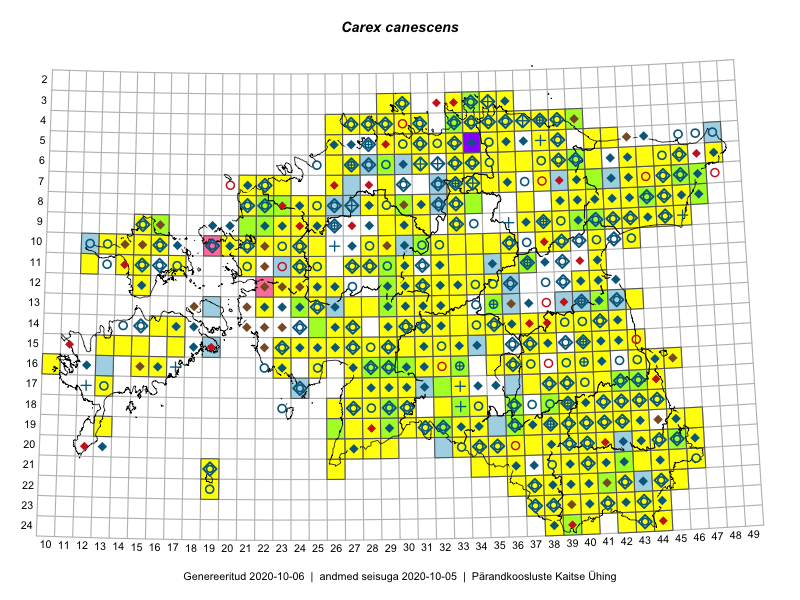

Carex canescens — hallikas tarn
Cyperaceae :: Carex canescens L. (1425); Carex curta Gooden. (4); Carex cinerea Pollich (2)

Kaart põhineb 2149 kirjel:
vaatlusi 990
herbaareksemplare 441
PKÜ kirjeid1 120
ELFi kirjeid2 596
LVA kirjeid3 2
Taime kaasaegsed ja ajaloolised leiukohad asuvad 439 ruudus.
Tingmärgid ja leidudega ruutude arvud periooditi uues (u) ja 2005 andmestikus (v)
| █ | vahemik | u4 | v5 |
|---|---|---|---|
| █ | 2006–2020 | 378 | – |
| ◆/◇ | 1971–2005 | 280 | 297 |
| ○ | 1921–1970 | 182 | 43 |
| + | kuni 1920 | 29 | 0 |
| × | hävinud | – | 0 |
| ? | kaheldav | – | 0 |
| Ruut | Leidja(d) | Leiuaeg | Kirje |
|---|---|---|---|
| 10-30 | Toivo Sepp | 2020-08-22 | ELF: 3040 |
| 17-33 | Meeli Mesipuu | 2020-08-19 | PKÜ: 20369 |
| 10-27 | Kai Vellak | 2020-08-18 | TU340125: Carex canescens L. |
| 21-42 | Silvia Pihu | 2020-08-11 | ELF: 12305 |
| 15-15 | Mari Reitalu, Sirje Azarov | 2020-08-07 | ruut/ala: Carex canescens L. |
| 10-23 | Ott Luuk | 2020-08-05 | ruut/ala: Carex canescens L. |
| 08-25 | Ott Luuk | 2020-07-22–2020-07-23 | ruut/ala: Carex canescens L. |
| 08-26 | Eerik Leibak | 2020-07-15 | ELF: 3512 |
| 08-26 | Eerik Leibak | 2020-07-15 | ELF: 3513 |
| 08-26 | Eerik Leibak | 2020-07-15 | ELF: 2751 |
| 22-43 | Eerik Leibak | 2020-07-09 | ELF: 9957 |
| 19-39 | Jaanus Paal, Taimi Paal | 2020-07-08 | ELF: 24863 |
| 20-45 | Toomas Kukk, Eerik Leibak | 2020-07-07 | ruut/ala: Carex canescens L. |
| 20-45 | Toomas Kukk | 2020-07-07 | ELF: 590 |
| 19-38 | Mari Reitalu, Sirje Azarov, Riine Latserus | 2020-07-05 | ruut/ala: Carex canescens L. |
| 19-37 | Mari Reitalu, Sirje Azarov, Riine Latserus | 2020-07-04 | ruut/ala: Carex canescens L. |
| 17-11 | Meeli Mesipuu | 2020-07-03 | PKÜ: 20187 |
| 04-33 | Rein Kalamees | 2020-06-26 | PKÜ: 20248 |
| 04-33 | Rein Kalamees | 2020-06-26 | PKÜ: 20239 |
| 04-33 | Rein Kalamees | 2020-06-22 | PKÜ: 20245 |
| 04-28 | Ott Luuk | 2020-06-22 | ruut/ala: Carex canescens L. |
| 09-21 | Peedu Saar | 2020-06-16 | TAA0152952: Carex canescens L. |
| 09-21 | Peedu Saar | 2020-06-16 | PKÜ: 20430 |
| 09-21 | Peedu Saar | 2020-06-16 | PKÜ: 20431 |
| 08-27 | Toomas Kukk | 2020-06-15 | PKÜ: 20463 |
| 11-32 | Ott Luuk, Peedu Saar | 2020-06-15 | PKÜ: 20415 |
| 13-31 | Meeli Mesipuu | 2020-06-15 | ruut/ala: Carex canescens L. |
| 18-41 | Ott Luuk | 2020-06-14 | punkt: Carex canescens L. |
| 05-34 | Rein Kalamees, Ott Luuk | 2020-06-10 | PKÜ: 20643 |
| 05-34 | Rein Kalamees, Ott Luuk | 2020-06-10 | PKÜ: 20647 |
| 04-33 | Peedu Saar | 2020-06-10 | ruut/ala: Carex canescens L. |
| 04-33 | Peedu Saar | 2020-06-10 | PKÜ: 20360 |
| 04-33 | Toomas Kukk, Meeli Mesipuu | 2020-06-09 | ELF: 19734 |
| 03-34 | Peedu Saar, Ene Kook | 2020-06-09 | PKÜ: 20340 |
| 03-34 | Peedu Saar, Ene Kook | 2020-06-09 | PKÜ: 20341 |
| 03-34 | Peedu Saar | 2020-06-09 | TAA0152956: Carex canescens L. |
| 03-34 | Peedu Saar | 2020-06-09 | TAA0152957: Carex canescens L. |
| 04-33;04-34 | Meeli Mesipuu, Toomas Kukk | 2020-06-09 | PKÜ: 20813 |
| 05-34 | Ott Luuk, Rein Kalamees | 2020-06-08 | PKÜ: 20259 |
| 05-34 | Ott Luuk, Rein Kalamees | 2020-06-08 | PKÜ: 20280 |
| 13-22 | Kaili Kattai | 2020-06-08 | punkt: Carex canescens L. |
| 09-44 | Ott Luuk | 2019-09-28 | ruut/ala: Carex canescens L. |
| 09-44 | Ott Luuk | 2019-09-28 | ELF: 24775 |
| 08-45 | Toomas Kukk, Thea Kull | 2019-09-12 | ruut/ala: Carex canescens L. |
| 06-45 | Thea Kull, Toomas Kukk | 2019-09-11 | punkt: Carex canescens L. |
| 08-43 | Ott Luuk, Meeli Mesipuu | 2019-09-10 | ruut/ala: Carex canescens L. |
| 10-23 | Tõnu Ploompuu | 2019-09-07 | ELF: 193 |
| 15-13 | Mari Reitalu, Sirje Azarov | 2019-08-31 | ruut/ala: Carex canescens L. |
| 14-32 | Meeli Mesipuu, Timo Luhamäe | 2019-08-29 | ruut/ala: Carex canescens L. |
| 15-32 | Mari Reitalu, Thea Kull, Martin Tikk | 2019-08-29 | ruut/ala: Carex canescens L. |
| 14-31 | Ott Luuk, Eerik Leibak | 2019-08-28 | ruut/ala: Carex canescens L. |
| 14-31 | Ott Luuk, Eerik Leibak | 2019-08-28 | ELF: 24752 |
| 13-29 | Mari Reitalu, Thea Kull | 2019-08-28 | ruut/ala: Carex canescens L. |
| 11-25 | Thea Kull | 2019-08-18 | ruut/ala: Carex canescens L. |
| 11-25 | Thea Kull | 2019-08-18 | ELF: 2937 |
| 12-26 | Thea Kull | 2019-08-17 | ruut/ala: Carex canescens L. |
| 12-26 | Thea Kull | 2019-08-17 | ELF: 2236 |
| 13-27 | Thea Kull | 2019-08-16 | punkt: Carex canescens L. |
| 13-27 | Thea Kull | 2019-08-16 | ELF: 975 |
| 09-40 | Rein Kalamees, Toomas Kukk | 2019-08-09 | ruut/ala: Carex canescens L. |
| 10-34 | Peedu Saar, Timo Luhamäe | 2019-08-08 | ruut/ala: Carex canescens L. |
| 03-33 | Ott Luuk, Jaak-Albert Metsoja | 2019-08-07 | ruut/ala: Carex canescens L. |
| 04-33 | Ott Luuk, Jaak-Albert Metsoja | 2019-08-07 | TAA0151455: Carex canescens L. |
| 03-34 | Rein Kalamees, Toomas Kukk | 2019-08-06 | ruut/ala: Carex canescens L. |
| 04-34 | Rein Kalamees, Toomas Kukk | 2019-08-06 | ruut/ala: Carex canescens L. |
| 04-39 | Ott Luuk, Jaak-Albert Metsoja | 2019-08-06 | ruut/ala: Carex canescens L. |
| 20-39 | Peedu Saar, Toomas Kukk | 2019-08-01 | ruut/ala: Carex canescens L. |
| 10-33 | Ott Luuk | 2019-07-31 | ruut/ala: Carex canescens L. |
| 08-21 | Peedu Saar | 2019-07-26 | ruut/ala: Carex canescens L. |
| 18-39 | Thea Kull | 2019-07-25 | ruut/ala: Carex canescens L. |
| 09-31 | Ott Luuk, Toivo Sepp | 2019-07-25 | ruut/ala: Carex canescens L. |
| 08-31 | Ott Luuk, Toivo Sepp | 2019-07-24 | ruut/ala: Carex canescens L. |
| 09-31 | Ott Luuk, Toivo Sepp | 2019-07-24 | ELF: 15838 |
| 08-22 | Peedu Saar | 2019-07-23 | ELF: 187 |
| 11-21 | Tõnu Ploompuu, Eliko Kõiv | 2019-07-21 | ELF: 204 |
| 23-42 | Toomas Kukk, Indrek Tammekänd | 2019-07-12 | ruut/ala: Carex canescens L. |
| 23-38 | Peedu Saar, Timo Luhamäe | 2019-07-12 | ruut/ala: Carex canescens L. |
| 22-44 | Ott Luuk, Tiit Hallikma | 2019-07-12 | ruut/ala: Carex canescens L. |
| 18-42 | Meeli Mesipuu | 2019-07-12 | ruut/ala: Carex canescens L. |
| 22-40 | Toomas Kukk, Indrek Tammekänd | 2019-07-11 | ruut/ala: Carex canescens L. |
| 23-39 | Peedu Saar, Timo Luhamäe | 2019-07-11 | ruut/ala: Carex canescens L. |
| 24-43 | Ott Luuk, Tiit Hallikma | 2019-07-11 | ruut/ala: Carex canescens L. |
| 12-36 | Eerik Leibak | 2019-07-11 | ELF: 455 |
| 12-36 | Eerik Leibak | 2019-07-11 | ELF: 24751 |
| 21-42 | Toomas Kukk, Indrek Tammekänd | 2019-07-10 | ruut/ala: Carex canescens L. |
| 19-39 | Thea Kull | 2019-07-10 | ruut/ala: Carex canescens L. |
| 20-45 | Ott Luuk, Tiit Hallikma | 2019-07-10 | ruut/ala: Carex canescens L. |
| 18-41 | Meeli Mesipuu | 2019-07-10 | ruut/ala: Carex canescens L. |
| 20-40 | Toomas Kukk, Indrek Tammekänd | 2019-07-09 | ruut/ala: Carex canescens L. |
| 20-43 | Ott Luuk, Tiit Hallikma | 2019-07-09 | ruut/ala: Carex canescens L. |
| 12-15 | Toomas Kukk, Eerik Leibak | 2019-07-04 | ELF: 608 |
| 10-13 | Toomas Kukk | 2019-07-04 | ruut/ala: Carex canescens L. |
| 11-41 | Peedu Saar, Ott Luuk | 2019-07-04 | ruut/ala: Carex canescens L. |
| 10-15 | Toomas Kukk | 2019-07-03 | ruut/ala: Carex canescens L. |
| 11-14 | Toomas Kukk | 2019-07-02 | ruut/ala: Carex canescens L. |
| 11-15 | Toomas Kukk | 2019-07-02 | ruut/ala: Carex canescens L. |
| 11-15 | Toomas Kukk | 2019-07-02 | ELF: 616 |
| 11-17 | Eerik Leibak, Toomas Kukk | 2019-07-01 | punkt: Carex canescens L. |
| 15-42 | Peedu Saar | 2019-06-15 | ruut/ala: Carex canescens L. |
| 10-36 | Ott Luuk, Peedu Saar | 2019-06-12 | punkt: Carex canescens L. |
| 05-33 | Ott Luuk, Peedu Saar | 2019-06-11 | ruut/ala: Carex canescens L. |
| 11-37 | Peedu Saar, Ott Luuk | 2019-06-10 | TAA0149201: Carex canescens L. |
| 11-37 | Peedu Saar, Ott Luuk | 2019-06-10 | TAA0149202: Carex canescens L. |
| 17-30 | Indrek Tammekänd | 2019-06-10 | ruut/ala: Carex canescens L. |
| 16-43 | Peedu Saar | 2019-06-07 | ruut/ala: Carex canescens L. |
| 15-43 | Peedu Saar | 2019-06-07 | ruut/ala: Carex canescens L. |
| 16-45 | Ott Luuk | 2019-06-07 | punkt: Carex canescens L. |
| 16-45 | Ott Luuk | 2019-06-07 | ruut/ala: Carex canescens L. |
| 08-29 | Eerik Leibak | 2019-06-06 | ELF: 21998 |
| 10-13 | Toomas Kukk, Indrek Tammekänd | 2019-06-02 | ruut/ala: Carex canescens L. |
| 16-28 | Indrek Tammekänd | 2019-05-29–2019-08-23 | ruut/ala: Carex canescens L. |
| 11-21 | Tõnu Ploompuu | 2018-09-02 | ELF: 205 |
| 20-44 | Toomas Kukk, Timo Luhamäe, Eerik Leibak | 2018-08-27 | ELF: 24679 |
| 20-44 | Toomas Kukk, Eerik Leibak, Timo Luhamäe | 2018-08-27 | ruut/ala: Carex canescens L. |
| 12-25 | Toomas Kukk, Ott Luuk, Peedu Saar | 2018-08-17 | ruut/ala: Carex canescens L. |
| 04-34 | Peedu Saar, Toomas Kukk | 2018-08-08 | ruut/ala: Carex canescens L. |
| 13-19 | Mari Reitalu, Sirje Azarov | 2018-08-07 | ELF: 1421 |
| 16-43 | Peedu Saar | 2018-08-06 | ruut/ala: Carex canescens L. |
| 10-31 | Ott Luuk | 2018-08-01 | TAA0144738: Carex canescens L. |
| 13-35 | Eerik Leibak | 2018-07-23 | ELF: 463 |
| 19-34 | Eerik Leibak | 2018-07-21 | ELF: 16185 |
| 14-40 | Peedu Saar | 2018-07-20 | ruut/ala: Carex canescens L. |
| 09-45 | Peedu Saar | 2018-07-19 | ruut/ala: Carex canescens L. |
| 23-43 | Toomas Kukk, Eerik Leibak | 2018-07-18 | ruut/ala: Carex canescens L. |
| 23-41 | Eerik Leibak | 2018-07-18 | ELF: 18451 |
| 09-44 | Toomas Kukk | 2018-07-17 | ruut/ala: Carex canescens L. |
| 09-44 | Toomas Kukk | 2018-07-17 | ruut/ala: Carex canescens L. |
| 09-43 | Toomas Kukk | 2018-07-17 | ruut/ala: Carex canescens L. |
| 09-45 | Peedu Saar | 2018-07-17 | ruut/ala: Carex canescens L. |
| 18-30 | Indrek Tammekänd | 2018-07-15 | ELF: 24580 |
| 21-40 | Eerik Leibak | 2018-07-15 | ELF: 24672 |
| 06-31 | Eerik Leibak | 2018-07-11 | ELF: 298 |
| 04-31 | Eerik Leibak | 2018-07-11 | ELF: 13000 |
| 04-31 | Eerik Leibak | 2018-07-11 | ELF: 24539 |
| 16-30 | Kai Vellak | 2018-07-10 | TU284688: Carex canescens L. |
| 21-45 | Toomas Kukk, Eerik Leibak | 2018-07-06 | ruut/ala: Carex canescens L. |
| 20-45 | Toomas Kukk, Eerik Leibak | 2018-07-06 | ruut/ala: Carex canescens L. |
| 20-45 | Toomas Kukk, Eerik Leibak | 2018-07-06 | ELF: 23179 |
| 22-38 | Eerik Leibak | 2018-06-28 | ELF: 10042 |
| 11-25 | Ott Luuk, Toomas Kukk, Peedu Saar, Ilmar Uibopuu | 2018-06-25 | ruut/ala: Carex canescens L. |
| 07-33 | Indrek Tammekänd, Eike Tammekänd, Murel Truu | 2018-06-09–2018-06-10 | ruut/ala: Carex canescens L. |
| 16-31 | Indrek Tammekänd | 2018-06-04–2018-06-05 | ruut/ala: Carex canescens L. |
| 19-34 | Mari Reitalu, Elle Roosaluste | 2018-06-02 | ruut/ala: Carex canescens L. |
| 17-43 | Peedu Saar, Thea Kull, Malle Leht | 2018-05-28–2018-05-30 | ruut/ala: Carex canescens L. |
| 10-36 | Indrek Tammekänd | 2018-05-27 | ruut/ala: Carex canescens L. |
| 11-37 | Indrek Tammekänd, Jaak Tammekänd, Alar Soppe, Margus Pensa | 2018-05-26 | ruut/ala: Carex canescens L. |
| 11-36 | Indrek Tammekänd, Jaak Tammekänd, Agu Leivits, Meelis Leivits, Alar Soppe, Triin Leetmaa, Margus Pensa | 2018-05-25–2018-05-27 | ruut/ala: Carex canescens L. |
| 06-35 | Eerik Leibak | 2017-09-07 | ELF: 24504 |
| 06-35 | Eerik Leibak | 2017-09-07 | ELF: 24505 |
| 19-29 | Toomas Kukk, Ott Luuk, Kersti Tambets, Timo Luhamäe, Sten Mander | 2017-08-29 | ruut/ala: Carex canescens L. |
| 14-35 | Meeli Mesipuu, Ott Luuk, Helen Toom | 2017-08-28 | ruut/ala: Carex canescens L. |
| 12-41 | Ott Luuk, Peedu Saar | 2017-08-23 | ruut/ala: Carex canescens L. |
| 15-37 | Meeli Mesipuu | 2017-08-22 | ruut/ala: Carex canescens L. |
| 15-38 | Indrek Tammekänd | 2017-08-17 | ruut/ala: Carex canescens L. |
| 14-36 | Indrek Tammekänd | 2017-08-16 | ruut/ala: Carex canescens L. |
| 14-35 | Peedu Saar | 2017-08-15–2017-09-16 | ruut/ala: Carex canescens L. |
| 14-36 | Ott Luuk | 2017-08-15 | ruut/ala: Carex canescens L. |
| 14-36 | Meeli Mesipuu, Helen Toom | 2017-08-15 | ruut/ala: Carex canescens L. |
| 15-37 | Ott Luuk | 2017-08-14 | ruut/ala: Carex canescens L. |
| 16-28 | Peedu Saar, Timo Luhamäe | 2017-08-11 | ruut/ala: Carex canescens L. |
| 14-27 | Ott Luuk, Indrek Tammekänd | 2017-08-11 | ruut/ala: Carex canescens L. |
| 09-24 | Mari Reitalu, Eerik Leibak | 2017-08-11 | ruut/ala: Carex canescens L. |
| 12-24 | Peedu Saar, Timo Luhamäe | 2017-08-09 | ruut/ala: Carex canescens L. |
| 12-25 | Peedu Saar, Timo Luhamäe | 2017-08-09 | ruut/ala: Carex canescens L. |
| 12-26 | Mari Reitalu, Eerik Leibak | 2017-08-09 | ruut/ala: Carex canescens L. |
| 10-28 | Thea Kull, Ott Luuk | 2017-08-08 | ruut/ala: Carex canescens L. |
| 11-28 | Ott Luuk, Thea Kull | 2017-08-08 | ruut/ala: Carex canescens L. |
| 13-33 | Toomas Kukk, Ilmar Uibopuu | 2017-08-07 | ruut/ala: Carex canescens L. |
| 12-32 | Ott Luuk, Thea Kull | 2017-08-07 | ruut/ala: Carex canescens L. |
| 15-37 | Peedu Saar | 2017-08-03–2017-08-04 | ruut/ala: Carex canescens L. |
| 11-34 | Thea Kull, Ott Luuk | 2017-08-03 | ruut/ala: Carex canescens L. |
| 12-34 | Ott Luuk, Thea Kull | 2017-08-03 | ruut/ala: Carex canescens L. |
| 08-31 | Helle Mäemets, Kadi Palmik | 2017-08-03 | ruut/ala: Carex canescens L. |
| 08-28 | Helle Mäemets, Kadi Palmik | 2017-08-03 | ruut/ala: Carex canescens L. |
| 16-39 | Thea Kull, Ott Luuk | 2017-08-01 | ruut/ala: Carex canescens L. |
| 16-37 | Ott Luuk, Thea Kull | 2017-08-01 | ruut/ala: Carex canescens L. |
| 24-43 | Meeli Mesipuu | 2017-07-31 | ruut/ala: Carex canescens L. |
| 08-22 | Toomas Kukk, Ilmar Uibopuu | 2017-07-29 | ruut/ala: Carex canescens L. |
| 07-21 | Toomas Kukk, Ilmar Uibopuu | 2017-07-28 | ruut/ala: Carex canescens L. |
| 21-36 | Peedu Saar, Ott Luuk | 2017-07-28 | ruut/ala: Carex canescens L. |
| 18-36 | Meeli Mesipuu | 2017-07-28 | ruut/ala: Carex canescens L. |
| 18-36 | Meeli Mesipuu | 2017-07-28 | TAA0144250: Carex canescens L. |
| 23-39 | Peedu Saar, Ott Luuk | 2017-07-27 | ruut/ala: Carex canescens L. |
| 22-39 | Ott Luuk, Peedu Saar | 2017-07-27 | ruut/ala: Carex canescens L. |
| 16-37 | Meeli Mesipuu | 2017-07-27 | ruut/ala: Carex canescens L. |
| 06-34 | Meeli Mesipuu | 2017-07-26 | ruut/ala: Carex canescens L. |
| 19-38 | Peedu Saar, Ott Luuk | 2017-07-25 | ruut/ala: Carex canescens L. |
| 20-38 | Ott Luuk, Peedu Saar | 2017-07-25 | ruut/ala: Carex canescens L. |
| 05-31 | Rein Kalamees | 2017-07-24 | ruut/ala: Carex canescens L. |
| 13-43 | Peedu Saar | 2017-07-24 | ruut/ala: Carex canescens L. |
| 06-31 | Peedu Saar, Ott Luuk | 2017-07-21 | ruut/ala: Carex canescens L. |
| 06-33 | Ott Luuk, Peedu Saar | 2017-07-21 | ruut/ala: Carex canescens L. |
| 19-29 | Indrek Tammekänd | 2017-07-21 | TAA0143369: Carex canescens L. |
| 04-27 | Peedu Saar | 2017-07-20 | ruut/ala: Carex canescens L. |
| 04-26 | Ott Luuk | 2017-07-20 | ruut/ala: Carex canescens L. |
| 06-34 | Peedu Saar, Ott Luuk | 2017-07-19 | ruut/ala: Carex canescens L. |
| 06-35 | Ott Luuk, Peedu Saar | 2017-07-19 | ruut/ala: Carex canescens L. |
| 08-40 | Peedu Saar, Ott Luuk | 2017-07-18 | ruut/ala: Carex canescens L. |
| 07-21 | Helle Mäemets, Kadi Palmik | 2017-07-15 | ruut/ala: Carex canescens L. |
| 07-21 | Helle Mäemets, Kadi Palmik | 2017-07-15 | punkt: Carex canescens L. |
| 08-25 | Helle Mäemets, Kadi Palmik | 2017-07-14 | ruut/ala: Carex canescens L. |
| 21-38 | Helle Mäemets, Kadi Palmik | 2017-07-07 | ruut/ala: Carex canescens L. |
| 21-38 | Helle Mäemets, Kadi Palmik | 2017-07-07 | punkt: Carex canescens L. |
| 15-41 | Ott Luuk, Peedu Saar | 2017-07-05 | ruut/ala: Carex canescens L. |
| 18-29 | Indrek Tammekänd | 2017-07-05 | ruut/ala: Carex canescens L. |
| 18-29 | Indrek Tammekänd | 2017-07-05 | TAA0143327: Carex canescens L. |
| 18-40 | Helle Mäemets, Kadi Palmik-Das | 2017-07-05 | punkt: Carex canescens L. |
| 18-40 | Helle Mäemets, Kadi Palmik | 2017-07-05 | ruut/ala: Carex canescens L. |
| 16-41 | Peedu Saar, Ott Luuk | 2017-07-03–2017-07-04 | ruut/ala: Carex canescens L. |
| 08-45 | Eerik Leibak | 2017-06-28 | ELF: 20757 |
| 09-45 | Eerik Leibak | 2017-06-28 | ELF: 20815 |
| 09-45 | Eerik Leibak | 2017-06-28 | ELF: 20820 |
| 09-45;09-46 | Eerik Leibak | 2017-06-28 | ELF: 20831 |
| 09-45 | Eerik Leibak | 2017-06-27 | ELF: 24490 |
| 15-41 | Peedu Saar | 2017-06-22 | ruut/ala: Carex canescens L. |
| 16-35 | Ott Luuk, Thea Kull | 2017-06-22 | ruut/ala: Carex canescens L. |
| 16-36 | Ott Luuk, Thea Kull | 2017-06-21 | ruut/ala: Carex canescens L. |
| 15-37 | Meeli Mesipuu | 2017-06-21 | punkt: Carex canescens L. |
| 15-35 | Ott Luuk, Peedu Saar | 2017-06-20 | ruut/ala: Carex canescens L. |
| 14-37 | Thea Kull, Meeli Mesipuu | 2017-06-19 | ruut/ala: Carex canescens L. |
| 18-30 | Helle Mäemets, Kadi Palmik | 2017-06-17 | ruut/ala: Carex canescens L. |
| 17-38 | Ott Luuk | 2017-06-11 | ruut/ala: Carex canescens L. |
| 17-38 | Ott Luuk | 2017-06-11 | punkt: Carex canescens L. |
| 17-27 | Indrek Tammekänd | 2016-09-23 | ruut/ala: Carex canescens L. |
| 05-32 | Toomas Kukk, Sander Laherand | 2016-08-31 | ruut/ala: Carex canescens L. |
| 04-31 | Sander Laherand, Toomas Kukk | 2016-08-31 | ruut/ala: Carex canescens L. |
| 14-16 | Ott Luuk, Peedu Saar | 2016-08-31 | ruut/ala: Carex canescens L. |
| 05-29 | Toomas Kukk, Sander Laherand | 2016-08-29 | ruut/ala: Carex canescens L. |
| 06-29 | Sander Laherand, Toomas Kukk | 2016-08-29 | ruut/ala: Carex canescens L. |
| 18-38 | Ott Luuk, Thea Kull | 2016-08-23 | ruut/ala: Carex canescens L. |
| 19-27 | Ott Luuk, Meeli Mesipuu | 2016-08-15 | ruut/ala: Carex canescens L. |
| 11-12 | Peedu Saar, Thea Kull | 2016-08-10 | ruut/ala: Carex canescens L. |
| 10-15 | Toomas Kukk, Sander Laherand, Nele Jõessar | 2016-08-09 | ruut/ala: Carex canescens L. |
| 11-15 | Thea Kull, Peedu Saar | 2016-08-09 | ruut/ala: Carex canescens L. |
| 10-14 | Sander Laherand, Toomas Kukk, Nele Jõessar | 2016-08-09 | ruut/ala: Carex canescens L. |
| 09-40 | Ott Luuk, Eerik Leibak | 2016-08-09 | ruut/ala: Carex canescens L. |
| 09-39 | Ott Luuk, Eerik Leibak | 2016-08-09 | ruut/ala: Carex canescens L. |
| 10-16 | Meeli Mesipuu, Maret Gerz | 2016-08-09 | ruut/ala: Carex canescens L. |
| 10-38 | Ott Luuk, Eerik Leibak | 2016-08-08 | ruut/ala: Carex canescens L. |
| 09-41 | Ott Luuk, Eerik Leibak | 2016-08-05 | ruut/ala: Carex canescens L. |
| 09-41 | Ott Luuk, Eerik Leibak | 2016-08-05 | TAA0144724: Carex canescens L. |
| 10-41 | Ott Luuk, Eerik Leibak | 2016-08-04 | ruut/ala: Carex canescens L. |
| 10-39 | Ott Luuk, Eerik Leibak | 2016-08-03 | ruut/ala: Carex canescens L. |
| 08-40 | Toomas Kukk, Tiit Hallikma | 2016-07-29 | ruut/ala: Carex canescens L. |
| 07-40 | Toomas Kukk, Tiit Hallikma | 2016-07-29 | ruut/ala: Carex canescens L. |
| 05-30 | Sander Laherand, Eerik Leibak | 2016-07-29 | ruut/ala: Carex canescens L. |
| 08-42 | Peedu Saar, Timo Luhamäe | 2016-07-29 | ruut/ala: Carex canescens L. |
| 10-43 | Hannes Pehlak, Ott Luuk | 2016-07-29 | ruut/ala: Carex canescens L. |
| 06-40 | Sander Laherand, Peedu Saar | 2016-07-28 | ruut/ala: Carex canescens L. |
| 05-39 | Ott Luuk, Tiit Hallikma | 2016-07-28 | ruut/ala: Carex canescens L. |
| 04-33 | Meeli Mesipuu, Timo Luhamäe | 2016-07-28 | ruut/ala: Carex canescens L. |
| 07-38 | Liina Oja, Eerik Leibak | 2016-07-28 | ruut/ala: Carex canescens L. |
| 05-38 | Hannes Pehlak, Toomas Kukk, Susanna Vain | 2016-07-28 | ruut/ala: Carex canescens L. |
| 05-36 | Tõnu Ploompuu, Eerik Leibak | 2016-07-27 | ruut/ala: Carex canescens L. |
| 07-35 | Toomas Kukk, Sander Laherand, Nele Jõessar | 2016-07-27 | ruut/ala: Carex canescens L. |
| 07-36 | Thea Kull, Timo Luhamäe | 2016-07-27 | ruut/ala: Carex canescens L. |
| 05-35 | Peedu Saar, Liina Oja, Susanna Vain | 2016-07-27 | ruut/ala: Carex canescens L. |
| 06-37 | Meeli Mesipuu, Tiit Hallikma | 2016-07-27 | ruut/ala: Carex canescens L. |
| 04-38 | Thea Kull, Susanna Vain, Eerik Leibak | 2016-07-26 | ruut/ala: Carex canescens L. |
| 04-37 | Thea Kull, Eerik Leibak, Susanna Vain | 2016-07-26 | ruut/ala: Carex canescens L. |
| 04-35 | Sander Laherand, Ott Luuk, Nele Jõessar | 2016-07-26 | ruut/ala: Carex canescens L. |
| 03-35 | Ott Luuk, Sander Laherand, Nele Jõessar | 2016-07-26 | ruut/ala: Carex canescens L. |
| 04-36 | Meeli Mesipuu, Liina Oja | 2016-07-26 | ruut/ala: Carex canescens L. |
| 03-36 | Meeli Mesipuu, Liina Oja | 2016-07-26 | ruut/ala: Carex canescens L. |
| 10-35 | Toomas Kukk, Tiit Hallikma | 2016-07-25 | ruut/ala: Carex canescens L. |
| 06-39 | Thea Kull, Hannes Pehlak | 2016-07-25 | ruut/ala: Carex canescens L. |
| 04-28 | Sander Laherand, Tõnu Ploompuu, Nele Jõessar | 2016-07-25 | ruut/ala: Carex canescens L. |
| 11-36 | Meeli Mesipuu, Timo Luhamäe | 2016-07-25 | ruut/ala: Carex canescens L. |
| 17-38 | Kersti Püssa, Rein Kalamees | 2016-07-25 | ruut/ala: Carex canescens L. |
| 06-38 | Hannes Pehlak, Thea Kull | 2016-07-25 | ruut/ala: Carex canescens L. |
| 08-31 | Erkki Otsman, Sergei Smirnov | 2016-07-24 | ruut/ala: Carex canescens L. |
| 12-33 | Tõnu Ploompuu, Marko Veinbergs, Eerik Leibak | 2016-07-22 | ruut/ala: Carex canescens L. |
| 10-31 | Toivo Sepp, Peedu Saar | 2016-07-22 | ruut/ala: Carex canescens L. |
| 14-34 | Thea Kull, Tiit Hallikma | 2016-07-22 | ruut/ala: Carex canescens L. |
| 14-29 | Sirje Azarov, Oliver Parrest | 2016-07-22 | ruut/ala: Carex canescens L. |
| 12-35 | Ott Luuk, Hannes Pehlak | 2016-07-22 | ruut/ala: Carex canescens L. |
| 15-35 | Liina Oja, Susanna Vain, Elle Rajandu | 2016-07-22 | ruut/ala: Carex canescens L. |
| 15-33 | Jaak-Albert Metsoja, Mari Metsoja | 2016-07-22 | ruut/ala: Carex canescens L. |
| 08-31 | Erkki Otsman, Sergei Smirnov | 2016-07-22 | ruut/ala: Carex canescens L. |
| 13-30 | Tõnu Ploompuu, Hannes Pehlak, Marko Veinbergs | 2016-07-21 | ruut/ala: Carex canescens L. |
| 15-32 | Toomas Kukk, Liina Oja | 2016-07-21 | ruut/ala: Carex canescens L. |
| 12-32 | Thea Kull, Raivo Kalle, Susanna Vain | 2016-07-21 | ruut/ala: Carex canescens L. |
| 14-30 | Hannes Pehlak, Tõnu Ploompuu, Marko Veinbergs | 2016-07-21 | ruut/ala: Carex canescens L. |
| 15-28 | Elle Rajandu, Tiit Hallikma | 2016-07-21 | ruut/ala: Carex canescens L. |
| 15-27 | Tiit Hallikma, Tõnu Ploompuu | 2016-07-20 | ruut/ala: Carex canescens L. |
| 16-29 | Thea Kull, Hannes Pehlak | 2016-07-20 | ruut/ala: Carex canescens L. |
| 16-29 | Thea Kull, Hannes Pehlak | 2016-07-20 | TAA0139427: Carex canescens L. |
| 18-36 | Peedu Saar, Mari Metsoja | 2016-07-20 | TAA0136396: Carex canescens L. |
| 17-30 | Oliver Parrest, Timo Luhamäe | 2016-07-20 | ruut/ala: Carex canescens L. |
| 16-30 | Hannes Pehlak, Thea Kull | 2016-07-20 | ruut/ala: Carex canescens L. |
| 18-32 | Toomas Kukk, Hannes Pehlak | 2016-07-19 | ruut/ala: Carex canescens L. |
| 18-34 | Thea Kull, Indrek Tammekänd | 2016-07-19 | ruut/ala: Carex canescens L. |
| 18-33 | Thea Kull, Hannes Pehlak | 2016-07-19 | TAA0139425: Carex canescens L. |
| 18-30 | Ott Luuk, Raivo Kalle, Susanna Vain | 2016-07-19 | ruut/ala: Carex canescens L. |
| 19-30 | Ott Luuk, Raivo Kalle, Susanna Vain | 2016-07-19 | ruut/ala: Carex canescens L. |
| 18-27 | Oliver Parrest, Elle Rajandu | 2016-07-19 | ruut/ala: Carex canescens L. |
| 19-31 | Meeli Mesipuu, Mari Metsoja | 2016-07-19 | ruut/ala: Carex canescens L. |
| 20-28 | Aat Sarv, Eerik Leibak | 2016-07-19 | ruut/ala: Carex canescens L. |
| 21-34 | Toomas Kukk, Susanna Vain, Raivo Kalle | 2016-07-18 | ruut/ala: Carex canescens L. |
| 21-35 | Toomas Kukk, Susanna Vain, Raivo Kalle | 2016-07-18 | ruut/ala: Carex canescens L. |
| 20-34 | Thea Kull, Eerik Leibak | 2016-07-18 | ruut/ala: Carex canescens L. |
| 20-26 | Sirje Azarov, Indrek Tammekänd | 2016-07-18 | ruut/ala: Carex canescens L. |
| 21-26 | Sirje Azarov, Indrek Tammekänd | 2016-07-18 | ruut/ala: Carex canescens L. |
| 19-27 | Ott Luuk, Hannes Pehlak | 2016-07-18 | ruut/ala: Carex canescens L. |
| 08-43 | Thea Kull | 2016-07-14 | punkt: Carex canescens L. |
| 09-40 | Thea Kull | 2016-07-14 | TAA0139426: Carex canescens L. |
| 08-37 | Mari Reitalu, Triin Reitalu | 2016-07-12 | ruut/ala: Carex canescens L. |
| 06-27 | Erkki Otsman, Sergei Smirnov | 2016-07-12 | ruut/ala: Carex canescens L. |
| 09-37 | Mari Reitalu, Triin Reitalu | 2016-07-11 | ruut/ala: Carex canescens L. |
| 15-25 | Toomas Kukk, Oliver Parrest | 2016-07-08 | ruut/ala: Carex canescens L. |
| 13-28 | Thea Kull, Tiit Hallikma | 2016-07-08 | ruut/ala: Carex canescens L. |
| 07-29 | Rein Kalamees, Sander Laherand | 2016-07-08 | ruut/ala: Carex canescens L. |
| 11-27 | Meeli Mesipuu | 2016-07-08 | ruut/ala: Carex canescens L. |
| 14-26 | Maret Gerz, Liina Oja | 2016-07-08 | ruut/ala: Carex canescens L. |
| 08-24 | Jaak-Albert Metsoja, Mari Metsoja | 2016-07-08 | ruut/ala: Carex canescens L. |
| 09-24 | Jaak-Albert Metsoja, Mari Metsoja | 2016-07-08 | ruut/ala: Carex canescens L. |
| 08-23 | Aat Sarv | 2016-07-08 | TAA0144955: Carex canescens L. |
| 07-22 | Mari Reitalu, Eerik Leibak | 2016-07-07–2016-07-10 | ruut/ala: Carex canescens L. |
| 10-20 | Peedu Saar, Timo Luhamäe | 2016-07-07 | ruut/ala: Carex canescens L. |
| 07-21 | Meeli Mesipuu | 2016-07-07 | ruut/ala: Carex canescens L. |
| 08-22 | Mari Reitalu, Eerik Leibak | 2016-07-07 | ruut/ala: Carex canescens L. |
| 11-21 | Aat Sarv, Maret Gerz | 2016-07-07 | ruut/ala: Carex canescens L. |
| 09-29 | Toomas Kukk, Sander Laherand | 2016-07-06 | ruut/ala: Carex canescens L. |
| 09-25 | Thea Kull, Oliver Parrest | 2016-07-06 | ruut/ala: Carex canescens L. |
| 10-25 | Sirje Azarov, Meeli Mesipuu | 2016-07-06 | ruut/ala: Carex canescens L. |
| 09-30 | Sander Laherand, Toomas Kukk | 2016-07-06 | ruut/ala: Carex canescens L. |
| 12-29 | Mari Reitalu, Eerik Leibak | 2016-07-06 | ruut/ala: Carex canescens L. |
| 09-23 | Jaak-Albert Metsoja, Mari Metsoja | 2016-07-06 | ruut/ala: Carex canescens L. |
| 11-24 | Helle Mäemets, Tiina Elvisto | 2016-07-06 | ruut/ala: Carex canescens L. |
| 12-25 | Meeli Mesipuu, Sirje Azarov | 2016-07-05 | ruut/ala: Carex canescens L. |
| 12-26 | Jaak-Albert Metsoja, Mari Metsoja | 2016-07-05 | ruut/ala: Carex canescens L. |
| 18-28 | Indrek Tammekänd | 2016-07-05 | ruut/ala: Carex canescens L. |
| 13-22 | Aat Sarv, Maret Gerz | 2016-07-05 | ruut/ala: Carex canescens L. |
| 16-25 | Thea Kull, Helle Mäemets | 2016-07-04 | ruut/ala: Carex canescens L. |
| 16-25 | Thea Kull, Helle Mäemets | 2016-07-04 | punkt: Carex canescens L. |
| 08-30 | Rein Kalamees, Liina Oja | 2016-07-04 | ruut/ala: Carex canescens L. |
| 16-23 | Peedu Saar, Timo Luhamäe, Johannes Kõdar | 2016-07-04 | ruut/ala: Carex canescens L. |
| 07-26 | Jaak-Albert Metsoja, Mari Metsoja | 2016-07-04 | ruut/ala: Carex canescens L. |
| 15-26 | Aat Sarv, Maret Gerz | 2016-07-04 | ruut/ala: Carex canescens L. |
| 07-23 | Jaak-Albert Metsoja, Mari Metsoja | 2016-06-30 | ruut/ala: Carex canescens L. |
| 09-45 | Eerik Leibak | 2016-06-30 | ruut/ala: Carex canescens L. |
| 10-43 | Rein Kalamees, Kersti Püssa | 2016-06-29 | ruut/ala: Carex canescens L. |
| 06-35 | Karin Kikas, Elle Rajandu | 2016-06-29 | ruut/ala: Carex canescens L. |
| 07-35 | Karin Kikas, Elle Rajandu | 2016-06-29 | ruut/ala: Carex canescens L. |
| 16-15 | Meeli Mesipuu | 2016-06-28 | ruut/ala: Carex canescens L. |
| 06-37 | Karin Kikas, Elle Rajandu | 2016-06-28 | ruut/ala: Carex canescens L. |
| 06-36 | Karin Kikas, Elle Rajandu | 2016-06-28 | punkt: Carex canescens L. |
| 16-28 | Thea Kull | 2016-06-27 | TAA0139428: Carex canescens L. |
| 24-39 | Anneli Palo | 2016-06-25 | TAA0136336: Carex canescens L. |
| 24-39 | Anneli Palo | 2016-06-25 | LVA: 1974308128 |
| 13-25 | Thea Kull | 2016-06-22 | ruut/ala: Carex canescens L. |
| 16-10 | Sirje Azarov | 2016-06-22 | ruut/ala: Carex canescens L. |
| 20-29 | Indrek Tammekänd | 2016-06-22 | ruut/ala: Carex canescens L. |
| 14-25 | Thea Kull | 2016-06-21 | ruut/ala: Carex canescens L. |
| 14-30 | Indrek Tammekänd, Marja-Liisa Meriste | 2016-06-21 | ruut/ala: Carex canescens L. |
| 14-25 | Thea Kull, Toomas Kukk | 2016-06-18 | TAA0132913: Carex canescens L. |
| 06-29 | Thea Kull, Peedu Saar | 2016-06-18 | TAA0132911: Carex canescens L. |
| 09-33 | Thea Kull | 2016-06-18 | punkt: Carex canescens L. |
| 19-26 | Thea Kull | 2016-06-18 | TAA0132912: Carex canescens L. |
| 06-29 | Thea Kull | 2016-06-18 | TAA0139682: Carex canescens L. |
| 24-39 | Indrek Tammekänd | 2016-06-18 | ruut/ala: Carex canescens L. |
| 19-45 | Toomas Kukk, Tiit Hallikma | 2016-06-17 | ruut/ala: Carex canescens L. |
| 19-43 | Sander Laherand, Ott Luuk | 2016-06-17 | ruut/ala: Carex canescens L. |
| 20-39 | Rein Kalamees, Eerik Leibak | 2016-06-17 | ruut/ala: Carex canescens L. |
| 20-40 | Peedu Saar, Tarmo Niitla | 2016-06-17 | ruut/ala: Carex canescens L. |
| 19-42 | Ott Luuk, Sander Laherand | 2016-06-17 | ruut/ala: Carex canescens L. |
| 21-43 | Meeli Mesipuu, Timo Luhamäe | 2016-06-17 | ruut/ala: Carex canescens L. |
| 18-44 | Maret Gerz, Liina Oja | 2016-06-17 | ruut/ala: Carex canescens L. |
| 18-43 | Maret Gerz, Liina Oja | 2016-06-17 | ruut/ala: Carex canescens L. |
| 22-41 | Toomas Kukk, Tiit Hallikma | 2016-06-16 | ruut/ala: Carex canescens L. |
| 22-41 | Toomas Kukk, Tiit Hallikma | 2016-06-16 | TAA0138057: Carex canescens L. |
| 22-38 | Rein Kalamees, Eerik Leibak | 2016-06-16 | ruut/ala: Carex canescens L. |
| 23-38 | Rein Kalamees, Eerik Leibak | 2016-06-16 | ruut/ala: Carex canescens L. |
| 20-41 | Peedu Saar, Tarmo Niitla | 2016-06-16 | ruut/ala: Carex canescens L. |
| 21-41 | Ott Luuk, Sander Laherand | 2016-06-16 | ruut/ala: Carex canescens L. |
| 21-42 | Ott Luuk, Sander Laherand | 2016-06-16 | TAA0144756: Carex canescens L. |
| 22-39 | Meeli Mesipuu, Timo Luhamäe | 2016-06-16 | ruut/ala: Carex canescens L. |
| 23-39 | Meeli Mesipuu, Timo Luhamäe | 2016-06-16 | ruut/ala: Carex canescens L. |
| 19-37 | Maret Gerz, Liina Oja | 2016-06-16 | ruut/ala: Carex canescens L. |
| 22-37 | Jaak-Albert Metsoja, Mari Metsoja | 2016-06-16 | ruut/ala: Carex canescens L. |
| 22-42 | Toomas Kukk, Tiit Hallikma, Johannes Kõdar | 2016-06-15 | ruut/ala: Carex canescens L. |
| 23-41 | Sander Laherand, Ott Luuk, Susanna Vain | 2016-06-15 | ruut/ala: Carex canescens L. |
| 23-44 | Rein Kalamees, Eerik Leibak | 2016-06-15 | ruut/ala: Carex canescens L. |
| 24-44 | Rein Kalamees, Eerik Leibak | 2016-06-15 | ruut/ala: Carex canescens L. |
| 20-44 | Peedu Saar, Tarmo Niitla | 2016-06-15 | ruut/ala: Carex canescens L. |
| 24-43 | Meeli Mesipuu, Timo Luhamäe | 2016-06-15 | ruut/ala: Carex canescens L. |
| 23-43 | Meeli Mesipuu, Timo Luhamäe | 2016-06-15 | ruut/ala: Carex canescens L. |
| 23-37 | Maret Gerz, Liina Oja | 2016-06-15 | ruut/ala: Carex canescens L. |
| 09-40 | Kersti Püssa, Rein Kalamees | 2016-06-15 | ruut/ala: Carex canescens L. |
| 09-41 | Kersti Püssa, Rein Kalamees | 2016-06-15 | ruut/ala: Carex canescens L. |
| 21-36 | Kai Rünk, Ülle Jõgar, Illi Tarmu | 2016-06-15 | ruut/ala: Carex canescens L. |
| 22-36 | Kai Rünk, Ülle Jõgar, Illi Tarmu | 2016-06-15 | ruut/ala: Carex canescens L. |
| 22-45 | Jaak-Albert Metsoja, Mari Metsoja | 2016-06-15 | ruut/ala: Carex canescens L. |
| 22-44 | Jaak-Albert Metsoja, Mari Metsoja | 2016-06-15 | ruut/ala: Carex canescens L. |
| 19-29 | Indrek Tammekänd, Eike Vunk | 2016-06-15 | ruut/ala: Carex canescens L. |
| 21-44 | Toomas Kukk, Tiit Hallikma, Johannes Kõdar | 2016-06-14 | ruut/ala: Carex canescens L. |
| 21-45 | Toomas Kukk, Tiit Hallikma, Johannes Kõdar | 2016-06-14 | ruut/ala: Carex canescens L. |
| 20-46 | Timo Luhamäe, Meeli Mesipuu | 2016-06-14 | ruut/ala: Carex canescens L. |
| 21-46 | Timo Luhamäe, Meeli Mesipuu | 2016-06-14 | ruut/ala: Carex canescens L. |
| 20-36 | Tarmo Niitla, Peedu Saar | 2016-06-14 | ruut/ala: Carex canescens L. |
| 19-36 | Tarmo Niitla, Peedu Saar | 2016-06-14 | TAA0136437: Carex canescens L. |
| 23-40 | Sander Laherand, Ott Luuk, Susanna Vain | 2016-06-14 | ruut/ala: Carex canescens L. |
| 23-42 | Rein Kalamees, Eerik Leibak | 2016-06-14 | ruut/ala: Carex canescens L. |
| 24-42 | Rein Kalamees, Eerik Leibak | 2016-06-14 | ruut/ala: Carex canescens L. |
| 24-40 | Ott Luuk, Sander Laherand, Susanna Vain | 2016-06-14 | ruut/ala: Carex canescens L. |
| 24-38 | Maret Gerz, Liina Oja | 2016-06-14 | ruut/ala: Carex canescens L. |
| 20-45 | Jaak-Albert Metsoja | 2016-06-14 | TAA0133828: Carex canescens L. |
| 19-40 | Toomas Kukk, Tiit Hallikma, Johannes Kõdar | 2016-06-13 | ruut/ala: Carex canescens L. |
| 17-43 | Rein Kalamees, Eerik Leibak | 2016-06-13 | ruut/ala: Carex canescens L. |
| 16-43 | Rein Kalamees, Eerik Leibak | 2016-06-13 | ruut/ala: Carex canescens L. |
| 18-41 | Ott Luuk, Sander Laherand, Susanna Vain | 2016-06-13 | ruut/ala: Carex canescens L. |
| 19-41 | Ott Luuk, Sander Laherand, Susanna Vain | 2016-06-13 | ruut/ala: Carex canescens L. |
| 18-38 | Meeli Mesipuu, Timo Luhamäe | 2016-06-13 | ruut/ala: Carex canescens L. |
| 16-44 | Maret Gerz, Liina Oja | 2016-06-13 | ruut/ala: Carex canescens L. |
| 17-44 | Maret Gerz, Liina Oja | 2016-06-13 | ruut/ala: Carex canescens L. |
| 17-42 | Jaak-Albert Metsoja | 2016-06-13 | TAA0133794: Carex canescens L. |
| 18-27 | Peedu Saar, Ott Luuk | 2016-06-10 | ruut/ala: Carex canescens L. |
| 18-26 | Ott Luuk, Peedu Saar | 2016-06-10 | ruut/ala: Carex canescens L. |
| 13-41 | Kai Rünk, Ülle Jõgar, Illi Tarmu | 2016-06-10 | ruut/ala: Carex canescens L. |
| 08-47 | Rein Kalamees, Kersti Püssa | 2016-06-09 | ruut/ala: Carex canescens L. |
| 07-46 | Rein Kalamees, Kersti Püssa | 2016-06-09 | ruut/ala: Carex canescens L. |
| 20-28 | Peedu Saar, Ott Luuk | 2016-06-09 | ruut/ala: Carex canescens L. |
| 19-28 | Ott Luuk, Peedu Saar | 2016-06-09 | ruut/ala: Carex canescens L. |
| 16-30 | Indrek Tammekänd | 2016-06-08 | ruut/ala: Carex canescens L. |
| 19-26 | Thea Kull, Peedu Saar | 2016-06-07 | punkt: Carex canescens L. |
| 08-42 | Rein Kalamees, Kersti Püssa | 2016-06-07 | ruut/ala: Carex canescens L. |
| 19-26 | Peedu Saar, Thea Kull | 2016-06-07 | ruut/ala: Carex canescens L. |
| 16-29 | Indrek Tammekänd | 2016-06-07 | ruut/ala: Carex canescens L. |
| 20-27 | Thea Kull, Peedu Saar | 2016-06-06 | ruut/ala: Carex canescens L. |
| 12-41 | Eeva-Maria Jeletsky, Tarmo Niitla | 2016-06-04 | ruut/ala: Carex canescens L. |
| 19-29 | Toomas Kukk, Tiit Hallikma | 2016-06-03 | ruut/ala: Carex canescens L. |
| 16-28 | Indrek Tammekänd | 2016-06-03 | ruut/ala: Carex canescens L. |
| 16-27 | Indrek Tammekänd | 2016-06-01 | ruut/ala: Carex canescens L. |
| 08-29 | Thea Kull, Ott Luuk | 2016-05-30 | ruut/ala: Carex canescens L. |
| 09-29 | Ott Luuk, Thea Kull | 2016-05-30 | ruut/ala: Carex canescens L. |
| 07-45 | Indrek Tammekänd | 2016-05-30 | ruut/ala: Carex canescens L. |
| 08-46 | Indrek Tammekänd | 2016-05-28–2016-05-29 | ruut/ala: Carex canescens L. |
| 04-26 | Peedu Saar, Thea Kull | 2016-05-25 | ruut/ala: Carex canescens L. |
| 06-34 | Rein Kalamees, Kersti Püssa | 2015-09-11 | ruut/ala: Carex canescens L. |
| 07-41 | Thea Kull, Eerik Leibak | 2015-09-10 | ruut/ala: Carex canescens L. |
| 04-30 | Peedu Saar, Ott Luuk | 2015-09-03 | PKÜ: 19980 |
| 03-30 | Ott Luuk, Peedu Saar | 2015-09-03 | ruut/ala: Carex canescens L. |
| 12-22 | Thea Kull, Eerik Leibak | 2015-08-27 | PKÜ: 19822 |
| 09-42 | Tõnu Ploompuu | 2015-08-26–2015-08-29 | ruut/ala: Carex canescens L. |
| 12-23 | Meeli Mesipuu, Maret Gerz | 2015-08-24 | ruut/ala: Carex canescens L. |
| 10-21 | Tõnu Ploompuu | 2015-08-21–2015-08-23 | ruut/ala: Carex canescens L. |
| 10-29 | Ott Luuk, Toivo Sepp | 2015-08-21 | ruut/ala: Carex canescens L. |
| 11-30 | Toivo Sepp, Ott Luuk | 2015-08-20 | ruut/ala: Carex canescens L. |
| 19-46 | Meeli Mesipuu, Thea Kull | 2015-08-19 | ruut/ala: Carex canescens L. |
| 11-32 | Ott Luuk, Toivo Sepp | 2015-08-18–2015-08-19 | ruut/ala: Carex canescens L. |
| 09-24 | Tõnu Ploompuu, Sirje Lagle | 2015-08-18 | ruut/ala: Carex canescens L. |
| 08-24 | Sirje Lagle, Tõnu Ploompuu | 2015-08-18 | ruut/ala: Carex canescens L. |
| 09-25 | Meelis Muuga, Tõnu Ploompuu | 2015-08-17 | ruut/ala: Carex canescens L. |
| 12-40 | Peedu Saar, Eerik Leibak | 2015-08-16 | ruut/ala: Carex canescens L. |
| 24-43 | Ott Luuk, Peedu Saar | 2015-08-13 | ruut/ala: Carex canescens L. |
| 16-43 | Thea Kull, Meeli Mesipuu | 2015-08-12 | ruut/ala: Carex canescens L. |
| 23-43 | Ott Luuk, Peedu Saar | 2015-08-12 | ruut/ala: Carex canescens L. |
| 04-29 | Kadi-Liis Kesler, Tiina Elvisto | 2015-08-12 | ruut/ala: Carex canescens L. |
| 06-27 | Tõnu Ploompuu | 2015-08-11 | ruut/ala: Carex canescens L. |
| 09-15 | Toomas Kukk, Eerik Leibak | 2015-08-11 | ruut/ala: Carex canescens L. |
| 09-16 | Toomas Kukk, Eerik Leibak | 2015-08-11 | ruut/ala: Carex canescens L. |
| 09-16 | Toomas Kukk, Eerik Leibak | 2015-08-11 | TAA0135538: Carex canescens L. |
| 09-16 | Toomas Kukk, Eerik Leibak | 2015-08-11 | TAA0135539: Carex canescens L. |
| 13-41 | Peedu Saar | 2015-08-11 | ruut/ala: Carex canescens L. |
| 20-37 | Eeva-Maria Jeletsky, Tarmo Niitla | 2015-08-11 | ruut/ala: Carex canescens L. |
| 22-38 | Vivika Väli, Kaili Kattai | 2015-08-10 | ruut/ala: Carex canescens L. |
| 15-24 | Maret Gerz, Leena Gerz | 2015-08-10 | ruut/ala: Carex canescens L. |
| 15-25 | Maret Gerz, Leena Gerz | 2015-08-08 | ruut/ala: Carex canescens L. |
| 14-38 | Thea Kull | 2015-08-07 | ruut/ala: Carex canescens L. |
| 19-43 | Vivika Väli, Ülo Väli | 2015-08-05 | ruut/ala: Carex canescens L. |
| 21-45 | Rein Kalamees, Kersti Püssa | 2015-08-05 | punkt: Carex canescens L. |
| 23-40 | Eeva-Maria Jeletsky, Tarmo Niitla | 2015-08-05 | ruut/ala: Carex canescens L. |
| 14-36 | Peedu Saar | 2015-08-04 | ruut/ala: Carex canescens L. |
| 17-13 | Mari Reitalu, Oliver Parrest | 2015-08-04 | ruut/ala: Carex canescens L. |
| 18-41 | Vivika Väli, Ülo Väli | 2015-07-31 | ruut/ala: Carex canescens L. |
| 08-34 | Jana-Maria Habicht, Ester Valdvee | 2015-07-31 | ruut/ala: Carex canescens L. |
| 08-34 | Jana-Maria Habicht | 2015-07-31 | TAM0117279: Carex canescens L. |
| 08-34 | Jana-Maria Habicht | 2015-07-31 | TAM0118026: Carex canescens L. |
| 16-29 | Indrek Tammekänd | 2015-07-31 | ruut/ala: Carex canescens L. |
| 19-42 | Kirsi Loide, Marje Loide | 2015-07-29–2015-07-30 | ruut/ala: Carex canescens L. |
| 09-31 | Ott Luuk, Toivo Sepp | 2015-07-29 | ruut/ala: Carex canescens L. |
| 06-26 | Mari Metsoja, Jaak-Albert Metsoja | 2015-07-29 | ruut/ala: Carex canescens L. |
| 10-41 | Kai Rünk, Ülle Jõgar, Illi Tarmu | 2015-07-29 | ruut/ala: Carex canescens L. |
| 16-16 | Sirje Azarov, Aira Alasi | 2015-07-28 | ruut/ala: Carex canescens L. |
| 18-42 | Kirsi Loide, Marje Loide | 2015-07-28 | ruut/ala: Carex canescens L. |
| 15-27 | Kadi-Liis Kesler, Tiina Elvisto | 2015-07-28 | ruut/ala: Carex canescens L. |
| 11-25 | Hanna-Eliisa Luts, Tõnu Ploompuu | 2015-07-28 | ruut/ala: Carex canescens L. |
| 20-40 | Malle Leht, Raivo Leht | 2015-07-27–2015-07-30 | ruut/ala: Carex canescens L. |
| 17-42 | Kirsi Loide, Marje Loide | 2015-07-27–2015-07-28 | ruut/ala: Carex canescens L. |
| 20-41 | Vivika Väli, Ülo Väli | 2015-07-27 | ruut/ala: Carex canescens L. |
| 21-39 | Eeva-Maria Jeletsky, Tarmo Niitla | 2015-07-26 | ruut/ala: Carex canescens L. |
| 08-43 | Thea Kull, Eerik Leibak | 2015-07-24 | ruut/ala: Carex canescens L. |
| 13-24 | Rein Kalamees, Kersti Püssa | 2015-07-24 | TAA0138289: Carex canescens L. |
| 09-45 | Peedu Saar, Liina Oja | 2015-07-24 | ruut/ala: Carex canescens L. |
| 06-40 | Jaak-Albert Metsoja | 2015-07-24 | TAA0140524: Carex canescens L. |
| 07-41 | Toomas Kukk, Tiit Hallikma | 2015-07-23 | TAA0134219: Carex canescens L. |
| 07-41 | Tiit Hallikma, Toomas Kukk | 2015-07-23 | ruut/ala: Carex canescens L. |
| 08-46 | Thea Kull, Eerik Leibak | 2015-07-23 | ruut/ala: Carex canescens L. |
| 07-40 | Ott Luuk, Hannes Pehlak | 2015-07-23 | ruut/ala: Carex canescens L. |
| 15-33 | Maria Abakumova | 2015-07-23 | ruut/ala: Carex canescens L. |
| 15-14 | Karin Kikas, Elle Rajandu | 2015-07-23 | ruut/ala: Carex canescens L. |
| 05-42 | Thea Kull, Eerik Leibak | 2015-07-22 | ruut/ala: Carex canescens L. |
| 08-45 | Peedu Saar, Liina Oja | 2015-07-22 | ruut/ala: Carex canescens L. |
| 07-45 | Ott Luuk, Hannes Pehlak | 2015-07-22 | ruut/ala: Carex canescens L. |
| 07-43 | Meeli Mesipuu, Timo Luhamäe | 2015-07-22 | ruut/ala: Carex canescens L. |
| 18-28 | Indrek Tammekänd, Raivo Endrekson | 2015-07-21–2015-09-10 | ruut/ala: Carex canescens L. |
| 15-17 | Karin Kikas, Elle Rajandu | 2015-07-21–2015-07-24 | ruut/ala: Carex canescens L. |
| 14-39 | Erkki Otsman, Sergei Smirnov | 2015-07-21–2015-07-23 | ruut/ala: Carex canescens L. |
| 07-47 | Thea Kull, Eerik Leibak | 2015-07-21 | ruut/ala: Carex canescens L. |
| 06-44 | Peedu Saar, Liina Oja | 2015-07-21 | ruut/ala: Carex canescens L. |
| 06-48 | Ott Luuk, Hannes Pehlak | 2015-07-21 | ruut/ala: Carex canescens L. |
| 08-46 | Meeli Mesipuu, Timo Luhamäe | 2015-07-21 | ruut/ala: Carex canescens L. |
| 08-47 | Meeli Mesipuu, Timo Luhamäe | 2015-07-21 | ruut/ala: Carex canescens L. |
| 04-40 | Kaili Orav, Silvia Pihu | 2015-07-21 | ruut/ala: Carex canescens L. |
| 03-30 | Kadi-Liis Kesler, Maria Ksenofontov | 2015-07-20–2015-07-21 | ruut/ala: Carex canescens L. |
| 07-44 | Tiit Hallikma, Toomas Kukk | 2015-07-20 | ruut/ala: Carex canescens L. |
| 06-45 | Thea Kull, Eerik Leibak | 2015-07-20 | ruut/ala: Carex canescens L. |
| 08-33 | Thea Kull | 2015-07-20 | punkt: Carex canescens L. |
| 06-34 | Thea Kull | 2015-07-20 | punkt: Carex canescens L. |
| 08-33 | Thea Kull | 2015-07-20 | punkt: Carex canescens L. |
| 06-34 | Thea Kull | 2015-07-20 | punkt: Carex canescens L. |
| 08-44 | Peedu Saar, Liina Oja | 2015-07-20 | ruut/ala: Carex canescens L. |
| 08-41 | Ott Luuk, Meeli Mesipuu | 2015-07-20 | ruut/ala: Carex canescens L. |
| 07-34 | Jana-Maria Habicht, Ester Valdvee | 2015-07-20 | ruut/ala: Carex canescens L. |
| 10-24 | Hanna-Eliisa Luts, Tõnu Ploompuu, Anna-Grete Rebane | 2015-07-19 | ruut/ala: Carex canescens L. |
| 22-38 | Eeva-Maria Jeletsky, Tarmo Niitla | 2015-07-17 | ruut/ala: Carex canescens L. |
| 20-45 | Rein Kalamees, Kersti Püssa | 2015-07-16 | ruut/ala: Carex canescens L. |
| 09-23 | Hanna-Eliisa Luts, Tõnu Ploompuu | 2015-07-16 | ruut/ala: Carex canescens L. |
| 22-38 | Eeva-Maria Jeletsky, Tarmo Niitla | 2015-07-15 | ruut/ala: Carex canescens L. |
| 15-38 | Peedu Saar | 2015-07-14 | ruut/ala: Carex canescens L. |
| 19-27 | Meeli Mesipuu, Indrek Tammekänd | 2015-07-14 | ruut/ala: Carex canescens L. |
| 20-33 | Silvia Pihu, Illi Tarmu | 2015-07-12 | ruut/ala: Carex canescens L. |
| 10-31 | Ott Luuk, Toivo Sepp | 2015-07-12 | ruut/ala: Carex canescens L. |
| 11-37 | Thea Kull | 2015-07-11 | punkt: Carex canescens L. |
| 11-37 | Thea Kull | 2015-07-11 | punkt: Carex canescens L. |
| 19-33 | Silvia Pihu | 2015-07-10–2016-06-22 | ruut/ala: Carex canescens L. |
| 17-32 | Maria Abakumova | 2015-07-09 | TAA0119881: Carex canescens L. |
| 19-29 | Indrek Tammekänd | 2015-07-09 | ruut/ala: Carex canescens L. |
| 14-17 | Meeli Mesipuu, Kadri Tali | 2015-07-08 | ruut/ala: Carex canescens L. |
| 15-43 | Thea Kull, Eerik Leibak | 2015-07-06 | ruut/ala: Carex canescens L. |
| 17-43 | Thea Kull, Eerik Leibak | 2015-07-05 | ruut/ala: Carex canescens L. |
| 08-30 | Thea Kull | 2015-07-05 | TAA0113701: Carex canescens L. |
| 15-37 | Helle Mäemets, Mare Leis, Jaak-Albert Metsoja | 2015-07-05 | ruut/ala: Carex canescens L. |
| 18-44 | Peedu Saar | 2015-07-04 | ruut/ala: Carex canescens L. |
| 16-39 | Thea Kull, Eerik Leibak | 2015-07-03 | ruut/ala: Carex canescens L. |
| 22-19 | Silvia Pihu | 2015-07-03 | ruut/ala: Carex canescens L. |
| 08-33 | Erkki Otsman, Sergei Smirnov | 2015-07-02–2015-07-03 | ruut/ala: Carex canescens L. |
| 21-19 | Silvia Pihu | 2015-07-01 | ruut/ala: Carex canescens L. |
| 19-13 | Oliver Parrest | 2015-07-01 | ruut/ala: Carex canescens L. |
| 14-32 | Maria Abakumova, Helle Mäemets | 2015-07-01 | ruut/ala: Carex canescens L. |
| 09-33 | Erkki Otsman, Sergei Smirnov | 2015-07-01 | ruut/ala: Carex canescens L. |
| 14-33 | Aat Sarv | 2015-07-01 | ruut/ala: Carex canescens L. |
| 07-33 | Meeli Mesipuu | 2015-06-29 | ruut/ala: Carex canescens L. |
| 08-34 | Jana-Maria Habicht, Ester Valdvee | 2015-06-28–2015-07-26 | ruut/ala: Carex canescens L. |
| 21-36 | Silvia Pihu | 2015-06-28 | ruut/ala: Carex canescens L. |
| 08-34 | Jana-Maria Habicht | 2015-06-28 | TAM0117277: Carex canescens L. |
| 08-34 | Jana-Maria Habicht | 2015-06-28 | TAM0117278: Carex canescens L. |
| 17-29 | Indrek Tammekänd | 2015-06-25–2015-06-28 | ruut/ala: Carex canescens L. |
| 17-30 | Indrek Tammekänd | 2015-06-25 | ruut/ala: Carex canescens L. |
| 12-15 | Eeva-Maria Jeletsky, Tarmo Niitla | 2015-06-25 | ruut/ala: Carex canescens L. |
| 17-33 | Maria Abakumova | 2015-06-22 | ruut/ala: Carex canescens L. |
| 14-41 | Peedu Saar, Ott Luuk | 2015-06-21 | ruut/ala: Carex canescens L. |
| 14-42 | Peedu Saar, Ott Luuk | 2015-06-21 | ruut/ala: Carex canescens L. |
| 17-28 | Indrek Tammekänd | 2015-06-20–2015-08-24 | ruut/ala: Carex canescens L. |
| 19-41 | Vivika Väli, Ülo Väli | 2015-06-20 | ruut/ala: Carex canescens L. |
| 17-40 | Thea Kull, Peedu Saar | 2015-06-19 | ruut/ala: Carex canescens L. |
| 17-41 | Thea Kull, Peedu Saar | 2015-06-19 | ruut/ala: Carex canescens L. |
| 05-39 | Kaili Orav, Silvia Pihu | 2015-06-19 | ruut/ala: Carex canescens L. |
| 05-41 | Kaili Orav, Silvia Pihu | 2015-06-18 | ruut/ala: Carex canescens L. |
| 17-39 | Thea Kull, Peedu Saar | 2015-06-17 | ruut/ala: Carex canescens L. |
| 16-32 | Maria Abakumova | 2015-06-17 | ruut/ala: Carex canescens L. |
| 07-38 | Kaili Orav, Silvia Pihu | 2015-06-17 | ruut/ala: Carex canescens L. |
| 08-44 | Taimi Paal | 2015-06-16 | TAA0119847: Carex canescens L. |
| 10-16 | Thea Kull | 2015-06-15 | ruut/ala: Carex canescens L. |
| 15-40 | Thea Kull | 2015-06-15 | ruut/ala: Carex canescens L. |
| 08-37 | Karin Kikas, Elle Rajandu | 2015-06-14 | ruut/ala: Carex canescens L. |
| 12-34 | Toomas Kukk, Tiit Hallikma | 2015-06-12 | ruut/ala: Carex canescens L. |
| 13-35 | Peedu Saar, Liina Oja | 2015-06-12 | ruut/ala: Carex canescens L. |
| 13-35 | Peedu Saar, Liina Oja | 2015-06-12 | TAA0116433: Carex canescens L. |
| 20-35 | Ott Luuk, Hannes Pehlak | 2015-06-12 | ruut/ala: Carex canescens L. |
| 14-37 | Meeli Mesipuu, Timo Luhamäe | 2015-06-12 | ruut/ala: Carex canescens L. |
| 11-29 | Toomas Kukk, Tiit Hallikma | 2015-06-11 | ruut/ala: Carex canescens L. |
| 11-29 | Toomas Kukk, Tiit Hallikma | 2015-06-11 | TAA0134984: Carex canescens L. |
| 10-29 | Tiit Hallikma, Toomas Kukk | 2015-06-11 | ruut/ala: Carex canescens L. |
| 15-29 | Peedu Saar, Liina Oja | 2015-06-11 | ruut/ala: Carex canescens L. |
| 16-29 | Peedu Saar, Liina Oja | 2015-06-11 | ruut/ala: Carex canescens L. |
| 17-30 | Ott Luuk, Hannes Pehlak | 2015-06-11 | ruut/ala: Carex canescens L. |
| 12-32 | Meeli Mesipuu, Timo Luhamäe | 2015-06-11 | ruut/ala: Carex canescens L. |
| 12-33 | Meeli Mesipuu, Timo Luhamäe | 2015-06-11 | ruut/ala: Carex canescens L. |
| 17-27 | Indrek Tammekänd, Eike Tammekänd, Raivo Endrekson | 2015-06-10–2015-09-01 | ruut/ala: Carex canescens L. |
| 15-31 | Toomas Kukk, Tiit Hallikma | 2015-06-10 | ruut/ala: Carex canescens L. |
| 13-29 | Timo Luhamäe, Meeli Mesipuu | 2015-06-10 | punkt: Carex canescens L. |
| 15-30 | Tiit Hallikma, Toomas Kukk | 2015-06-10 | ruut/ala: Carex canescens L. |
| 14-30 | Peedu Saar, Liina Oja | 2015-06-10 | ruut/ala: Carex canescens L. |
| 14-31 | Peedu Saar, Liina Oja | 2015-06-10 | ruut/ala: Carex canescens L. |
| 14-29 | Ott Luuk, Hannes Pehlak | 2015-06-10 | ruut/ala: Carex canescens L. |
| 13-29 | Meeli Mesipuu, Timo Luhamäe | 2015-06-10 | ruut/ala: Carex canescens L. |
| 13-30 | Meeli Mesipuu, Timo Luhamäe | 2015-06-10 | ruut/ala: Carex canescens L. |
| 13-29 | Meeli Mesipuu, Timo Luhamäe | 2015-06-10 | TAA0143890: Carex canescens L. |
| 12-29 | Toomas Kukk, Tiit Hallikma, Indrek Tammekänd | 2015-06-09 | TAA0135073: Carex canescens L. |
| 12-29 | Tiit Hallikma, Indrek Tammekänd, Toomas Kukk | 2015-06-09 | ruut/ala: Carex canescens L. |
| 17-28 | Peedu Saar, Liina Oja | 2015-06-09 | ruut/ala: Carex canescens L. |
| 12-30 | Ott Luuk, Hannes Pehlak | 2015-06-09 | ruut/ala: Carex canescens L. |
| 12-31 | Ott Luuk, Hannes Pehlak | 2015-06-09 | ruut/ala: Carex canescens L. |
| 17-29 | Meeli Mesipuu, Timo Luhamäe | 2015-06-09 | ruut/ala: Carex canescens L. |
| 16-33 | Maria Abakumova | 2015-06-09 | TAA0119930: Carex canescens L. |
| 16-33 | Maria Abakumova | 2015-06-09 | TAA0119932: Carex canescens L. |
| 16-31 | Mari Metsoja, Jaak-Albert Metsoja | 2015-06-09 | ruut/ala: Carex canescens L. |
| 16-30 | Mari Metsoja, Jaak-Albert Metsoja | 2015-06-09 | ruut/ala: Carex canescens L. |
| 14-26 | Tiit Hallikma, Indrek Tammekänd, Toomas Kukk | 2015-06-08 | ruut/ala: Carex canescens L. |
| 10-33 | Peedu Saar, Liina Oja | 2015-06-08 | ruut/ala: Carex canescens L. |
| 11-33 | Ott Luuk, Hannes Pehlak | 2015-06-08 | ruut/ala: Carex canescens L. |
| 13-32 | Meeli Mesipuu, Timo Luhamäe | 2015-06-08 | ruut/ala: Carex canescens L. |
| 13-31 | Meeli Mesipuu, Timo Luhamäe | 2015-06-08 | ruut/ala: Carex canescens L. |
| 08-39 | Karin Kikas, Elle Rajandu | 2015-06-05–2015-08-14 | ruut/ala: Carex canescens L. |
| 08-40 | Karin Kikas, Elle Rajandu | 2015-06-05 | ruut/ala: Carex canescens L. |
| 16-31 | Indrek Tammekänd | 2015-06-02 | ruut/ala: Carex canescens L. |
| 09-38 | Karin Kikas, Elle Rajandu | 2015-06-01–2016-06-03 | ruut/ala: Carex canescens L. |
| 07-45 | Toomas Kukk, Tiit Hallikma | 2015-06-01 | ruut/ala: Carex canescens L. |
| 06-31 | Rein Kalamees, Kersti Püssa | 2015-06-01 | ruut/ala: Carex canescens L. |
| 07-41 | Peedu Saar, Sander Laherand | 2015-06-01 | ruut/ala: Carex canescens L. |
| 06-46 | Toomas Kukk, Tiit Hallikma, Meeli Mesipuu | 2015-05-31 | ruut/ala: Carex canescens L. |
| 07-46 | Timo Luhamäe, Eerik Leibak | 2015-05-31 | ruut/ala: Carex canescens L. |
| 07-47 | Peedu Saar, Sander Laherand | 2015-05-31 | ruut/ala: Carex canescens L. |
| 07-46 | Peedu Saar, Sander Laherand | 2015-05-31 | ruut/ala: Carex canescens L. |
| 07-47 | Peedu Saar, Sander Laherand | 2015-05-31 | TAA0116429: Carex canescens L. |
| 07-46 | Eerik Leibak, Timo Luhamäe | 2015-05-31 | TAA0137481: Carex canescens L. |
| 19-28 | Indrek Tammekänd | 2015-05-25–2015-07-13 | ruut/ala: Carex canescens L. |
| 19-32 | Maria Abakumova, Helle Mäemets | 2015-05-23 | ruut/ala: Carex canescens L. |
| 19-32 | Maria Abakumova, Helle Mäemets | 2015-05-23 | TAA0119902: Carex canescens L. |
| 10-22 | Tõnu Ploompuu | 2015-05-20–2015-06-03 | ruut/ala: Carex canescens L. |
| 19-27 | Indrek Tammekänd, Raivo Endrekson | 2015-05-16–2015-07-14 | ruut/ala: Carex canescens L. |
| 16-27 | Indrek Tammekänd | 2015-05-13–2015-09-15 | ruut/ala: Carex canescens L. |
| 17-37 | Helle Mäemets | 2015-05-03–2015-07-14 | ruut/ala: Carex canescens L. |
| 15-23 | Indrek Tammekänd | 2015-04-06–2015-07-15 | ruut/ala: Carex canescens L. |
| 06-40 | Toomas Kukk, Peedu Saar | 2014-09-24 | ruut/ala: Carex canescens L. |
| 06-41 | Toomas Kukk, Peedu Saar | 2014-09-24 | ruut/ala: Carex canescens L. |
| 06-40 | Toomas Kukk, Peedu Saar | 2014-09-24 | ELF: 24069 |
| 06-41 | Toomas Kukk, Peedu Saar | 2014-09-12 | ruut/ala: Carex canescens L. |
| 06-43 | Thea Kull, Eerik Leibak | 2014-09-11 | ELF: 24156 |
| 06-43 | Thea Kull, Eerik Leibak | 2014-09-11 | ELF: 24157 |
| 06-43 | Thea Kull, Eerik Leibak | 2014-09-11 | ELF: 24159 |
| 06-43 | Eerik Leibak, Thea Kull | 2014-09-11 | ruut/ala: Carex canescens L. |
| 07-43 | Toomas Kukk, Peedu Saar | 2014-09-10 | ruut/ala: Carex canescens L. |
| 10-23 | Toomas Kukk, Thea Kull | 2014-08-22 | ruut/ala: Carex canescens L. |
| 09-22 | Ott Luuk, Peedu Saar, Maret Gerz | 2014-08-21–2014-08-22 | ruut/ala: Carex canescens L. |
| 07-44 | Elle Rajandu | 2014-08-19 | ELF: 24256 |
| 13-43 | Meeli Mesipuu, Thea Kull | 2014-08-14 | ruut/ala: Carex canescens L. |
| 07-44 | Elle Rajandu | 2014-08-08 | ELF: 24285 |
| 20-37 | Jaanus Paal, Kaarin Parts, Mare Leis, Piret Lõhmus, Indrek Sell | 2014-08-06 | ELF: 24056 |
| 09-33 | Peedu Saar, Ott Luuk | 2014-08-05 | ruut/ala: Carex canescens L. |
| 10-32 | Thea Kull | 2014-08-02 | ruut/ala: Carex canescens L. |
| 08-47 | Thea Kull, Peedu Saar | 2014-07-26 | ruut/ala: Carex canescens L. |
| 08-47 | Thea Kull | 2014-07-26 | TAA0113872: Carex canescens L. |
| 07-45 | Elle Rajandu | 2014-07-26 | ELF: 24392 |
| 07-47 | Peedu Saar, Thea Kull | 2014-07-24–2014-07-25 | ruut/ala: Carex canescens L. |
| 08-31 | Thea Kull | 2014-07-17 | ruut/ala: Carex canescens L. |
| 09-33 | Thea Kull | 2014-07-14 | ruut/ala: Carex canescens L. |
| 06-40 | Thea Kull, Meeli Mesipuu, Eerik Leibak | 2014-07-11 | ruut/ala: Carex canescens L. |
| 07-40 | Thea Kull, Eerik Leibak | 2014-07-11 | ruut/ala: Carex canescens L. |
| 07-40 | Thea Kull | 2014-07-11 | ELF: 24081 |
| 07-41 | Toomas Kukk, Peedu Saar | 2014-07-10 | ruut/ala: Carex canescens L. |
| 07-41 | Toomas Kukk, Peedu Saar | 2014-07-10 | ELF: 24121 |
| 06-43 | Meeli Mesipuu, Thea Kull, Eerik Leibak | 2014-07-10 | ELF: 24189 |
| 09-23 | Mari Reitalu | 2014-07-10 | ruut/ala: Carex canescens L. |
| 06-43 | Thea Kull, Meeli Mesipuu, Eerik Leibak | 2014-07-09–2014-07-10 | ruut/ala: Carex canescens L. |
| 07-43 | Jaanus Paal | 2014-07-09 | ELF: 24265 |
| 21-39 | Ilmar Uibopuu | 2014-07-09 | LVA: -1667784220 |
| 07-45 | Jaanus Paal | 2014-07-08 | ELF: 24414 |
| 15-29 | Indrek Tammekänd, Eerik Leibak | 2014-07-03 | ELF: 24047 |
| 07-42 | Jaanus Paal, Elle Rajandu | 2014-06-27 | ELF: 24219 |
| 16-40 | Maret Gerz, Ott Luuk | 2014-06-25 | ruut/ala: Carex canescens L. |
| 07-29 | Maris Rattur, Sille Janson | 2014-06-16 | punkt: Carex canescens L. |
| 08-44 | Jaanus Paal, Eerik Leibak | 2014-06-16 | ELF: 24298 |
| 08-44 | Jaanus Paal, Eerik Leibak | 2014-06-16 | ELF: 24301 |
| 08-43 | Jaanus Paal, Eerik Leibak | 2014-06-16 | ELF: 24304 |
| 15-31 | Eerik Leibak | 2014-06-13 | ELF: 13255 |
| 24-39 | Toomas Kukk, Peedu Saar, Kersti Püssa, Rein Kalamees | 2014-06-09 | ruut/ala: Carex canescens L. |
| 24-39 | Ott Luuk | 2014-06-09 | TAA0144764: Carex canescens L. |
| 24-39 | Ott Luuk | 2014-06-09 | TAA0144765: Carex canescens L. |
| 24-39 | Maret Gerz, Jaak-Albert Metsoja, Ott Luuk, Toomas Kukk, Meeli Mesipuu, Thea Kull | 2014-06-09 | ruut/ala: Carex canescens L. |
| 03-29 | Ott Luuk, Mari Reitalu, Tõnu Ploompuu | 2014-06-01 | ruut/ala: Carex canescens L. |
| 03-30 | Mari Reitalu, Tõnu Ploompuu, Ott Luuk, Peedu Saar | 2014-06-01 | ruut/ala: Carex canescens L. |
| 03-30 | Elle Roosaluste, Peedu Saar, Ott Luuk, Mari Reitalu | 2014-05-31 | ruut/ala: Carex canescens L. |
| 04-30 | Elle Roosaluste, Ott Luuk, Peedu Saar, Tõnu Ploompuu | 2014-05-31 | ruut/ala: Carex canescens L. |
| 06-40;06-41 | Toomas Kukk, Peedu Saar | 2014-03-24 | ELF: 24071 |
| 24-38 | Meeli Mesipuu, Thea Kull | 2013-07-20 | punkt: Carex canescens L. |
| 05-26 | Thea Kull | 2013-06-10 | punkt: Carex canescens L. |
| 08-30 | Thea Kull | 2012-10-03 | ruut/ala: Carex canescens L. |
| 08-29 | Thea Kull | 2012-10-03 | ruut/ala: Carex canescens L. |
| 08-30 | Thea Kull | 2012-10-03 | punkt: Carex canescens L. |
| 08-29 | Thea Kull | 2012-10-03 | punkt: Carex canescens L. |
| 19-36 | Thea Kull | 2012-09-30 | punkt: Carex canescens L. |
| 07-39 | Alar Soppe | 2012-09-11 | ELF: 22983 |
| 07-46;08-46 | Alar Soppe | 2012-09-04 | ELF: 2735 |
| 10-23 | Tõnu Ploompuu | 2012-08 | ELF: 23534 |
| 19-45 | Eerik Leibak | 2012-07-21 | ELF: 23792 |
| 09-24 | Tõnu Ploompuu | 2012-07-17 | ELF: 22951 |
| 11-35 | Eerik Leibak | 2012-07-14 | ELF: 2427 |
| 10-29 | Toivo Sepp, Monika Suškevics | 2012-07-13 | ELF: 9954 |
| 23-43 | Helle Mäemets | 2012-07-11 | punkt: Carex canescens L. |
| 10-23 | Thea Kull | 2012-07-10 | punkt: Carex canescens L. |
| 10-23 | Thea Kull | 2012-07-06 | punkt: Carex canescens L. |
| 09-43 | Alar Soppe | 2012-07-06 | ELF: 23416 |
| 09-33 | Thea Kull | 2012-07-05 | punkt: Carex canescens L. |
| 20-43 | Eerik Leibak | 2012-07-03 | ELF: 23405 |
| 10-24 | Peedu Saar, Timo Luhamäe | 2012-06-17 | punkt: Carex canescens L. |
| 05-32 | Alar Soppe | 2012-06-14 | ELF: 22965 |
| 05-34 | Alar Soppe | 2012-06-14 | ELF: 23776 |
| 05-34 | Alar Soppe | 2012-06-14 | ELF: 22967 |
| 05-34 | Alar Soppe | 2012-06-14 | ELF: 22969 |
| 18-27 | Indrek Tammekänd | 2012-06-08 | ELF: 23099 |
| 20-39 | Peedu Saar | 2012-06-07 | ELF: 23147 |
| 20-39 | Peedu Saar | 2012-06-07 | ELF: 17993 |
| 08-23 | Thea Kull | 2012-06-01 | ruut/ala: Carex canescens L. |
| 08-22 | Thea Kull | 2012-05-31 | TAA0116727: Carex canescens L. |
| 17-36;18-36 | Peedu Saar, Ott Luuk | 2011-10-11 | ELF: 23722 |
| 19-35 | Toomas Kukk, Eerik Leibak | 2011-09-21 | ELF: 23628 |
| 17-36 | Peedu Saar, Ott Luuk | 2011-09-21 | ELF: 23690 |
| 15-41 | Thea Kull, Eerik Leibak | 2011-09-11 | ELF: 23599 |
| 15-41 | Thea Kull, Eerik Leibak | 2011-09-11 | ELF: 23600 |
| 21-40 | Thea Kull | 2011-08-03 | punkt: Carex canescens L. |
| 04-35 | Meeli Mesipuu | 2011-07-28 | PKÜ: 17159 |
| 22-45 | Helle Mäemets, Vahur Mäemets | 2011-07-11 | punkt: Carex canescens L. |
| 05-36 | Katrit Karus, Tõnu Feldmann | 2011-07-04 | punkt: Carex canescens L. |
| 13-25 | Eerik Leibak | 2011-06-05 | ELF: 23265 |
| 13-26 | Eerik Leibak | 2011-06-04 | ELF: 21729 |
| 11-23 | Tõnu Ploompuu | 2010-10-29 | ELF: 17900 |
| 17-24 | Marika Kose | 2010-10-21 | ELF: 21630 |
| 07-39 | Jaan Spiegel | 2010-10-19 | ELF: 17644 |
| 07-39 | Jaan Spiegel | 2010-10-19 | ELF: 17645 |
| 06-38 | Jaan Spiegel | 2010-10-13 | ELF: 17632 |
| 06-39 | Jaan Spiegel | 2010-10-10 | ELF: 2833 |
| 18-38 | Silvia Pihu | 2010-10-09 | ELF: 17229 |
| 04-36 | Jaan Spiegel | 2010-10-04 | ELF: 17629 |
| 16-13 | Sirje Azarov | 2010-10-03 | ELF: 15909 |
| 14-41 | Meelis Sepp | 2010-10-01 | ELF: 17013 |
| 14-41 | Meelis Sepp | 2010-10-01 | ELF: 17017 |
| 14-41 | Meelis Sepp | 2010-09-29 | ELF: 17010 |
| 14-41 | Meelis Sepp | 2010-09-29 | ELF: 17011 |
| 11-23 | Tõnu Ploompuu | 2010-09-28 | ELF: 17899 |
| 13-42 | Meelis Sepp | 2010-09-23 | ELF: 16985 |
| 23-38 | Toomas Kukk, Eerik Leibak | 2010-09-20 | ELF: 19849 |
| 11-14 | Ülo Väli, Vivika Meltsov | 2010-09-19 | ELF: 17803 |
| 11-14 | Ülo Väli, Vivika Meltsov | 2010-09-19 | ELF: 17807 |
| 20-32 | Margit Turb, Tarmo Evestus | 2010-09-16 | ELF: 20116 |
| 06-34;07-34 | Tõnu Laasi | 2010-09-12 | ELF: 19711 |
| 19-33 | Kai Koppel | 2010-09-12 | ELF: 19219 |
| 19-43 | Helle Kaasik, Marko Kaasik | 2010-09-11 | ELF: 15717 |
| 23-42 | Meelis Sepp | 2010-09-10 | ELF: 15290 |
| 22-43 | Meelis Sepp | 2010-09-07 | ELF: 15248 |
| 23-43 | Meelis Sepp | 2010-09-07 | ELF: 15253 |
| 23-43 | Meelis Sepp | 2010-09-07 | ELF: 15261 |
| 09-33 | Indrek Hiiesalu | 2010-09-07 | ELF: 18960 |
| 19-41 | Liina Remm | 2010-09-04 | ELF: 17213 |
| 22-42 | Meelis Sepp, Siim Nettan | 2010-08-31 | ELF: 15205 |
| 22-42 | Meelis Sepp, Siim Nettan | 2010-08-31 | ELF: 15210 |
| 08-37 | Jaan Spiegel | 2010-08-31 | ELF: 17571 |
| 09-37 | Jaan Spiegel | 2010-08-29 | ELF: 17564 |
| 22-42 | Meelis Sepp | 2010-08-26 | ELF: 15196 |
| 22-42 | Meelis Sepp | 2010-08-25 | ELF: 2386 |
| 22-42 | Meelis Sepp | 2010-08-25 | ELF: 15187 |
| 16-41 | Ott Luuk, Peedu Saar | 2010-08-23 | ELF: 19824 |
| 05-48 | Triin Tekko | 2010-08-22 | ELF: 15428 |
| 05-48 | Triin Tekko | 2010-08-22 | ELF: 15429 |
| 15-19 | Kadri Tali, Uku-Laur Tali | 2010-08-17 | ELF: 18665 |
| 06-33 | Vallo Valdmann, Ene Valdmann | 2010-08-15 | ELF: 22177 |
| 11-41 | Peedu Saar | 2010-08-14 | ELF: 18057 |
| 15-32 | Triin Tekko | 2010-08-13 | ELF: 19413 |
| 16-43 | Thea Kull | 2010-08-11 | ELF: 15134 |
| 15-34 | Triin Tekko | 2010-08-10 | ELF: 19398 |
| 15-34 | Triin Tekko | 2010-08-10 | ELF: 19400 |
| 15-34 | Triin Tekko | 2010-08-09 | ELF: 19391 |
| 15-34 | Triin Tekko | 2010-08-09 | ELF: 19393 |
| 15-34 | Triin Tekko | 2010-08-09 | ELF: 19397 |
| 15-34 | Triin Tekko | 2010-08-09 | ELF: 1391 |
| 14-34 | Triin Tekko | 2010-08-08 | ELF: 19388 |
| 06-34 | Vallo Valdmann, Ene Valdmann | 2010-08-07 | ELF: 22035 |
| 14-33 | Triin Tekko | 2010-08-07 | ELF: 19382 |
| 04-34 | Meeli Mesipuu, Thea Kull | 2010-08-05 | PKÜ: 16527 |
| 20-35 | Alar Soppe | 2010-08-05 | ELF: 14991 |
| 20-35 | Alar Soppe | 2010-08-05 | ELF: 14993 |
| 20-35;21-35 | Alar Soppe | 2010-08-05 | ELF: 14997 |
| 21-35 | Alar Soppe | 2010-08-05 | ELF: 15005 |
| 22-41 | Meelis Sepp | 2010-08-04 | ELF: 16953 |
| 20-35 | Alar Soppe | 2010-08-04 | ELF: 14970 |
| 20-35 | Alar Soppe | 2010-08-04 | ELF: 14971 |
| 20-35 | Alar Soppe | 2010-08-04 | ELF: 14972 |
| 20-35 | Alar Soppe | 2010-08-04 | ELF: 14973 |
| 20-35;21-35 | Alar Soppe | 2010-08-04 | ELF: 14974 |
| 20-35 | Alar Soppe | 2010-08-04 | ELF: 14982 |
| 20-35 | Alar Soppe | 2010-08-04 | ELF: 14983 |
| 04-34 | Ott Luuk, Peedu Saar | 2010-08-03 | PKÜ: 16482 |
| 22-41 | Meelis Sepp | 2010-08-03 | ELF: 16946 |
| 22-41 | Meelis Sepp | 2010-08-03 | ELF: 16948 |
| 22-41 | Meelis Sepp | 2010-08-03 | ELF: 16952 |
| 10-34;10-35 | Indrek Hiiesalu | 2010-08-02 | ELF: 18833 |
| 08-33 | Indrek Hiiesalu | 2010-07-31 | ELF: 18907 |
| 15-33 | Triin Tekko | 2010-07-28 | ELF: 19369 |
| 07-33 | Indrek Hiiesalu | 2010-07-28 | ELF: 2094 |
| 14-34 | Triin Tekko | 2010-07-27 | ELF: 19366 |
| 14-33 | Triin Tekko | 2010-07-26 | ELF: 19375 |
| 14-33 | Triin Tekko | 2010-07-26 | ELF: 19376 |
| 14-33;14-34 | Triin Tekko | 2010-07-26 | ELF: 19377 |
| 14-17 | Uku-Laur Tali, Kadri Tali | 2010-07-25 | ELF: 2181 |
| 14-17 | Kadri Tali, Uku-Laur Tali | 2010-07-25 | ELF: 18615 |
| 14-17 | Kadri Tali | 2010-07-25 | ELF: 18618 |
| 10-16 | Daniel Savka, Ardo Aamer | 2010-07-24 | ELF: 18796 |
| 15-33 | Triin Tekko | 2010-07-23 | ELF: 19363 |
| 17-33 | Maria Knüpffer | 2010-07-23 | ELF: 22463 |
| 22-42 | Kai Koppel | 2010-07-23 | ELF: 20059 |
| 07-33 | Indrek Hiiesalu | 2010-07-22 | ELF: 18877 |
| 22-41 | Meelis Sepp | 2010-07-21 | ELF: 16896 |
| 22-41 | Meelis Sepp | 2010-07-21 | ELF: 16897 |
| 07-33 | Indrek Hiiesalu | 2010-07-21 | ELF: 18864 |
| 09-46 | Helle Kaasik, Laila Kaasik | 2010-07-21 | ELF: 20865 |
| 07-33 | Indrek Hiiesalu | 2010-07-20 | ELF: 18861 |
| 07-33 | Indrek Hiiesalu | 2010-07-20 | ELF: 18862 |
| 07-33 | Indrek Hiiesalu | 2010-07-20 | ELF: 18863 |
| 09-46 | Helle Kaasik, Laila Kaasik | 2010-07-20 | ELF: 20860 |
| 09-46 | Helle Kaasik, Laila Kaasik | 2010-07-20 | ELF: 20862 |
| 10-14 | Daniel Savka, Ardo Aamer | 2010-07-19 | ELF: 18703 |
| 10-15 | Daniel Savka, Ardo Aamer | 2010-07-19 | ELF: 18715 |
| 23-42 | Raili Hansen, Eva-Stina Kerner | 2010-07-18 | ELF: 15675 |
| 23-42 | Raili Hansen, Eva-Stina Kerner | 2010-07-18 | ELF: 15678 |
| 23-42 | Raili Hansen, Eva-Stina Kerner | 2010-07-17 | ELF: 15669 |
| 10-12 | Daniel Savka, Ardo Aamer | 2010-07-17 | ELF: 18687 |
| 08-33 | Indrek Hiiesalu | 2010-07-16 | ELF: 14446 |
| 10-12 | Daniel Savka, Ardo Aamer | 2010-07-16 | ELF: 18680 |
| 10-12 | Daniel Savka, Ardo Aamer | 2010-07-16 | ELF: 18684 |
| 08-33 | Indrek Hiiesalu | 2010-07-15 | ELF: 14441 |
| 22-41 | Meelis Sepp | 2010-07-14 | ELF: 18461 |
| 18-40 | Kairi Sepp, Sille Tammik | 2010-07-14 | ELF: 14913 |
| 22-42 | Kai Koppel, Jaana Luik | 2010-07-14 | ELF: 20039 |
| 23-42 | Meelis Sepp | 2010-07-13 | ELF: 18443 |
| 23-41 | Meelis Sepp | 2010-07-13 | ELF: 18451 |
| 07-33 | Indrek Hiiesalu | 2010-07-13 | ELF: 14428 |
| 08-33 | Indrek Hiiesalu | 2010-07-13 | ELF: 14429 |
| 07-33;08-33 | Indrek Hiiesalu | 2010-07-13 | ELF: 14431 |
| 19-38 | Margit Turb, Tarmo Evestus | 2010-07-12 | ELF: 20097 |
| 07-33 | Indrek Hiiesalu, Maireet Müür | 2010-07-11 | ELF: 14426 |
| 07-32 | Indrek Hiiesalu | 2010-07-11 | ELF: 11496 |
| 09-45 | Helle Kaasik, Laila Kaasik, Aage Raud | 2010-07-11 | ELF: 20837 |
| 08-32 | Indrek Hiiesalu | 2010-07-10 | ELF: 14425 |
| 09-30 | Toivo Sepp, Jaak Tamboom | 2010-07-09 | ELF: 20447 |
| 09-30 | Toivo Sepp, Jaak Tamboom | 2010-07-09 | ELF: 20449 |
| 09-30 | Toivo Sepp | 2010-07-08 | ELF: 20455 |
| 09-30 | Toivo Sepp | 2010-07-08 | ELF: 20460 |
| 19-40 | Kairi Sepp, Sille Tammik | 2010-07-08 | ELF: 14883 |
| 09-30 | Toivo Sepp | 2010-07-07 | ELF: 20451 |
| 09-30 | Toivo Sepp | 2010-07-07 | ELF: 20452 |
| 07-33;08-33 | Indrek Hiiesalu | 2010-07-06 | ELF: 14423 |
| 08-33 | Indrek Hiiesalu | 2010-07-06 | ELF: 14444 |
| 21-39 | Kai Koppel, Jaana Luik | 2010-07-05 | ELF: 14392 |
| 08-33 | Indrek Hiiesalu | 2010-07-05 | ELF: 2159 |
| 24-42 | Daniel Savka, Ardo Aamer | 2010-07-05 | ELF: 17452 |
| 14-40 | Toomas Kukk | 2010-07-04 | ELF: 19807 |
| 09-45 | Helle Kaasik, Marko Kaasik, Laila Kaasik | 2010-07-04 | ELF: 20821 |
| 15-41 | Kaupo Kohv | 2010-07-03 | ELF: 19958 |
| 09-45 | Helle Kaasik, Marko Kaasik, Laila Kaasik | 2010-07-03 | ELF: 20815 |
| 05-34 | Ott Luuk, Peedu Saar | 2010-07-02 | PKÜ: 16327 |
| 05-34 | Ott Luuk, Peedu Saar | 2010-07-02 | PKÜ: 16318 |
| 19-41 | Maris Kelner, Allar Annusver | 2010-07-02 | ELF: 15543 |
| 19-41 | Maris Kelner, Allar Annusver | 2010-07-02 | ELF: 15544 |
| 19-41 | Maris Kelner, Allar Annusver | 2010-07-02 | ELF: 15546 |
| 18-40 | Kairi Sepp, Sille Tammik | 2010-07-02 | ELF: 14850 |
| 18-40 | Kairi Sepp, Sille Tammik | 2010-07-02 | ELF: 14854 |
| 21-39;21-40 | Kai Koppel, Jaana Luik | 2010-07-02 | ELF: 2252 |
| 23-43 | Daniel Savka, Ardo Aamer | 2010-07-02 | ELF: 17445 |
| 23-43 | Daniel Savka, Ardo Aamer | 2010-07-02 | ELF: 17446 |
| 23-43 | Daniel Savka, Ardo Aamer | 2010-07-02 | ELF: 17447 |
| 09-30 | Toivo Sepp | 2010-07-01 | ELF: 20442 |
| 09-30 | Toivo Sepp | 2010-07-01 | ELF: 20443 |
| 21-40 | Kai Koppel, Jaana Luik | 2010-07-01 | ELF: 14383 |
| 17-31 | Meelis Leivits | 2010-06-30 | ELF: 22477 |
| 20-44 | Maris Kelner, Allar Annusver | 2010-06-30 | ELF: 15531 |
| 20-44 | Maris Kelner, Allar Annusver | 2010-06-30 | ELF: 15532 |
| 19-39 | Margit Turb, Tarmo Evestus | 2010-06-30 | ELF: 20089 |
| 19-39 | Margit Turb, Tarmo Evestus | 2010-06-30 | ELF: 20090 |
| 24-43 | Jaanus Paal | 2010-06-30 | ELF: 14311 |
| 23-42 | Daniel Savka, Ardo Aamer | 2010-06-30 | ELF: 17425 |
| 23-43 | Daniel Savka, Ardo Aamer | 2010-06-30 | ELF: 17432 |
| 05-32 | Teisi Lindvest, Liis Multer | 2010-06-29 | ELF: 21433 |
| 23-41 | Meelis Sepp | 2010-06-29 | ELF: 18428 |
| 23-41 | Meelis Sepp | 2010-06-29 | ELF: 18429 |
| 23-41 | Meelis Sepp | 2010-06-29 | ELF: 18436 |
| 23-43 | Jaanus Paal | 2010-06-29 | ELF: 14259 |
| 24-43 | Jaanus Paal | 2010-06-29 | ELF: 14270 |
| 07-34 | Indrek Hiiesalu | 2010-06-29 | ELF: 14419 |
| 23-42 | Daniel Savka, Ardo Aamer | 2010-06-29 | ELF: 17418 |
| 23-42 | Daniel Savka, Ardo Aamer | 2010-06-29 | ELF: 17419 |
| 09-29;09-30 | Toivo Sepp | 2010-06-28 | ELF: 20432 |
| 11-27 | Reet Merenäkk, Luule Linamäe, Meeli Jänes | 2010-06-28 | ELF: 20680 |
| 11-28 | Reet Merenäkk, Luule Linamäe, Meeli Jänes | 2010-06-28 | ELF: 20695 |
| 23-41 | Meelis Sepp | 2010-06-28 | ELF: 18423 |
| 23-40 | Meelis Sepp | 2010-06-28 | ELF: 18425 |
| 20-43 | Maris Kelner, Allar Annusver | 2010-06-28 | ELF: 14103 |
| 19-38 | Margit Turb, Tarmo Evestus | 2010-06-28 | ELF: 20086 |
| 23-44 | Jaanus Paal | 2010-06-28 | ELF: 14226 |
| 23-44;24-44 | Jaanus Paal | 2010-06-28 | ELF: 14279 |
| 13-31 | Hannes Sirkel | 2010-06-28 | ELF: 14656 |
| 13-31 | Hannes Sirkel | 2010-06-28 | ELF: 14658 |
| 13-31 | Hannes Sirkel | 2010-06-28 | ELF: 14660 |
| 13-31 | Hannes Sirkel | 2010-06-28 | ELF: 14661 |
| 13-31 | Hannes Sirkel | 2010-06-28 | ELF: 14665 |
| 23-41 | Meelis Sepp, Liis Kuresoo | 2010-06-27 | ELF: 18413 |
| 23-41 | Meelis Sepp, Liis Kuresoo | 2010-06-27 | ELF: 18414 |
| 23-41 | Meelis Sepp, Liis Kuresoo | 2010-06-27 | ELF: 18415 |
| 23-41 | Meelis Sepp, Liis Kuresoo | 2010-06-27 | ELF: 18416 |
| 23-41 | Meelis Sepp, Liis Kuresoo | 2010-06-27 | ELF: 18418 |
| 23-43 | Jaanus Paal | 2010-06-27 | ELF: 14197 |
| 23-43 | Jaanus Paal | 2010-06-27 | ELF: 14210 |
| 07-33 | Indrek Hiiesalu | 2010-06-27 | ELF: 14414 |
| 13-31 | Hannes Sirkel | 2010-06-27 | ELF: 14654 |
| 13-31 | Hannes Sirkel | 2010-06-27 | ELF: 14655 |
| 18-34 | Toivo Sepp | 2010-06-26 | ELF: 2498 |
| 23-41 | Meelis Sepp, Liis Kuresoo | 2010-06-26 | ELF: 18402 |
| 23-41 | Meelis Sepp, Liis Kuresoo | 2010-06-26 | ELF: 18404 |
| 23-41 | Meelis Sepp, Liis Kuresoo | 2010-06-26 | ELF: 18405 |
| 23-41 | Meelis Sepp, Liis Kuresoo | 2010-06-26 | ELF: 18406 |
| 09-29 | Toivo Sepp | 2010-06-25 | ELF: 20427 |
| 10-31 | Toivo Sepp | 2010-06-23 | ELF: 20423 |
| 04-33 | Kalle Sõber, Virve Sõber | 2010-06-23 | PKÜ: 16309 |
| 10-31 | Toivo Sepp | 2010-06-22 | ELF: 20418 |
| 11-27 | Reet Merenäkk, Luule Linamäe, Inga Kangur, Sirje Zahkna | 2010-06-22 | ELF: 20685 |
| 18-38 | Helle Kaasik, Marko Kaasik | 2010-06-19 | ELF: 22978 |
| 19-41 | Kairi Sepp, Sille Tammik | 2010-06-18 | ELF: 14824 |
| 23-43 | Jaanus Paal | 2010-06-18 | ELF: 14194 |
| 17-40 | Silvia Pihu | 2010-06-17 | ELF: 15100 |
| 13-40;13-41 | Peedu Saar | 2010-06-17 | ELF: 449 |
| 24-43 | Jaanus Paal | 2010-06-17 | ELF: 14307 |
| 14-36 | Alar Soppe | 2010-06-17 | ELF: 22054 |
| 10-30 | Toivo Sepp | 2010-06-16 | ELF: 20409 |
| 13-41 | Peedu Saar | 2010-06-16 | ELF: 18584 |
| 13-41 | Peedu Saar | 2010-06-16 | ELF: 18587 |
| 23-43 | Jaanus Paal | 2010-06-16 | ELF: 14233 |
| 24-43 | Jaanus Paal | 2010-06-16 | ELF: 14309 |
| 18-27 | Maria Knüpffer | 2010-06-15 | ELF: 2907 |
| 18-41 | Kairi Sepp, Sille Tammik | 2010-06-15 | ELF: 14814 |
| 18-42 | Kairi Sepp, Sille Tammik | 2010-06-15 | ELF: 14817 |
| 18-42 | Kairi Sepp, Sille Tammik | 2010-06-15 | ELF: 14818 |
| 18-42 | Kairi Sepp, Sille Tammik | 2010-06-15 | ELF: 14820 |
| 23-43 | Jaanus Paal | 2010-06-15 | ELF: 14235 |
| 24-43 | Jaanus Paal | 2010-06-15 | ELF: 14241 |
| 24-43 | Jaanus Paal | 2010-06-15 | ELF: 14243 |
| 24-43 | Jaanus Paal | 2010-06-15 | ELF: 14248 |
| 17-40 | Silvia Pihu, Raul Pihu | 2010-06-14 | ELF: 15080 |
| 12-41 | Peedu Saar | 2010-06-14 | ELF: 18558 |
| 13-41 | Peedu Saar | 2010-06-14 | ELF: 18583 |
| 13-41 | Peedu Saar | 2010-06-14 | ELF: 2130 |
| 22-42 | Daniel Savka, Ardo Aamer | 2010-06-14 | ELF: 17366 |
| 07-45;08-45 | Helle Kaasik, Marko Kaasik | 2010-06-13 | ELF: 2674 |
| 09-46 | Helle Kaasik, Marko Kaasik | 2010-06-13 | ELF: 20781 |
| 23-43 | Jaanus Paal | 2010-06-12 | ELF: 14150 |
| 23-43 | Jaanus Paal | 2010-06-12 | ELF: 14151 |
| 23-43 | Jaanus Paal | 2010-06-12 | ELF: 14171 |
| 22-43 | Daniel Savka, Ardo Aamer | 2010-06-12 | ELF: 17350 |
| 22-43 | Daniel Savka, Ardo Aamer | 2010-06-12 | ELF: 17351 |
| 15-37 | Ülo Väli | 2010-06-11 | ELF: 22120 |
| 15-37 | Meelis Leivits | 2010-06-11 | ELF: 22072 |
| 15-37 | Meelis Leivits | 2010-06-11 | ELF: 22073 |
| 19-40 | Maris Kelner, Allar Annusver | 2010-06-11 | ELF: 14033 |
| 19-40 | Maris Kelner, Allar Annusver | 2010-06-11 | ELF: 14034 |
| 19-42 | Maris Kelner, Allar Annusver | 2010-06-11 | ELF: 15450 |
| 23-43 | Jaanus Paal | 2010-06-11 | ELF: 14146 |
| 23-43 | Jaanus Paal | 2010-06-11 | ELF: 14148 |
| 23-43 | Jaanus Paal | 2010-06-11 | ELF: 14155 |
| 23-43 | Jaanus Paal | 2010-06-11 | ELF: 14170 |
| 23-43 | Jaanus Paal | 2010-06-11 | ELF: 14176 |
| 23-43 | Jaanus Paal | 2010-06-11 | ELF: 14181 |
| 23-43 | Jaanus Paal | 2010-06-11 | ELF: 14185 |
| 23-43 | Jaanus Paal | 2010-06-11 | ELF: 14183 |
| 14-36 | Jaak Tammekänd | 2010-06-11 | ELF: 22048 |
| 14-36 | Indrek Tammekänd | 2010-06-11 | ELF: 22052 |
| 13-39 | Raili Hansen, Eva-Stina Kerner | 2010-06-10 | ELF: 14674 |
| 15-37 | Meelis Leivits | 2010-06-10 | ELF: 22071 |
| 19-40 | Maris Kelner, Allar Annusver | 2010-06-10 | ELF: 14025 |
| 23-43 | Jaanus Paal | 2010-06-10 | ELF: 14134 |
| 23-43 | Jaanus Paal | 2010-06-10 | ELF: 14135 |
| 15-37 | Indrek Tammekänd | 2010-06-10 | ELF: 2375 |
| 15-37 | Indrek Tammekänd | 2010-06-10 | ELF: 22096 |
| 15-37 | Indrek Tammekänd | 2010-06-10 | ELF: 22097 |
| 15-37 | Indrek Tammekänd | 2010-06-10 | ELF: 22098 |
| 15-37 | Eerik Leibak | 2010-06-10 | ELF: 22117 |
| 10-30;10-31 | Toivo Sepp, Eha Metsallik, Ants Tekko | 2010-06-09 | ELF: 2832 |
| 10-30 | Toivo Sepp | 2010-06-09 | ELF: 2441 |
| 13-40 | Peedu Saar | 2010-06-09 | ELF: 18568 |
| 13-41 | Peedu Saar | 2010-06-09 | ELF: 18575 |
| 15-37 | Indrek Tammekänd | 2010-06-09 | ELF: 22095 |
| 15-37 | Indrek Tammekänd | 2010-06-09 | ELF: 22113 |
| 15-37 | Indrek Tammekänd | 2010-06-09 | ELF: 22115 |
| 15-37 | Indrek Tammekänd | 2010-06-09 | ELF: 22116 |
| 15-37 | Eerik Leibak, Jaak Tammekänd | 2010-06-09 | ELF: 22085 |
| 22-43 | Daniel Savka, Ardo Aamer | 2010-06-09 | ELF: 17303 |
| 22-43 | Daniel Savka, Ardo Aamer | 2010-06-09 | ELF: 17308 |
| 13-40 | Peedu Saar | 2010-06-08 | ELF: 18566 |
| 06-28 | Martin Küttim, Johanna-Iisebel Järvelill, Sirje Sildever, Egle Puusepp | 2010-06-08 | ELF: 14345 |
| 14-36;14-37 | Indrek Tammekänd, Üllar Tammekänd | 2010-06-08 | ELF: 2471 |
| 10-30 | Toivo Sepp | 2010-06-07 | ELF: 20401 |
| 09-31 | Arne Kivistik | 2010-06-07 | ELF: 15832 |
| 12-41 | Peedu Saar | 2010-06-06 | ELF: 18549 |
| 12-41 | Peedu Saar | 2010-06-06 | ELF: 18551 |
| 12-41 | Peedu Saar | 2010-06-06 | ELF: 18552 |
| 08-45 | Helle Kaasik, Marko Kaasik | 2010-06-06 | ELF: 20790 |
| 07-45;08-45 | Helle Kaasik, Marko Kaasik | 2010-06-06 | ELF: 20791 |
| 10-30 | Toivo Sepp | 2010-06-05 | ELF: 20397 |
| 10-30 | Toivo Sepp | 2010-06-05 | ELF: 20398 |
| 10-30 | Toivo Sepp | 2010-06-05 | ELF: 20400 |
| 23-38 | Eerik Leibak | 2010-06-05 | ELF: 13984 |
| 23-37 | Eerik Leibak | 2010-06-05 | ELF: 13985 |
| 23-37 | Eerik Leibak | 2010-06-05 | ELF: 13987 |
| 23-37 | Eerik Leibak | 2010-06-05 | ELF: 13989 |
| 23-37 | Eerik Leibak | 2010-06-05 | ELF: 13990 |
| 12-41 | Peedu Saar | 2010-06-04 | ELF: 18548 |
| 23-38 | Eerik Leibak | 2010-06-04 | ELF: 13974 |
| 23-38 | Eerik Leibak | 2010-06-04 | ELF: 13981 |
| 10-30 | Toivo Sepp | 2010-06-03 | ELF: 20388 |
| 10-30 | Toivo Sepp | 2010-06-03 | ELF: 20389 |
| 12-41 | Peedu Saar | 2010-06-03 | ELF: 18538 |
| 12-41 | Peedu Saar | 2010-06-03 | ELF: 18541 |
| 22-42 | Meelis Sepp, Liis Kuresoo | 2010-06-03 | ELF: 2945 |
| 22-42 | Meelis Sepp, Liis Kuresoo | 2010-06-03 | ELF: 10447 |
| 22-42 | Meelis Sepp, Liis Kuresoo | 2010-06-03 | ELF: 10450 |
| 22-42 | Meelis Sepp, Liis Kuresoo | 2010-06-03 | ELF: 10451 |
| 22-42 | Meelis Sepp, Liis Kuresoo | 2010-06-03 | ELF: 10456 |
| 22-42 | Meelis Sepp, Liis Kuresoo | 2010-06-03 | ELF: 10457 |
| 22-42 | Meelis Sepp, Liis Kuresoo | 2010-06-03 | ELF: 10458 |
| 22-42 | Meelis Sepp, Liis Kuresoo | 2010-06-03 | ELF: 10463 |
| 22-42 | Meelis Sepp, Liis Kuresoo | 2010-06-03 | ELF: 10465 |
| 22-42 | Meelis Sepp, Liis Kuresoo | 2010-06-03 | ELF: 10466 |
| 10-30 | Toivo Sepp | 2010-06-02 | ELF: 20385 |
| 12-41 | Peedu Saar | 2010-06-02 | ELF: 18534 |
| 12-41 | Peedu Saar | 2010-06-02 | ELF: 18535 |
| 22-42 | Meelis Sepp, Liis Kuresoo | 2010-06-02 | ELF: 10430 |
| 22-42 | Meelis Sepp, Liis Kuresoo | 2010-06-02 | ELF: 10431 |
| 22-42 | Meelis Sepp, Liis Kuresoo | 2010-06-02 | ELF: 10432 |
| 22-42 | Meelis Sepp, Liis Kuresoo | 2010-06-02 | ELF: 10437 |
| 10-30 | Toivo Sepp | 2010-06-01 | ELF: 20382 |
| 10-30 | Toivo Sepp | 2010-06-01 | ELF: 20383 |
| 12-41 | Peedu Saar | 2010-06-01 | ELF: 18523 |
| 13-40 | Peedu Saar | 2010-05-31 | ELF: 18520 |
| 09-46 | Helle Kaasik, Marko Kaasik | 2010-05-30 | ELF: 20777 |
| 11-30 | Toivo Sepp | 2010-05-29 | ELF: 20375 |
| 14-40 | Peedu Saar | 2010-05-27 | ELF: 18500 |
| 14-40 | Peedu Saar | 2010-05-27 | ELF: 18501 |
| 14-40 | Peedu Saar | 2010-05-27 | ELF: 18502 |
| 14-40 | Peedu Saar | 2010-05-27 | ELF: 18503 |
| 14-40 | Peedu Saar | 2010-05-27 | ELF: 18504 |
| 13-40 | Peedu Saar | 2010-05-26 | ELF: 18499 |
| 17-38 | Helle Kaasik, Marko Kaasik | 2010-05-22 | ELF: 22977 |
| 22-43 | Daniel Savka, Ardo Aamer | 2010-05-12 | ELF: 17352 |
| 08-43 | Thea Kull | 2010 | punkt: Carex canescens L. |
| 11-37 | Thea Kull | 2010 | punkt: Carex canescens L. |
| 08-33 | Thea Kull | 2010 | punkt: Carex canescens L. |
| 06-34 | Thea Kull | 2010 | punkt: Carex canescens L. |
| 08-27 | Arne Kivistik | 2009-10-10 | ELF: 11441 |
| 06-35 | Vallo Valdmann | 2009-10-03 | ELF: 10522 |
| 19-40 | Rein Kuresoo | 2009-09-20 | ELF: 10916 |
| 03-33 | Triin Tekko, Sirje Tekko | 2009-09-19 | ELF: 13763 |
| 10-28 | Toivo Sepp | 2009-09-08 | ELF: 10340 |
| 04-36 | Triin Tekko, Eleriin Tekko | 2009-09-05 | ELF: 13793 |
| 20-44;20-45 | Mihkel Tiido, Tõnu Laasi, Heidi Öövel | 2009-09-02 | ELF: 653 |
| 04-33 | Meeli Mesipuu, Karin Kaljund | 2009-09-02 | PKÜ: 15480 |
| 07-36 | Jaan Spiegel | 2009-09-02 | ELF: 2979 |
| 21-42 | Kairi Sepp, Sille Tammik | 2009-08-31 | ELF: 12308 |
| 03-36 | Triin Tekko, Eleriin Tekko | 2009-08-29 | ELF: 9997 |
| 03-36 | Triin Tekko, Eleriin Tekko | 2009-08-29 | ELF: 13787 |
| 03-36 | Triin Tekko, Eleriin Tekko | 2009-08-29 | ELF: 13791 |
| 04-33 | Triin Tekko, Eleriin Tekko | 2009-08-28 | ELF: 13749 |
| 09-46 | R. Tischler | 2009-08-28 | punkt: Carex canescens L. |
| 04-33 | Meeli Mesipuu, Thea Kull | 2009-08-27 | PKÜ: 16012 |
| 04-33 | Triin Tekko, Eleriin Tekko | 2009-08-26 | ELF: 2493 |
| 10-19 | Meeli Mesipuu, Vivika Meltsov | 2009-08-22 | PKÜ: 15240 |
| 03-36 | Triin Tekko, Eleriin Tekko | 2009-08-21 | ELF: 13788 |
| 03-36 | Triin Tekko, Eleriin Tekko | 2009-08-21 | ELF: 13790 |
| 09-23 | Eerik Leibak | 2009-08-21 | ELF: 11806 |
| 21-42 | Kairi Sepp, Sille Tammik | 2009-08-20 | ELF: 12288 |
| 21-43 | Kairi Sepp, Sille Tammik | 2009-08-20 | ELF: 12296 |
| 21-43 | Kairi Sepp, Sille Tammik | 2009-08-20 | ELF: 12297 |
| 22-42 | Kai Koppel | 2009-08-20 | ELF: 11400 |
| 21-41 | Kairi Sepp, Sille Tammik | 2009-08-18 | ELF: 12277 |
| 21-41 | Kairi Sepp, Sille Tammik | 2009-08-18 | ELF: 12281 |
| 14-34 | Eerik Leibak | 2009-08-17 | ELF: 12792 |
| 04-36 | Triin Tekko, Eleriin Tekko | 2009-08-15 | ELF: 13784 |
| 03-35;04-35 | Triin Tekko, Eleriin Tekko | 2009-08-15 | ELF: 13786 |
| 04-35 | Triin Tekko, Eleriin Tekko | 2009-08-14 | ELF: 13780 |
| 04-35 | Triin Tekko, Eleriin Tekko | 2009-08-14 | ELF: 13781 |
| 04-36 | Triin Tekko, Eleriin Tekko | 2009-08-14 | ELF: 13782 |
| 20-39 | Kairi Sepp, Sille Tammik | 2009-08-14 | ELF: 12257 |
| 20-39 | Kairi Sepp, Sille Tammik | 2009-08-14 | ELF: 12262 |
| 04-36 | Triin Tekko, Eleriin Tekko | 2009-08-13 | ELF: 2060 |
| 04-36 | Triin Tekko, Eleriin Tekko | 2009-08-13 | ELF: 13777 |
| 04-35 | Triin Tekko, Eleriin Tekko | 2009-08-13 | ELF: 13778 |
| 05-33 | R. Tischler | 2009-08-13 | punkt: Carex canescens L. |
| 05-33 | R. Tischler | 2009-08-13 | punkt: Carex canescens L. |
| 05-33 | R. Tischler | 2009-08-13 | punkt: Carex canescens L. |
| 20-39 | Kairi Sepp, Sille Tammik | 2009-08-13 | ELF: 12242 |
| 05-33 | R. Tischler | 2009-08-12 | punkt: Carex canescens L. |
| 04-35;04-36 | Triin Tekko, Eleriin Tekko | 2009-08-11 | ELF: 13775 |
| 04-36 | Triin Tekko, Eleriin Tekko, Sirje Tekko | 2009-08-08 | ELF: 13803 |
| 06-35 | Eerik Leibak | 2009-08-07 | ELF: 13611 |
| 18-39 | Rein Kuresoo | 2009-08-06 | ELF: 10885 |
| 20-45 | Mihkel Tiido, Tõnu Laasi | 2009-08-06 | ELF: 12563 |
| 20-39 | Kairi Sepp, Sille Tammik | 2009-08-06 | ELF: 12198 |
| 06-31 | Jane Toomla | 2009-08-06 | ELF: 10295 |
| 20-44 | Tõnu Laasi, Mihkel Tiido | 2009-08-05 | ELF: 12548 |
| 04-37 | Triin Tekko, Eleriin Tekko | 2009-08-03 | ELF: 13805 |
| 10-30 | Toivo Sepp | 2009-08-03 | ELF: 12995 |
| 10-30 | Toivo Sepp | 2009-08-03 | ELF: 12996 |
| 04-40 | Jaan Liira | 2009-08-03 | TU262054: Carex canescens L. |
| 04-36 | Triin Tekko, Eleriin Tekko | 2009-08-01 | ELF: 2178 |
| 04-36 | Triin Tekko, Eleriin Tekko | 2009-08-01 | ELF: 13799 |
| 20-43 | Tõnu Laasi, Mihkel Tiido | 2009-07-31 | ELF: 12772 |
| 04-34 | Triin Tekko, Eleriin Tekko | 2009-07-29 | ELF: 2438 |
| 04-34 | Triin Tekko, Eleriin Tekko | 2009-07-29 | ELF: 13769 |
| 21-40 | Kairi Sepp, Sille Tammik | 2009-07-29 | ELF: 12160 |
| 19-42 | Tõnu Laasi, Mihkel Tiido | 2009-07-28 | ELF: 2992 |
| 04-34 | Triin Tekko, Eleriin Tekko | 2009-07-28 | ELF: 13765 |
| 10-30 | Toivo Sepp | 2009-07-24 | ELF: 12993 |
| 23-44 | Jaanus Paal | 2009-07-23 | ELF: 12375 |
| 19-31 | Heidi Öövel, Mihkel Tiido | 2009-07-23 | ELF: 12633 |
| 23-43 | Jaanus Paal | 2009-07-22 | ELF: 12340 |
| 23-43 | Jaanus Paal | 2009-07-22 | ELF: 12342 |
| 10-29 | Toivo Sepp | 2009-07-21 | ELF: 12990 |
| 23-43 | Jaanus Paal | 2009-07-21 | ELF: 12387 |
| 08-31 | Arne Kivistik | 2009-07-21 | ELF: 11484 |
| 10-29 | Toivo Sepp | 2009-07-20 | ELF: 12986 |
| 10-29 | Toivo Sepp | 2009-07-20 | ELF: 12988 |
| 12-22 | Meeli Mesipuu | 2009-07-20 | PKÜ: 15278 |
| 23-43 | Jaanus Paal | 2009-07-20 | ELF: 12407 |
| 23-43 | Jaanus Paal | 2009-07-20 | ELF: 12408 |
| 09-42 | Helle Kaasik, Marko Kaasik, Laila Kaasik | 2009-07-20 | ELF: 2409 |
| 10-29 | Toivo Sepp | 2009-07-19 | ELF: 12984 |
| 23-43 | Jaanus Paal | 2009-07-19 | ELF: 12458 |
| 23-43 | Jaanus Paal | 2009-07-18 | ELF: 12431 |
| 23-43 | Jaanus Paal | 2009-07-18 | ELF: 12462 |
| 23-43 | Jaanus Paal | 2009-07-17 | ELF: 12466 |
| 09-43 | Alar Soppe | 2009-07-17 | ELF: 13496 |
| 22-43 | Jaanus Paal | 2009-07-16 | ELF: 12513 |
| 23-43 | Jaanus Paal | 2009-07-16 | ELF: 12519 |
| 10-30;11-30 | Toivo Sepp | 2009-07-15 | ELF: 12976 |
| 10-30 | Toivo Sepp | 2009-07-15 | ELF: 12977 |
| 11-29;11-30 | Toivo Sepp | 2009-07-14 | ELF: 2591 |
| 23-43 | Jaanus Paal | 2009-07-14 | ELF: 12490 |
| 23-43 | Jaanus Paal | 2009-07-14 | ELF: 12491 |
| 03-33 | Triin Tekko, Eleriin Tekko, Sirje Tekko | 2009-07-12 | ELF: 2946 |
| 03-33 | Triin Tekko, Eleriin Tekko | 2009-07-12 | ELF: 13762 |
| 03-33 | Triin Tekko | 2009-07-12 | ELF: 13756 |
| 11-30 | Toivo Sepp | 2009-07-12 | ELF: 12973 |
| 08-42 | Marko Kaasik, Helle Kaasik | 2009-07-10 | ELF: 10566 |
| 21-44 | Mihkel Tiido, Tõnu Laasi | 2009-07-08 | ELF: 12727 |
| 18-39 | Rein Kuresoo | 2009-07-07 | ELF: 10412 |
| 21-44 | Mihkel Tiido, Tõnu Laasi | 2009-07-07 | ELF: 12722 |
| 08-42 | Marko Kaasik, Helle Kaasik | 2009-07-07 | ELF: 10559 |
| 20-41 | Kai Koppel | 2009-07-07 | ELF: 11358 |
| 18-38 | Rein Kuresoo | 2009-07-06 | ELF: 10399 |
| 08-23;09-23 | Eerik Leibak | 2009-07-05 | ELF: 319 |
| 14-32 | Eike Vunk, Indrek Tammekänd | 2009-07-04 | ELF: 13090 |
| 12-24 | Vivika Meltsov, Mare Leis | 2009-07-01 | PKÜ: 15200 |
| 12-24 | Vivika Meltsov, Mare Leis | 2009-07-01 | PKÜ: 15199 |
| 06-36 | Gerda Ratasepp, Katrit Karus, Tõnu Feldmann | 2009-06-29 | punkt: Carex canescens L. |
| 19-34 | Aglis Part, Mare Toom | 2009-06-28–2009-07-03 | punkt: Carex canescens L. |
| 08-23;08-24 | Eerik Leibak | 2009-06-28 | ELF: 11764 |
| 05-30 | Jane Toomla | 2009-06-27 | ELF: 10798 |
| 20-42 | Kai Koppel | 2009-06-25 | ELF: 11354 |
| 20-42 | Kai Koppel | 2009-06-25 | ELF: 11355 |
| 13-36 | Kertu Lõhmus, Maarja Kukk | 2009-06-24 | ELF: 12885 |
| 13-36 | Kertu Lõhmus, Maarja Kukk | 2009-06-23 | ELF: 12878 |
| 05-30 | Eerik Leibak | 2009-06-23 | ELF: 13579 |
| 06-30 | Eerik Leibak | 2009-06-23 | ELF: 13593 |
| 18-39 | Silvia Pihu, Raul Pihu | 2009-06-22 | ELF: 10121 |
| 18-40 | Silvia Pihu, Raul Pihu | 2009-06-22 | ELF: 10125 |
| 18-40 | Silvia Pihu, Raul Pihu | 2009-06-22 | ELF: 10126 |
| 20-42 | Kai Koppel | 2009-06-22 | ELF: 11351 |
| 09-37 | Gerda Ratasepp, Katrit Karus, Tõnu Feldmann | 2009-06-22 | punkt: Carex canescens L. |
| 18-39 | Silvia Pihu, Raul Pihu | 2009-06-20 | ELF: 10113 |
| 18-39 | Silvia Pihu, Raul Pihu | 2009-06-20 | ELF: 10117 |
| 18-38 | Rein Kuresoo | 2009-06-20 | ELF: 10363 |
| 17-38 | Marko Kaasik, Helle Kaasik | 2009-06-20 | ELF: 10624 |
| 17-38 | Marko Kaasik, Helle Kaasik | 2009-06-20 | ELF: 10626 |
| 20-42 | Kai Koppel | 2009-06-20 | ELF: 11349 |
| 04-29 | Jane Toomla | 2009-06-20 | ELF: 10785 |
| 18-38 | Rein Kuresoo, Meelis Sepp, Liis Kuresoo | 2009-06-19 | ELF: 10358 |
| 18-38 | Rein Kuresoo, Meelis Sepp, Liis Kuresoo | 2009-06-19 | ELF: 10359 |
| 18-38 | Rein Kuresoo, Meelis Sepp, Liis Kuresoo | 2009-06-19 | ELF: 10360 |
| 06-34 | Gerda Ratasepp, Katrit Karus, Tõnu Feldmann | 2009-06-18 | punkt: Carex canescens L. |
| 17-36;18-36 | Liina Remm | 2009-06-16 | ELF: 2448 |
| 18-42 | Mihkel Tiido, Tõnu Laasi | 2009-06-15 | ELF: 12696 |
| 17-38 | Marko Kaasik, Helle Kaasik | 2009-06-14 | ELF: 10614 |
| 17-38 | Liina Remm | 2009-06-14 | ELF: 12045 |
| 18-42 | Heidi Öövel, Mihkel Tiido, Tõnu Laasi | 2009-06-12 | ELF: 12680 |
| 18-40 | Silvia Pihu, Raul Pihu | 2009-06-07 | ELF: 10099 |
| 15-37 | Ülle Jõgar, Kai Koppel, Raili Hansen | 2009-06-04 | ELF: 13929 |
| 18-38 | Helle Mäemets | 2009-06-04 | TAA2003309: Carex canescens L. |
| 05-35 | Indrek Tammekänd | 2009-05-23 | ELF: 13812 |
| 05-35 | Indrek Tammekänd | 2009-05-23 | ELF: 13813 |
| 08-27 | Arne Kivistik | 2009 | ELF: 2990 |
| 23-41 | Silvia Pihu, Nele Ingerpuu | 2008-07-08 | punkt: Carex canescens L. |
| 23-41 | Silvia Pihu | 2008-07-08 | punkt: Carex canescens L. |
| 09-15 | Eerik Leibak | 2008-06-29 | ELF: 2401 |
| 03-33 | Vivika Meltsov, Ott Luuk | 2008-06-19 | PKÜ: 14978 |
| 03-33 | Maarja Kukk, Mare Leis | 2008-06-18 | PKÜ: 15030 |
| 03-33 | Vivika Meltsov, Ott Luuk | 2008-06-17 | PKÜ: 14657 |
| 04-33 | Thea Kull, Mare Leis | 2008-06-16 | PKÜ: 15075 |
| 13-41 | Mare Toom | 2008-06-12 | TU262052: Carex canescens L. |
| 13-41 | Mare Toom | 2008-06-12 | TU262053: Carex canescens L. |
| 15-42 | Mare Toom | 2008 | ruut/ala: Carex canescens L. |
| 13-41 | Mare Toom | 2008 | ruut/ala: Carex canescens L. |
| 22-38 | Meeli Mesipuu, Thea Kull | 2007-10-09 | PKÜ: 14235 |
| 07-44 | Meeli Mesipuu, Mare Leis | 2007-09-23 | PKÜ: 14168 |
| 09-42 | Meeli Mesipuu | 2007-09-23 | PKÜ: 13813 |
| 23-42 | Thea Kull | 2007-08-13 | punkt: Carex canescens L. |
| 22-41;22-42 | Kaili Kattai, Vivika Meltsov | 2007-06-20 | PKÜ: 14381 |
| 22-42 | Kaili Kattai, Vivika Meltsov | 2007-06-14 | PKÜ: 13898 |
| 04-33 | Meeli Mesipuu, Katrin Jürgens | 2007-06-12 | PKÜ: 13736 |
| 04-33 | Meeli Mesipuu, Katrin Jürgens | 2007-06-11 | PKÜ: 13934 |
| 14-27 | Marje Loide, Marja-Liisa Meriste | 2006-09-12 | PKÜ: 13429 |
| 16-28 | Toomas Kukk, Thea Kull | 2006-09-08 | ruut/ala: Carex canescens L. |
| 06-28 | Toomas Kukk, Eerik Leibak | 2006-08-21 | ELF: 2192 |
| 03-36 | Meeli Mesipuu, Katrin Jürgens | 2006-08-20 | PKÜ: 13520 |
| 06-38 | Meeli Mesipuu, Katrin Jürgens | 2006-08-17 | PKÜ: 12818 |
| 09-22 | Mari Reitalu | 2006-08-16–2006-08-17 | ruut/ala: Carex canescens L. |
| 04-36 | Meeli Mesipuu, Katrin Jürgens | 2006-08-14 | PKÜ: 12832 |
| 04-36 | Meeli Mesipuu, Katrin Jürgens | 2006-08-14 | PKÜ: 12833 |
| 14-27 | Virve Sõber, Helen Toom, Meeli Mesipuu | 2006-08-02 | PKÜ: 13656 |
| 14-27 | Virve Sõber, Helen Toom, Meeli Mesipuu | 2006-08-02 | PKÜ: 13654 |
| 07-45 | Helle Mäemets, Lilian Freiberg | 2006-07-27 | punkt: Carex canescens L. |
| 04-36 | Margit Reintal, Thea Kull | 2006-07-19 | PKÜ: 13294 |
| 23-41 | Helle Mäemets, Kadi Palmik | 2006-07-13 | punkt: Carex canescens L. |
| 09-22 | Toomas Kukk | 2006-06-21 | TAA0047081: Carex canescens L. |
| 09-22 | Toomas Kukk | 2006-06-21 | TAA0047082: Carex canescens L. |
| 09-22 | Toomas Kukk | 2006-06-19–2006-06-21 | ruut/ala: Carex canescens L. |
| 06-28 | Eerik Leibak | 2006-06-16 | ELF: 1162 |
| 16-23 | Heikki Luhamaa, Elle Roosaluste | 2006-06-12 | PKÜ: 12872 |
| 16-23 | Heikki Luhamaa, Elle Roosaluste | 2006-06-12 | PKÜ: 12869 |
| 17-43 | Kristiina Saar | 2006-06-03 | TAA0115023: Carex canescens L. |
| 10-32 | Tõnu Ploompuu | 2005-08-23–2005-08-27 | ruut/ala: Carex canescens L. |
| 08-33 | Thea Kull | 2005-08-02 | punkt: Carex canescens L. |
| 08-43 | Thea Kull | 2005-07-19 | punkt: Carex canescens L. |
| 11-14 | Toomas Kukk, Aleksander Sennikov, Rein Kalamees, Raul Sulbi | 2005-07-14 | ruut/ala: Carex canescens L. |
| 23-41 | Helle Mäemets | 2005-07-08 | punkt: Carex canescens L. |
| 23-41 | Helle Mäemets | 2005-07-08 | TAA2003526: Carex canescens L. |
| 07-40 | Toomas Kukk, Thea Kull | 2005-07-06 | ruut/ala: Carex canescens L. |
| 09-40 | Toomas Kukk, Thea Kull | 2005-07-06 | ruut/ala: Carex canescens L. |
| 09-41 | Toomas Kukk, Thea Kull | 2005-07-06 | ruut/ala: Carex canescens L. |
| 09-40 | Toomas Kukk | 2005-07-06 | TAA0047076: Carex canescens L. |
| 09-41 | Toomas Kukk | 2005-07-06 | TAA0047086: Carex canescens L. |
| 03-34 | Meeli Mesipuu, Katrin Jürgens | 2005-06-08 | PKÜ: 11871 |
| 09-27 | Tõnu Ploompuu | 2005 | ruut/ala: Carex canescens L. |
| 14-32 | Tõnu Ploompuu | 2005 | ruut/ala: Carex canescens L. |
| 20-39;20-40 | Eerik Leibak | 2004-08-19 | ELF: 559 |
| 21-41 | Vivika Väli | 2004-08-10 | TAA0047083: Carex canescens L. |
| 06-40 | Toomas Kukk | 2004-07-28 | ruut/ala: Carex canescens L. |
| 23-41 | Tõnu Ploompuu | 2004-07-27–2004-07-28 | punkt: Carex canescens L. |
| 06-34 | Helle Mäemets, Kadi Palmik | 2004-07-16 | punkt: Carex canescens L. |
| 19-37 | Helle Mäemets, Kadi Palmik | 2004-07-09 | punkt: Carex canescens L. |
| 19-37 | Helle Mäemets | 2004-07-09 | TAA2003530: Carex canescens L. |
| 10-24 | Tõnu Ploompuu | 2004-07-07 | ruut/ala: Carex canescens L. |
| 22-38 | Meeli Mesipuu, Tsipe Aavik | 2004-07-06 | PKÜ: 11819 |
| 23-39 | Meeli Mesipuu, Tsipe Aavik | 2004-07-06 | PKÜ: 11826 |
| 23-39 | Meeli Mesipuu, Tsipe Aavik | 2004-07-06 | PKÜ: 11825 |
| 08-26 | Eerik Leibak | 2004-07-06 | ELF: 3513 |
| 23-38 | Eerik Leibak | 2004-07-02 | ELF: 2374 |
| 23-38 | Eerik Leibak | 2004-07-02 | ELF: 2368 |
| 11-24 | Tõnu Ploompuu | 2004-06-30–2004-07-06 | ruut/ala: Carex canescens L. |
| 04-38 | Tõnu Ploompuu | 2004-06-28 | punkt: Carex canescens L. |
| 11-37 | Helle Mäemets | 2004-06-25 | TAA2002885.A: Carex canescens L. |
| 21-41 | Vivika Väli | 2004-06-23 | TAA0047077: Carex canescens L. |
| 19-39 | Vivika Väli | 2004-06-23 | TAA0047187: Carex canescens L. |
| 15-27 | Uve Ramst | 2004-06-19 | TAM0123855: Carex canescens L. |
| 12-29 | Tõnu Ploompuu | 2004-06-04–2004-06-08 | ruut/ala: Carex canescens L. |
| 08-26 | Eerik Leibak | 2004-06-01 | ELF: 3512 |
| 17-43 | Vivika Väli | 2004-05-29 | TAA0047080: Carex canescens L. |
| 15-39 | Thea Kull, Vivika Väli | 2004-05-12 | TAA0047084: Carex canescens L. |
| 15-39 | Thea Kull, Vivika Väli | 2004-05-12 | TAA0047085: Carex canescens L. |
| 21-41 | Vivika Väli | 2004-05-08 | TAA0047078: Carex canescens L. |
| 06-30 | Thea Kull, Toomas Kukk | 2003-08-12 | ruut/ala: Carex canescens L. |
| 14-37 | Tõnu Ploompuu | 2003-08-06–2003-08-09 | ruut/ala: Carex canescens L. |
| 05-44 | Eerik Leibak, Alar Soppe | 2003-08-04 | ELF: 2570 |
| 08-33 | Thea Kull | 2003-08-02 | punkt: Carex canescens L. |
| 08-45 | Thea Kull | 2003-07-26 | punkt: Carex canescens L. |
| 19-38 | Malle Leht, Raivo Leht | 2003-07-24 | PKÜ: 11197 |
| 06-46 | Thea Kull, A. Sennikov, Toomas Kukk | 2003-07-09 | ruut/ala: Carex canescens L. |
| 07-47 | Thea Kull | 2003-07-09 | TAA0047091: Carex canescens L. |
| 08-44 | Thea Kull | 2003-07-09 | TAA0047092: Carex canescens L. |
| 07-40 | Tõnu Ploompuu | 2003-07-07 | ruut/ala: Carex canescens L. |
| 15-40 | Thea Kull | 2003-07-04 | TAA0047243: Carex canescens L. |
| 06-39 | Tõnu Ploompuu | 2003-07-03–2003-07-09 | ruut/ala: Carex canescens L. |
| 23-42 | Helle Mäemets | 2003-07-02 | punkt: Carex canescens L. |
| 07-43 | Tõnu Ploompuu | 2003-07–2003-08 | ruut/ala: Carex canescens L. |
| 16-45 | Meeli Mesipuu, Katrin Jürgens, Ülle Saks | 2003-06-14 | PKÜ: 11481 |
| 17-12 | Mari Reitalu | 2003 | ruut/ala: Carex canescens L. |
| 20-38 | Malle Leht, Raivo Leht | 2002-08-27 | PKÜ: 9704 |
| 19-38 | Malle Leht, Raivo Leht | 2002-08-27 | PKÜ: 9700 |
| 19-38 | Malle Leht, Raivo Leht | 2002-08-13 | PKÜ: 9655 |
| 18-39 | Malle Leht, Raivo Leht | 2002-08-12 | PKÜ: 9641 |
| 18-39 | Malle Leht, Raivo Leht | 2002-08-12 | PKÜ: 9643 |
| 18-39 | Malle Leht, Raivo Leht | 2002-08-12 | PKÜ: 9642 |
| 09-45 | Tõnu Ploompuu | 2002-08-01–2002-08-02 | ruut/ala: Carex canescens L. |
| 23-42 | Ülle Reier, Jaan Liira | 2002-07-24 | PKÜ: 8811 |
| 23-42 | Ülle Reier, Jaan Liira | 2002-07-24 | PKÜ: 8818 |
| 08-42 | Meeli Mesipuu, Thea Kull | 2002-07-23 | PKÜ: 8835 |
| 22-42 | Malle Leht, Raivo Leht | 2002-07-18 | PKÜ: 9985 |
| 23-42 | Malle Leht, Raivo Leht | 2002-07-09 | PKÜ: 10306 |
| 11-22 | Eerik Leibak | 2002-07-06 | ELF: 1741 |
| 06-34 | Helle Mäemets | 2002-06-26 | punkt: Carex canescens L. |
| 23-42 | Toomas Kukk, Martin Aim | 2002-06-23 | ELF: 9953 |
| 23-42 | Toomas Kukk, Martin Aim | 2002-06-23 | PKÜ: 8685 |
| 07-33 | Helle Mäemets | 2002-06-21 | punkt: Carex canescens L. |
| 10-39 | Toomas Kukk, Tiiu Kull, Meeli Mesipuu | 2002-06-19 | ruut/ala: Carex canescens L. |
| 08-43 | Thea Kull | 2002-06-19 | punkt: Carex canescens L. |
| 22-42 | Helle Mäemets | 2002-06-19 | TAA2003204: Carex canescens L. |
| 08-43 | Thea Kull, Toomas Kukk, Marek Sammul | 2002-06-18 | ruut/ala: Carex canescens L. |
| 08-44 | Thea Kull, Marek Sammul, Toomas Kukk | 2002-06-18 | ruut/ala: Carex canescens L. |
| 22-42 | Elle Meier, Katrin Jürgens | 2002-06-18 | PKÜ: 8500 |
| 07-40 | Thea Kull | 2002-06-17 | TAA0047151: Carex canescens L. |
| 22-42 | Toomas Kukk, Martin Aim | 2002-06-16 | ELF: 9945 |
| 22-42 | Toomas Kukk, Martin Aim | 2002-06-16 | ELF: 2214 |
| 22-42 | Toomas Kukk, Martin Aim | 2002-06-16 | PKÜ: 8633 |
| 22-42 | Toomas Kukk, Martin Aim | 2002-06-16 | PKÜ: 8647 |
| 16-15 | Elle Meier, Katrin Jürgens | 2002-06-11 | PKÜ: 8521 |
| 10-29 | Eerik Leibak | 2002-06-06 | ELF: 2227 |
| 06-34 | Thea Kull | 2002-06-05 | TAA0047079: Carex canescens L. |
| 10-29 | Malle Leht, Raivo Leht | 2002-06-05 | ELF: 9955 |
| 10-29 | Malle Leht, Raivo Leht | 2002-06-05 | PKÜ: 8710 |
| 10-38 | Tõnu Ploompuu | 2002-06 | ruut/ala: Carex canescens L. |
| 12-26 | Thea Kull, Eerik Leibak | 2001-08-14 | ELF: 2236 |
| 15-34 | Marek Sammul | 2001-07-21 | TAA0053718: Carex canescens L. |
| 10-27 | Silvia Sepp, Katrin Jürgens | 2001-07-11 | ELF: 9916 |
| 10-27 | Silvia Sepp, Katrin Jürgens | 2001-07-11 | PKÜ: 7033 |
| 20-45 | M. Sammul | 2001-07-11 | TAA0047115: Carex canescens L. |
| 09-33 | Thea Kull | 2001-06-19 | ruut/ala: Carex canescens L. |
| 15-28 | Tõnu Ploompuu | 2001-06-10 | ruut/ala: Carex canescens L. |
| 14-29 | Tõnu Ploompuu | 2001-06-10 | ruut/ala: Carex canescens L. |
| 14-21 | Toomas Kukk | 2001-01-29 | PKÜ: 3517 |
| 06-27 | Tõnu Ploompuu | 2001–2005 | punkt: Carex canescens L. |
| 09-26 | Tõnu Ploompuu | 2001–2005 | punkt: Carex canescens L. |
| 10-23 | Tõnu Ploompuu | 2001 | ruut/ala: Carex canescens L. |
| 10-24 | Tõnu Ploompuu | 2001 | punkt: Carex canescens L. |
| 18-41 | Malle Leht, Raivo Leht | 2000-09-26 | PKÜ: 2081 |
| 14-35 | Malle Leht, Valdo Kuusemets | 2000-09-19 | PKÜ: 5656 |
| 13-36 | Malle Leht, Valdo Kuusemets | 2000-09-19 | PKÜ: 5660 |
| 20-45 | Malle Leht, Tõnu Feldmann | 2000-09-07 | PKÜ: 2055 |
| 20-45 | Malle Leht, Tõnu Feldmann | 2000-09-07 | PKÜ: 2062 |
| 20-45 | Malle Leht, Tõnu Feldmann | 2000-09-07 | PKÜ: 2059 |
| 20-45 | Malle Leht, Tõnu Feldmann | 2000-09-07 | PKÜ: 2056 |
| 20-45 | Malle Leht, Tõnu Feldmann | 2000-09-07 | PKÜ: 2063 |
| 19-44 | Malle Leht, Heikki Luhamaa | 2000-08-30 | PKÜ: 2124 |
| 19-43 | Malle Leht, Heikki Luhamaa | 2000-08-30 | PKÜ: 2129 |
| 19-43;20-43 | Heikki Luhamaa, Malle Leht | 2000-08-30 | PKÜ: 2132 |
| 19-43 | Heikki Luhamaa, Malle Leht | 2000-08-30 | PKÜ: 2130 |
| 19-43 | Heikki Luhamaa, Malle Leht | 2000-08-30 | PKÜ: 2128 |
| 19-44 | Malle Leht, Heikki Luhamaa | 2000-08-29 | PKÜ: 2118 |
| 19-44 | Malle Leht, Heikki Luhamaa | 2000-08-29 | PKÜ: 2119 |
| 19-44 | Heikki Luhamaa, Malle Leht | 2000-08-29 | PKÜ: 2117 |
| 04-27 | Urmas Laansoo | 2000-08-28–2000-08-29 | ruut/ala: Carex canescens L. |
| 11-27 | Aivi Raak, Toomas Kukk, Bert Holm | 2000-08-24 | PKÜ: 2606 |
| 18-42 | Malle Leht, Raivo Leht | 2000-08-23 | PKÜ: 3563 |
| 19-41 | Malle Leht, Raivo Leht | 2000-08-23 | PKÜ: 3573 |
| 22-41 | Ülle Reier, Bert Holm | 2000-08-18 | PKÜ: 6785 |
| 16-23 | Aivo Lepp, Elle Roosaluste | 2000-08-14 | PKÜ: 2203 |
| 23-42 | Ülle Reier, Priit Holtsmann | 2000-08-10 | PKÜ: 6837 |
| 04-29 | Thea Kull | 2000-08-10 | ruut/ala: Carex canescens L. |
| 20-40 | Malle Leht, Raivo Leht | 2000-08-08 | PKÜ: 3535 |
| 08-45 | Tõnu Ploompuu | 2000-08-01 | ruut/ala: Carex canescens L. |
| 10-42 | Anneli Tamm, Kaia Paabo | 2000-08-01 | PKÜ: 6116 |
| 06-47 | Tõnu Ploompuu | 2000-07-31 | punkt: Carex canescens L. |
| 10-24 | Toomas Kukk, Peter Veen, Bert Holm | 2000-07-28 | PKÜ: 2292 |
| 18-29 | Malle Leht, Aivo Lepp | 2000-07-13 | PKÜ: 4928 |
| 12-23 | Tõnu Ploompuu | 2000-07-10–2000-07-15 | ruut/ala: Carex canescens L. |
| 12-24 | Tõnu Ploompuu | 2000-07-10–2000-07-15 | punkt: Carex canescens L. |
| 08-41 | Tõnu Ploompuu | 2000-06-27–2000-07-02 | ruut/ala: Carex canescens L. |
| 05-33 | Ruth Aguraiuja | 2000-06-20 | TALL C008914: Carex canescens L. |
| 17-31 | Jana-Maria Habicht | 2000-05-28 | TAM0073766: Carex canescens L. |
| 17-31 | Jana-Maria Habicht | 2000-05-28 | TAM0073767: Carex canescens L. |
| 13-31 | Toomas Kukk | 2000-05-27 | TAA0047201: Carex canescens L. |
| 17-30 | Jana-Maria Habicht | 2000-05-26 | TAM0073765: Carex canescens L. |
| 17-30 | Jana-Maria Habicht | 2000-05-26 | TAM0073768: Carex canescens L. |
| 16-41 | Toomas Kukk | 2000-05-25 | TAA0047202: Carex canescens L. |
| 06-27 | Tõnu Ploompuu | 2000–2003 | ruut/ala: Carex canescens L. |
| 08-33 | Tõnu Ploompuu | 2000 | ruut/ala: Carex canescens L. |
| 08-46 | Tõnu Ploompuu | 2000 | ruut/ala: Carex canescens L. |
| 09-33 | Tõnu Ploompuu | 2000 | ruut/ala: Carex canescens L. |
| 12-23;13-23 | Heikki Luhamaa, Malle Leht | 1999-09-12 | PKÜ: 310 |
| 12-24;13-24 | Heikki Luhamaa, Malle Leht | 1999-09-12 | PKÜ: 304 |
| 13-23;13-24 | Heikki Luhamaa, Malle Leht | 1999-09-12 | PKÜ: 315 |
| 11-24 | Heikki Luhamaa, Malle Leht | 1999-09-10 | PKÜ: 287 |
| 12-24 | Heikki Luhamaa, Malle Leht | 1999-09-10 | PKÜ: 283 |
| 12-24 | Heikki Luhamaa, Malle Leht | 1999-09-10 | PKÜ: 284 |
| 11-24 | Heikki Luhamaa, Malle Leht | 1999-09-09 | PKÜ: 269 |
| 11-24 | Heikki Luhamaa, Malle Leht | 1999-09-09 | PKÜ: 257 |
| 11-24 | Heikki Luhamaa, Malle Leht | 1999-09-09 | PKÜ: 278 |
| 10-24 | Heikki Luhamaa, Malle Leht | 1999-09-08 | PKÜ: 243 |
| 03-34 | Toomas Kukk, Rein Kalamees | 1999-09-06–1999-09-07 | ruut/ala: Carex canescens L. |
| 14-22;14-23 | Erki Uustalu, Reelika Rohtla, Malle Leht | 1999-08-19 | PKÜ: 47 |
| 13-23 | Anneli Tamm, Heikki Luhamaa, Malle Leht, R. Rohtla, Erki Uustalu | 1999-08-18–1999-09-14 | ruut/ala: Carex canescens L. |
| 13-23 | Erki Uustalu, Reelika Rohtla, Malle Leht | 1999-08-18 | PKÜ: 39 |
| 13-23 | Erki Uustalu, Reelika Rohtla, Malle Leht | 1999-08-18 | PKÜ: 36 |
| 13-21 | Reelika Rohtla, Erki Uustalu, Malle Leht | 1999-08-17 | PKÜ: 7 |
| 13-21 | Reelika Rohtla, Erki Uustalu, Malle Leht | 1999-08-17 | PKÜ: 8 |
| 13-21 | Reelika Rohtla, Erki Uustalu, Malle Leht | 1999-08-17 | PKÜ: 9 |
| 13-21 | Reelika Rohtla, Erki Uustalu, Malle Leht | 1999-08-17 | PKÜ: 6 |
| 17-43 | T. Paal | 1999-07-12 | TU275885: Carex canescens L. |
| 16-31 | Tiiu Kull, Malle Leht, Heljo Krall | 1999-07-08 | ruut/ala: Carex canescens L. |
| 19-29 | Malle Leht, Heljo Krall, Tiiu Kull | 1999-07-07 | ruut/ala: Carex canescens L. |
| 18-30 | Heljo Krall, Malle Leht, Tiiu Kull | 1999-07-06 | ruut/ala: Carex canescens L. |
| 05-39 | Tõnu Ploompuu | 1999-07–2000-07 | ruut/ala: Carex canescens L. |
| 16-27 | Toomas Kukk | 1999-06-27–1999-06-29 | ruut/ala: Carex canescens L. |
| 04-27 | Vilma Kuusk, Heljo Krall | 1999-06-27 | ruut/ala: Carex canescens L. |
| 06-40 | Tõnu Ploompuu | 1999-06-12 | punkt: Carex canescens L. |
| 07-40 | Tõnu Ploompuu | 1999-06-12 | punkt: Carex canescens L. |
| 13-31 | Toomas Kukk, Tõnu Ploompuu, Ülle Reier | 1999-05-28–1999-05-30 | ruut/ala: Carex canescens L. |
| 13-25 | Tõnu Ploompuu | 1999–2005 | ruut/ala: Carex canescens L. |
| 09-24 | Tõnu Ploompuu | 1999–2003 | ruut/ala: Carex canescens L. |
| 07-46 | Tõnu Ploompuu | 1999–2002 | punkt: Carex canescens L. |
| 05-35 | Tõnu Ploompuu | 1999 | punkt: Carex canescens L. |
| 08-22 | Tõnu Ploompuu | 1998-08-17 | ruut/ala: Carex canescens L. |
| 13-42 | Tõnu Ploompuu | 1998-08-01–1998-08-05 | ruut/ala: Carex canescens L. |
| 20-39 | Helle Mäemets | 1998-07-27 | punkt: Carex canescens L. |
| 06-48 | Malle Leht | 1998-07-22 | ruut/ala: Carex canescens L. |
| 24-38 | H. Krall | 1998-07-15 | ruut/ala: Carex canescens L. |
| 23-38 | H. Krall | 1998-07-14–1998-07-16 | ruut/ala: Carex canescens L. |
| 15-18 | Toomas Kukk | 1998-06-24 | ruut/ala: Carex canescens L. |
| 14-17 | Toomas Kukk | 1998-06-23 | ruut/ala: Carex canescens L. |
| 14-18 | Toomas Kukk | 1998-06-20 | ruut/ala: Carex canescens L. |
| 15-41 | Aino Kalda, Heljo Krall | 1998-06-11 | ruut/ala: Carex canescens L. |
| 20-39 | Helle Mäemets | 1998-06-10 | TAA2000797: Carex canescens L. |
| 17-42 | Malle Leht | 1998-05-28 | ruut/ala: Carex canescens L. |
| 07-34 | Tõnu Ploompuu | 1998 | ruut/ala: Carex canescens L. |
| 06-34 | Tõnu Ploompuu | 1998 | ruut/ala: Carex canescens L. |
| 08-40 | Tõnu Ploompuu | 1998 | ruut/ala: Carex canescens L. |
| 19-39 | Malle Leht | 1998 | ruut/ala: Carex canescens L. |
| 06-39 | Tõnu Ploompuu | 1997-11-10 | ELF: 967 |
| 05-39 | Tõnu Ploompuu | 1997-09-22 | ELF: 969 |
| 09-44 | Nele Ingerpuu | 1997-08-27 | ELF: 916 |
| 04-39;04-40 | Tõnu Ploompuu | 1997-08-25 | ELF: 958 |
| 04-39;04-40 | Tõnu Ploompuu | 1997-08-25 | ELF: 959 |
| 04-39;04-40 | Tõnu Ploompuu | 1997-08-25 | ELF: 960 |
| 04-39 | Tõnu Ploompuu | 1997-08-25 | ELF: 961 |
| 04-38 | Tõnu Ploompuu | 1997-08-24 | ELF: 949 |
| 08-40;09-40 | Mare Leis, Andrus Kuus, Leida Lepik | 1997-08-21 | ELF: 796 |
| 20-45;20-46 | Jaanus Paal, Ülle Püttsepp | 1997-07-28 | ELF: 2324 |
| 20-45 | Jaanus Paal, Ülle Püttsepp | 1997-07-28 | ELF: 590 |
| 13-30 | Raimo Pajula | 1997-07-16 | ELF: 1389 |
| 17-39 | Nele Ingerpuu, Ülle Püttsepp | 1997-07-16 | ELF: 698 |
| 17-39 | Nele Ingerpuu, Ülle Püttsepp | 1997-07-16 | ELF: 699 |
| 14-30 | Raimo Pajula | 1997-07-11 | ELF: 1365 |
| 19-37 | Nele Ingerpuu, Ülle Püttsepp | 1997-07-10 | ELF: 691 |
| 19-36 | Nele Ingerpuu, Ülle Püttsepp | 1997-07-10 | ELF: 693 |
| 17-38 | Ülle Püttsepp, Nele Ingerpuu | 1997-07-08 | ELF: 680 |
| 17-38 | Ülle Püttsepp, Nele Ingerpuu | 1997-07-08 | ELF: 681 |
| 16-36 | Malle Leht, Kai Vellak | 1997-07-08 | ELF: 327 |
| 16-28;17-28 | Herdis Fridolin | 1997-07-08 | ELF: 997 |
| 20-42 | Herdis Fridolin | 1997-07-05 | ELF: 1379 |
| 19-41 | Herdis Fridolin | 1997-07 | ELF: 1000 |
| 19-41 | Herdis Fridolin | 1997-07 | ELF: 1003 |
| 19-43 | Herdis Fridolin | 1997-07 | ELF: 1006 |
| 20-43 | Herdis Fridolin | 1997-07 | ELF: 1009 |
| 19-42 | Herdis Fridolin | 1997-07 | ELF: 1012 |
| 19-42 | Herdis Fridolin | 1997-07 | ELF: 1015 |
| 18-42 | Herdis Fridolin | 1997-07 | ELF: 1374 |
| 19-41 | Herdis Fridolin | 1997-07 | ELF: 15546 |
| 15-29 | Tiiu Pesur | 1997-06-22 | TU286113: Carex canescens L. |
| 10-16 | Asbjørn Moen, Eli Fremstad | 1997-06-22 | ELF: 728 |
| 10-16 | Asbjørn Moen, Eli Fremstad | 1997-06-22 | ELF: 726 |
| 11-16 | Asbjørn Moen, Eli Fremstad | 1997-06-22 | ELF: 725 |
| 11-15 | Asbjørn Moen, Eli Fremstad | 1997-06-21 | ELF: 729 |
| 11-15 | Asbjørn Moen, Eli Fremstad | 1997-06-21 | ELF: 730 |
| 10-15;10-16 | Asbjørn Moen | 1997-06-20 | ELF: 733 |
| 14-22 | Jaanus Paal, Asbjørn Moen, Valdo Kuusemets | 1997-06-18 | ELF: 46 |
| 08-26 | Jaanus Paal, Asbjørn Moen, Eli Fremstad, Aino Kalda, Eerik Leibak | 1997-06-17 | ELF: 32 |
| 08-26 | Jaanus Paal, Asbjørn Moen, Eli Fremstad, Aino Kalda, Eerik Leibak | 1997-06-17 | ELF: 35 |
| 04-31 | M. Liik | 1996-07-17 | TALL C001138: Carex canescens L. |
| 15-37 | 1996–1997 | ruut/ala: Carex canescens L. | |
| 15-38 | 1996–1997 | ruut/ala: Carex canescens L. | |
| 14-36 | 1996–1997 | ruut/ala: Carex canescens L. | |
| 09-15 | Ülle Püttsepp, Tarmo Niitla, Erki Uustalu | 1995-08-15 | ELF: 9554 |
| 10-14 | Ülle Püttsepp, Tarmo Niitla, Erki Uustalu | 1995-08-13 | ELF: 9609 |
| 09-15 | Ülle Püttsepp, Tarmo Niitla, Erki Uustalu | 1995-08-11 | ELF: 9487 |
| 09-15 | Ülle Püttsepp, Tarmo Niitla, Erki Uustalu | 1995-08-11 | ELF: 9562 |
| 09-15 | Ülle Püttsepp, Tarmo Niitla, Erki Uustalu | 1995-08-11 | ELF: 9561 |
| 09-15 | Ülle Püttsepp, Tarmo Niitla, Erki Uustalu | 1995-08-10 | ELF: 9576 |
| 12-22 | Toomas Kukk, Toomas Trapido | 1995-07-29 | ELF: 6420 |
| 09-20 | Toomas Kukk | 1995-07-12 | TAA0047135: Carex canescens L. |
| 21-36 | Heljo Krall | 1995-06-14–1995-06-15 | ruut/ala: Carex canescens L. |
| 05-39 | Tõnu Ploompuu | 1994-08-05 | ELF: 968 |
| 09-15;09-16 | Ülle Püttssepp, Margus Ots | 1994-07-19 | ELF: 4337 |
| 10-27 | H. Aasamaa | 1994-06-15 | TAM0118751: Carex canescens L. |
| 10-27 | H. Aasamaa | 1994-06-15 | TAM0118752: Carex canescens L. |
| 17-43 | J. Kärsin | 1994-06 | TU275886: Carex canescens L. |
| 09-19 | Toomas Kukk, Elle Roosaluste, Mare Leis | 1993-08-21–1998-09-22 | ruut/ala: Carex canescens L. |
| 09-20 | Toomas Kukk, Elle Roosaluste, Mare Leis | 1993-07-17–1998-09-20 | ruut/ala: Carex canescens L. |
| 10-20 | Toomas Kukk, Elle Roosaluste | 1993-07-16–1994-07-13 | ruut/ala: Carex canescens L. |
| 10-19 | Toomas Kukk, Mare Leis | 1993-07-15–1998-09-20 | ruut/ala: Carex canescens L. |
| 10-19 | Toomas Kukk | 1993-07-11 | TAA0047141: Carex canescens L. |
| 09-19 | Toomas Kukk, Elle Roosaluste, Mare Leis, Thea Kull | 1993-07-06–1998-09-22 | ruut/ala: Carex canescens L. |
| 10-19 | Toomas Kukk, Elle Roosaluste, Mare Leis | 1993-07-06–1998-09-21 | ruut/ala: Carex canescens L. |
| 10-19 | Toomas Kukk, Elle Roosaluste, Mare Leis, Thea Kull | 1993-06–1998-09-21 | ruut/ala: Carex canescens L. |
| 10-19 | Toomas Kukk, Elle Roosaluste, Mare Leis | 1993-06–1998-09-21 | ruut/ala: Carex canescens L. |
| 03-30 | Tõnu Ploompuu | 1993-05-25 | TALL C001137: Carex canescens L. |
| 05-27 | Toomas Kukk | 1992-07-29 | ruut/ala: Carex canescens L. |
| 05-28 | Toomas Kukk | 1992-07-27 | ruut/ala: Carex canescens L. |
| 05-28 | Toomas Kukk | 1992-07-23 | TAA0053709: Carex canescens L. |
| 20-45 | Toomas Kukk, Tõnu Ploompuu | 1992-07-06–1998-05-17 | ruut/ala: Carex canescens L. |
| 20-45 | Toomas Kukk | 1992-07-06–1993-07-22 | ruut/ala: Carex canescens L. |
| 22-39 | Toomas Kukk, Kalevi Kull | 1992 | ruut/ala: Carex canescens L. |
| 16-41 | H. Krall, N. Ingerpuu | 1991-06-25 | TAA0047163: Carex canescens L. |
| 16-41 | H. Krall, N. Ingerpuu | 1991-06-25 | TAA0047164: Carex canescens L. |
| 03-34 | Toomas Kukk, Rein Kalamees | 1991-05-29–1991-07-16 | ruut/ala: Carex canescens L. |
| 13-18 | Elle Roosaluste, Urmas Tokko | 1990-07–1991-07 | ELF: 1851 |
| 16-30 | Ülo Niinemets | 1989-07-17 | TAA0047208: Carex canescens L. |
| 16-30 | Ü. Niinemets | 1989 | ruut/ala: Carex canescens L. |
| 09-30 | H. Krall, L. Viljasoo, N. Ingerpuu | 1988-07-24 | ruut/ala: Carex canescens L. |
| 23-38 | J. Paal | 1988-07 | ruut/ala: Carex canescens L. |
| 08-41 | Heinrich Aasamaa | 1988-06-29 | TAM0089578: Carex canescens L. |
| 08-41 | H. Aasamaa | 1988-06-29 | TAM0009788: Carex cinerea Pollich |
| 08-41 | H. Aasamaa | 1988-06-29 | TAM0009790: Carex cinerea Pollich |
| 06-40 | Uve Ramst | 1988-06-27 | TAM0008043: Carex canescens L. |
| 06-40 | Uve Ramst | 1988-06-27 | TAM0008044: Carex canescens L. |
| 17-35 | H. Krall, L. Viljasoo, M. Leht, L. Leht, K. Tõnnson, A. Raud | 1988-06-22 | ruut/ala: Carex canescens L. |
| 19-33 | Heljo Krall, Nele Ingerpuu, K. Tõnnson, Linda Viljasoo, A. Saare | 1988-06-20 | ruut/ala: Carex canescens L. |
| 19-32 | Heljo Krall, Nele Ingerpuu, K. Tõnnson, Linda Viljasoo, A. Saar | 1988-06-20 | ruut/ala: Carex canescens L. |
| 20-34 | K. Tõnnson, H. Krall, N. Ingerpuu, L. Viljasoo, A. Saare | 1988-06-19 | ruut/ala: Carex canescens L. |
| 06-27 | Lemmi Jõe | 1988-06-04 | TAM0008032: Carex canescens L. |
| 09-44 | 1987-08-24 | ruut/ala: Carex canescens L. | |
| 09-42 | Tiiu Kull | 1987-08-23 | ruut/ala: Carex canescens L. |
| 07-42 | Tiiu Kull, Linda Viljasoo, Malle Leht, Heljo Krall | 1987-08-22 | ruut/ala: Carex canescens L. |
| 08-42 | Tiiu Kull, Linda Viljasoo, Malle Leht, Heljo Krall | 1987-08-22 | ruut/ala: Carex canescens L. |
| 09-38 | Heljo Krall, Linda Viljasoo, Tiiu Kull, Malle Leht | 1987-08-21 | ruut/ala: Carex canescens L. |
| 07-43 | Tiiu Kull, Heljo Krall | 1987-08-18 | ruut/ala: Carex canescens L. |
| 08-44 | Malle Leht, Urmas Laansoo, Tiiu Kull | 1987-08-18 | ruut/ala: Carex canescens L. |
| 09-43 | Linda Viljasoo, K. Tõnson, K. Kihno, Heljo Krall | 1987-08-18 | ruut/ala: Carex canescens L. |
| 18-44 | Heljo Krall, Nele Ingerpuu, Maret Kask, Linda Viljasoo | 1987-07-17 | ruut/ala: Carex canescens L. |
| 18-44 | H. Krall | 1987-07-17 | TAA0047104: Carex canescens L. |
| 15-42 | Nele Ingerpuu, Heljo Krall | 1987-07-15 | ruut/ala: Carex canescens L. |
| 18-43 | Heljo Krall, Nele Ingerpuu | 1987-07-13 | ruut/ala: Carex canescens L. |
| 19-45 | Ülo Niinemets | 1987-07-05 | TAA0047209: Carex canescens L. |
| 06-33 | H. Krall, U. Laansoo, L. Viljasoo, N. Ingerpuu, L. Laasimer | 1987-06-29 | ruut/ala: Carex canescens L. |
| 06-32 | H. Krall, U. Laansoo, N. Ingerpuu, L. Viljasoo | 1987-06-28 | ruut/ala: Carex canescens L. |
| 05-31 | H. Krall, N. Ingerpuu, U. Laansoo, L. Viljasoo, L. Laasimer | 1987-06-28 | ruut/ala: Carex canescens L. |
| 08-32 | Linda Viljasoo, Nele Ingerpuu, Urmas Laansoo, Heljo Krall | 1987-06-27 | ruut/ala: Carex canescens L. |
| 08-31 | botaaniline ekspeditsioon ZBI | 1987-06-27 | ruut/ala: Carex canescens L. |
| 07-32 | H. Krall, L. Viljasoo, U. Laansoo | 1987-06-26 | ruut/ala: Carex canescens L. |
| 06-31 | U. Laansoo, H. Krall | 1987-06-25 | ruut/ala: Carex canescens L. |
| 16-23 | Ülo Niinemets, Toomas Kukk | 1987-06-19–1987-06-22 | ruut/ala: Carex canescens L. |
| 19-45 | Ülo Niinemets | 1987 | ruut/ala: Carex canescens L. |
| 07-32 | E. Adder | 1987 | ruut/ala: Carex canescens L. |
| 06-43 | 1987 | ruut/ala: Carex canescens L. | |
| 12-25 | V. Kuusk, L. Viljasoo | 1986-07-24 | ruut/ala: Carex canescens L. |
| 08-24 | H. Krall, M. Leht, A. Saare | 1986-07-23 | ruut/ala: Carex canescens L. |
| 09-28 | N. Ingerpuu, H. Krall | 1986-07-21–1988-07-25 | ruut/ala: Carex canescens L. |
| 09-25 | H. Krall, N. Ingerpuu, L. Viljasoo, A. Saare | 1986-07-16 | ruut/ala: Carex canescens L. |
| 15-41 | Heljo Krall | 1986-07-10 | ruut/ala: Carex canescens L. |
| 10-36 | Lemmi Jõe | 1986-06-24 | TAM0008040: Carex canescens L. |
| 10-36 | Lemmi Jõe | 1986-06-24 | TAM0008041: Carex canescens L. |
| 18-27 | T. Nurmela, Heljo Krall, Vilma Kuusk, Tiiu Kull | 1986-06-22 | ruut/ala: Carex canescens L. |
| 16-23 | Vilma Kuusk, Tiiu Kull | 1986-06-21 | ruut/ala: Carex canescens L. |
| 15-24 | H. Krall, N. Ingerpuu | 1986-06-20–1986-07-30 | ruut/ala: Carex canescens L. |
| 15-25 | Vilma Kuusk, Tiiu Kull | 1986-06-20 | ruut/ala: Carex canescens L. |
| 15-27 | Vilma Kuusk, Tiiu Kull | 1986-06-20 | ruut/ala: Carex canescens L. |
| 15-26 | H. Krall, N. Ingerpuu, T. Nurmela | 1986-06-20 | ruut/ala: Carex canescens L. |
| 13-24 | N. Ingerpuu, T. Nurmela | 1986-06-19 | ruut/ala: Carex canescens L. |
| 13-22 | H. Krall, N. Ingerpuu, M. Leht | 1986-06-19 | ruut/ala: Carex canescens L. |
| 20-38 | Tiiu Kull, Kersti Kihno | 1986-06-11 | ruut/ala: Carex canescens L. |
| 22-38 | M. Leht, T. Nurmela | 1986-06-11 | ruut/ala: Carex canescens L. |
| 21-39 | K. Kihno, Tiiu Kull | 1986-06-11 | ruut/ala: Carex canescens L. |
| 22-38 | H. Krall, N. Ingerpuu, L. Kannukene | 1986-06-11 | ruut/ala: Carex canescens L. |
| 20-39 | H. Krall, N. Ingerpuu | 1986-06-11 | ruut/ala: Carex canescens L. |
| 24-43 | M. Leht, T. Nurmela | 1986-06-10 | ruut/ala: Carex canescens L. |
| 20-42 | K. Kihno, Tiiu Kull, Nele Ingerpuu | 1986-06-10 | ruut/ala: Carex canescens L. |
| 20-44 | H. Krall, L. Kannukene | 1986-06-10 | ruut/ala: Carex canescens L. |
| 23-41 | H. Krall | 1986-06-10 | ruut/ala: Carex canescens L. |
| 22-40 | H. Krall, K. Kihno | 1986-06-09 | ruut/ala: Carex canescens L. |
| 14-18 | Vilma Kuusk | 1986-06-04 | ruut/ala: Carex canescens L. |
| 23-43 | H. Krall, L. Kannuke | 1986–1989 | ruut/ala: Carex canescens L. |
| 22-44 | M. Leht, T. Nurmela | 1986 | ruut/ala: Carex canescens L. |
| 14-17 | Malle Leht, Tiiu Kull, Vilma Kuusk, Maria Abakumova | 1985-08-08 | ruut/ala: Carex canescens L. |
| 08-40 | H. Krall, M. Abakumova | 1985-07-20 | ruut/ala: Carex canescens L. |
| 09-37 | H. Krall, M. Abakumova | 1985-07-19 | ruut/ala: Carex canescens L. |
| 05-37 | Maria Abakumova | 1985-07-17 | ruut/ala: Carex canescens L. |
| 08-41 | Vilma Kuusk, Nele Ingerpuu, Heljo Krall, Linda Viljasoo, Maria Abakumova | 1985-07-16 | ruut/ala: Carex canescens L. |
| 07-40 | botaaniline ekspeditsioon ZBI | 1985-07-16 | ruut/ala: Carex canescens L. |
| 08-39 | botaaniline ekspeditsioon ZBI, M. Abakumova, H. Krall | 1985-07-15 | ruut/ala: Carex canescens L. |
| 19-40 | Linda Viljasoo, Heljo Krall | 1985-07-12 | ruut/ala: Carex canescens L. |
| 17-29 | H. Krall, V. Kuusk, L. Viljasoo, M. Abakumova | 1985-07-04 | ruut/ala: Carex canescens L. |
| 13-26 | M. Abakumova, V. Kuusk, L. Viljasoo, H. Krall | 1985-07-03 | ruut/ala: Carex canescens L. |
| 12-26 | H. Krall, V. Kuusk, L. Viljasoo, M. Abakumova | 1985-07-03 | ruut/ala: Carex canescens L. |
| 16-28 | V. Kuusk, H. Krall, L. Viljasoo, M. Abakumova, Illi Tarmu | 1985-07-02 | ruut/ala: Carex canescens L. |
| 16-29 | Maria Abakumova | 1985-07-02 | TAA0047211: Carex canescens L. |
| 11-28 | H. Krall, Illi Tarmu, V. Kuusk, L. Viljasoo, M. Abakumova | 1985-07-01 | ruut/ala: Carex canescens L. |
| 11-30 | H. Krall, V. Kuusk, M. Kask, L. Viljasoo, M. Abakumova, Illi Tarmu | 1985-06-30 | ruut/ala: Carex canescens L. |
| 14-27 | L. Viljasoo, M. Abakumova | 1985-06-27 | ruut/ala: Carex canescens L. |
| 14-29 | L. Laasimer, N. Ingerpuu, H. Krall, Illi Tarmu | 1985-06-26–1985-06-28 | ruut/ala: Carex canescens L. |
| 15-29 | V. Kuusk, M. Abakumova, M. Kask, H. Krall, N. Ingerpuu, L. Viljasoo, Illi Tarmu | 1985-06-26–1985-06-27 | ruut/ala: Carex canescens L. |
| 13-30 | M. Kask, H. Krall | 1985-06-26 | ruut/ala: Carex canescens L. |
| 14-32 | L. Laasimer, N. Ingerpuu, V. Kuusk, M. Abakumova | 1985-06-26 | ruut/ala: Carex canescens L. |
| 13-29 | L. Laasimer, M. Abakumova, Illi Tarmu, M. Kask, L. Viljasoo, V. Kuusk | 1985-06-26 | ruut/ala: Carex canescens L. |
| 14-30 | Illi Tarmu, L. Viljasoo | 1985-06-26 | ruut/ala: Carex canescens L. |
| 15-39 | Maret Kask, Heljo Krall, Malle Leht, Linda Viljasoo, Maria Abakumova, Nele Ingerpuu, Tiiu Kull | 1985-06-19 | ruut/ala: Carex canescens L. |
| 13-41 | Heljo Krall, Maria Abakumova, Nele Ingerpuu | 1985-06-17 | ruut/ala: Carex canescens L. |
| 12-42 | 1985-06-17 | ruut/ala: Carex canescens L. | |
| 10-42 | Tiiu Kull, Nele Ingerpuu | 1985-06-14 | ruut/ala: Carex canescens L. |
| 12-40 | M. Kask, M. Leht | 1985-06-14 | ruut/ala: Carex canescens L. |
| 12-41 | M. Kask, M. Leht | 1985-06-14 | ruut/ala: Carex canescens L. |
| 13-37 | M. Kask, M. Leht, H. Krall, M. Abakumova | 1985-06-13–1985-06-16 | ruut/ala: Carex canescens L. |
| 11-41 | H. Krall, M. Abakumova | 1985-06-13 | ruut/ala: Carex canescens L. |
| 12-36 | Heljo Krall, Malle Leht, Tiiu Kull, Maria Abakumova, Nele Ingerpuu | 1985-06-12 | ruut/ala: Carex canescens L. |
| 11-38 | Maret Kask, Heljo Krall, Malle Leht, Maria Abakumova, Tiiu Kull | 1985-06-11–1985-06-15 | ruut/ala: Carex canescens L. |
| 10-40 | Tiiu Kull, Malle Leht | 1985-06-11 | ruut/ala: Carex canescens L. |
| 10-39 | T. Ksenofontova, N. Ingerpuu | 1985-06-11 | ruut/ala: Carex canescens L. |
| 11-39 | H. Krall, M. Abakumova | 1985-06-11 | ruut/ala: Carex canescens L. |
| 12-39 | Maret Kask, Tiiu Kull, Malle Leht, Heljo Krall, Maria Abakumova | 1985-06-10–1985-06-14 | ruut/ala: Carex canescens L. |
| 08-47 | Maret Kask, Linda Viljasoo | 1984-09 | ruut/ala: Carex canescens L. |
| 14-41 | Heljo Krall, Tiiu Kull | 1984-08-23 | ruut/ala: Carex canescens L. |
| 13-40 | H. Krall, M. Abakumova | 1984-08-10 | ruut/ala: Carex canescens L. |
| 11-35 | Heljo Krall, Maria Abakumova | 1984-07-24 | ruut/ala: Carex canescens L. |
| 12-29 | Vilma Kuusk, Tiiu Kull, Malle Leht | 1984-07-23 | ruut/ala: Carex canescens L. |
| 13-32 | Maria Abakumova, Malle Leht, Tiiu Kull, Heljo Krall | 1984-07-22 | ruut/ala: Carex canescens L. |
| 12-30 | H. Krall, M. Abakumova, M. Kask, L. Viljasoo, N. Ingerpuu, Illi Tarmu | 1984-07-21–1985-06-29 | ruut/ala: Carex canescens L. |
| 12-32 | Vilma Kuusk, Nele Ingerpuu | 1984-07-21 | ruut/ala: Carex canescens L. |
| 12-31 | Heljo Krall, Maria Abakumova | 1984-07-21 | ruut/ala: Carex canescens L. |
| 07-33 | Vilma Kuusk, Nele Ingerpuu | 1984-07-20 | ruut/ala: Carex canescens L. |
| 16-29 | Kalevi Kull | 1984-07-19 | TAA0112644: Carex canescens L. |
| 10-30 | M. Abakumova, H. Krall | 1984-07-18 | ruut/ala: Carex canescens L. |
| 11-32 | botaaniline ekspeditsioon ZBI | 1984-07-18 | ruut/ala: Carex canescens L. |
| 11-31 | Heljo Krall, Maria Abakumova, Maret Kask, Linda Viljasoo, Illi Tarmu, Vilma Kuusk | 1984-07-17 | ruut/ala: Carex canescens L. |
| 16-30 | Kalevi Kull | 1984-07-15 | TAA0112630: Carex canescens L. |
| 16-30 | Kalevi Kull | 1984-07-15 | TAA0112631: Carex canescens L. |
| 14-15 | Heljo Krall, Vilma Kuusk, Maria Abakumova | 1984-06-28–1985-08-06 | ruut/ala: Carex canescens L. |
| 10-17 | Taavi Tuulik | 1984–1986 | ruut/ala: Carex canescens L. |
| 12-15 | Taavi Tuulik | 1984–1986 | ruut/ala: Carex canescens L. |
| 16-44 | Heljo Krall, Linda Viljasoo | 1983-08-02 | ruut/ala: Carex canescens L. |
| 17-43 | Linda Viljasoo, Heljo Krall | 1983-08-01 | ruut/ala: Carex canescens L. |
| 21-37 | Heljo Krall, E. Krall | 1983-07-24–1983-07-25 | ruut/ala: Carex canescens L. |
| 20-27 | M. Abakumova | 1983-07-24 | ruut/ala: Carex canescens L. |
| 22-37 | H. Krall | 1983-07-22 | TAA0047131: Carex canescens L. |
| 10-24 | 1983-07-11 | ruut/ala: Carex canescens L. | |
| 09-22 | H. Krall | 1983-07-10 | TAA0047129: Carex canescens L. |
| 18-36 | Malle Leht, Heljo Krall | 1983-06-22 | ruut/ala: Carex canescens L. |
| 15-31 | M. Kask, M. Leht | 1983-06-21 | ruut/ala: Carex canescens L. |
| 14-31 | H. Krall | 1983-06-21 | TAA0047127: Carex canescens L. |
| 14-31 | 1983-06-21 | ruut/ala: Carex canescens L. | |
| 15-34 | H. Krall, L. Viljasoo, M. Leht, M. Abakumova, P. Maiste | 1983-06-19 | ruut/ala: Carex canescens L. |
| 12-33 | Maria Abakumova, Heljo Krall | 1983-06-18 | ruut/ala: Carex canescens L. |
| 20-35 | P. Maiste, H. Krall | 1983-06-17 | ruut/ala: Carex canescens L. |
| 17-34 | M. Leht, P. Maiste, H. Krall | 1983-06-16 | ruut/ala: Carex canescens L. |
| 17-31 | V. Kuusk, P. Maiste, H. Krall | 1983-06-14 | ruut/ala: Carex canescens L. |
| 18-30 | Malle Leht, Maria Abakumova | 1983-06-14 | ruut/ala: Carex canescens L. |
| 19-31 | botaaniline ekspeditsioon ZBI | 1983-06-14 | ruut/ala: Carex canescens L. |
| 15-33 | V. Kuusk, H. Krall, P. Maiste | 1983-06-13 | ruut/ala: Carex canescens L. |
| 10-21 | 1983-06-12–1983-06-14 | ruut/ala: Carex canescens L. | |
| 18-40 | Maret Kask, I. Reiljan, Linda Viljasoo | 1983-06-09 | ruut/ala: Carex canescens L. |
| 05-27 | H. Krall | 1983-06-08 | TAA0047238: Carex canescens L. |
| 05-27 | E. Kann, Heljo Krall | 1983-06-07–1983-06-09 | ruut/ala: Carex canescens L. |
| 05-26 | E. Kann, Heljo Krall | 1983-06-07–1983-06-08 | ruut/ala: Carex canescens L. |
| 19-40 | Maret Kask, I. Reiljan, Linda Viljasoo | 1983-06–1983-07 | ruut/ala: Carex canescens L. |
| 19-34 | Maria Abakumova, Malle Leht | 1983-06 | ruut/ala: Carex canescens L. |
| 14-35 | L. Viljasoo, M. Leht | 1983-06 | ruut/ala: Carex canescens L. |
| 14-26 | V. Kuusk | 1982-08-04 | ruut/ala: Carex canescens L. |
| 13-25 | M. Abakumova, M. Leht, L. Viljasoo | 1982-08-04 | ruut/ala: Carex canescens L. |
| 14-24 | Maria Abakumova, L. Viljasoo | 1982-07-31–1982-08-02 | ruut/ala: Carex canescens L. |
| 17-28 | 1982-07-30–1982-07-31 | ruut/ala: Carex canescens L. | |
| 07-46 | botaaniline ekspeditsioon ZBI | 1982-07-16 | ruut/ala: Carex canescens L. |
| 07-47 | botaaniline ekspeditsioon ZBI | 1982-07-16 | ruut/ala: Carex canescens L. |
| 07-45 | Linda Viljasoo, Liivia Laasimer, Maria Abakumova, Heljo Krall | 1982-07-14 | ruut/ala: Carex canescens L. |
| 08-46 | Maret Kask, Heljo Krall | 1982-07-12 | ruut/ala: Carex canescens L. |
| 08-46 | Heljo Krall, Liivia Laasimer, Malle Leht | 1982-07-12 | ruut/ala: Carex canescens L. |
| 06-42 | Maret Kask, Vilma Kuusk, Malle Leht, Liivia Laasimer, Linda Viljasoo, Heljo Krall | 1982-07-11 | ruut/ala: Carex canescens L. |
| 08-45 | Linda Viljasoo | 1982-07-09 | TAA0047075: Carex canescens L. |
| 05-44 | H. Krall | 1982-07-08 | TAA0047126: Carex canescens L. |
| 08-45 | botaaniline ekspeditsioon ZBI | 1982-07 | ruut/ala: Carex canescens L. |
| 09-19 | H. Krall | 1982-06-16 | TAA0047162: Carex canescens L. |
| 09-19 | botaaniline ekspeditsioon ZBI | 1982-06-14–1982-06-16 | ruut/ala: Carex canescens L. |
| 09-45 | Maret Kask, Linda Viljasoo | 1981-09 | ruut/ala: Carex canescens L. |
| 19-43 | Maret Kask, Linda Viljasoo | 1981-08-15 | ruut/ala: Carex canescens L. |
| 11-37 | M. Kask, Linda Viljasoo | 1981-08-03 | TAA0047093: Carex canescens L. |
| 09-23 | botaaniline ekspeditsioon ZBI | 1981-07-08 | ruut/ala: Carex canescens L. |
| 08-21 | botaaniline ekspeditsioon ZBI | 1981-07-04 | ruut/ala: Carex canescens L. |
| 07-21 | Linda Viljasoo | 1981-07-01 | TAA0047210: Carex canescens L. |
| 07-21 | botaaniline ekspeditsioon ZBI | 1981-06-30 | ruut/ala: Carex canescens L. |
| 07-22 | botaaniline ekspeditsioon ZBI | 1981-06-29–1981-06-30 | ruut/ala: Carex canescens L. |
| 16-30 | Katrin Vainikko | 1981-06-27 | TAA0047109: Carex canescens L. |
| 20-40 | M. Kask, L. Viljasoo | 1981-06-20–1981-06-21 | ruut/ala: Carex canescens L. |
| 19-36 | Tiina Ksenofontova | 1981-06-18 | ruut/ala: Carex canescens L. |
| 21-40 | Liivia Laasimer | 1981-06-18 | ruut/ala: Carex canescens L. |
| 23-42 | H. Krall | 1981-06-17 | ruut/ala: Carex canescens L. |
| 22-43 | H. Krall, T. Ksenofontova, L. Laasimer, L. Viljasoo, N. Ingerpuu, K. Kihno | 1981-06-16–1986-06-12 | ruut/ala: Carex canescens L. |
| 21-41 | Tiina Ksenofontova | 1981-06-16–1981-06-17 | ruut/ala: Carex canescens L. |
| 23-44 | T. Ksenofontova, M. Kask, H. Krall | 1981-06-16 | ruut/ala: Carex canescens L. |
| 22-39 | M. Kask, M. Leht | 1981-06-16 | ruut/ala: Carex canescens L. |
| 21-39 | Liivia Laasimer | 1981-06-15 | ruut/ala: Carex canescens L. |
| 08-22 | botaaniline ekspeditsioon ZBI | 1981-06–1981-07 | ruut/ala: Carex canescens L. |
| 08-28 | H. Krall | 1981-06 | ruut/ala: Carex canescens L. |
| 04-34 | M. Kask | 1980-07-18 | TAA0047132: Carex canescens L. |
| 04-34 | M. Kask | 1980-07-18 | TAA0047133: Carex canescens L. |
| 06-28 | Uve Ramst | 1980-07-08 | TAM0008038: Carex canescens L. |
| 23-40 | M. Kask, V. Kuusk, L. Viljasoo | 1980-06-05 | ruut/ala: Carex canescens L. |
| 16-27 | V. Kuusk | 1980-06–1980-07 | ruut/ala: Carex canescens L. |
| 18-29 | Vilma Kuusk | 1980-06 | ruut/ala: Carex canescens L. |
| 11-14 | Taavi Tuulik | 1980–2000 | ruut/ala: Carex canescens L. |
| 04-34 | Maret Kask, Vilma Kuusk, Ulve Pihlik, Linda Viljasoo | 1980 | ruut/ala: Carex canescens L. |
| 15-23 | M. Kask, M. Leht | 1979-08-07 | ruut/ala: Carex canescens L. |
| 19-43 | Maret Kask, Linda Viljasoo | 1979-08 | ruut/ala: Carex canescens L. |
| 14-42 | Maret Kask | 1979-08 | ruut/ala: Carex canescens L. |
| 17-24 | A. Frey, M. Kask, M. Leht, L. Viljasoo | 1979-08 | ruut/ala: Carex canescens L. |
| 21-19 | Haide-Ene Rebassoo | 1979-07-02–1979-07-05 | ruut/ala: Carex canescens L. |
| 08-28 | M. Kask, V. Kuusk, M. Leht | 1979-06-29 | ruut/ala: Carex canescens L. |
| 06-30 | Õie Jaagomäe | 1979-06-26 | TAM0008039: Carex canescens L. |
| 19-40 | H. Krall | 1979-06-04 | TAA0047233: Carex canescens L. |
| 21-42 | Linda Viljasoo, Maret Kask, A. Frey | 1979-05-21–1979-08-30 | ruut/ala: Carex canescens L. |
| 04-33 | Linda Viljasoo | 1978-08-02 | TAA0047089: Carex canescens L. |
| 04-33 | Linda Viljasoo | 1978-08-02 | TAA0047090: Carex canescens L. |
| 18-42 | Maret Kask, Linda Viljasoo | 1978–1979 | ruut/ala: Carex canescens L. |
| 04-36 | Ü. Lahke | 1977-07-19 | TU275872: Carex canescens L. |
| 08-22 | Ü. Kukk | 1977-06-28 | TU275887: Carex canescens L. |
| 07-36 | A. Kalda | 1977-06-28 | TAA0047212: Carex canescens L. |
| 22-38 | M. Kask, L. Viljasoo | 1977-06 | ruut/ala: Carex canescens L. |
| 08-27 | botaaniline ekspeditsioon ZBI | 1976-08 | ruut/ala: Carex canescens L. |
| 04-36 | Linda Viljasoo | 1976-07-23 | TAA0047136: Carex canescens L. |
| 04-36 | Linda Viljasoo | 1976-07-23 | TAA0047137: Carex canescens L. |
| 04-36 | Linda Viljasoo | 1976-07-23 | TAA0047205: Carex canescens L. |
| 04-36 | Linda Viljasoo | 1976-07-23 | TAA0047206: Carex canescens L. |
| 04-34 | G. Muuga | 1976-07-09 | TAA0047106: Carex canescens L. |
| 21-44 | Aime Mäemets | 1976-07-07 | TAA2003456: Carex canescens L. |
| 06-32 | botaaniline ekspeditsioon ZBI | 1976-07 | ruut/ala: Carex canescens L. |
| 16-30 | R. Kõiveer | 1976-06-28 | TU275869: Carex canescens L. |
| 22-38 | Aime Mäemets | 1976-06-25 | TAA2003416: Carex canescens L. |
| 04-31 | Haide-Ene Rebassoo | 1975-06-21 | ruut/ala: Carex canescens L. |
| 04-31 | Haide-Ene Rebassoo | 1975-06-21 | ruut/ala: Carex canescens L. |
| 05-34 | botaaniline ekspeditsioon ZBI | 1975–1977 | ruut/ala: Carex canescens L. |
| 20-46 | 1975 | ruut/ala: Carex canescens L. | |
| 04-33 | R. Sander | 1974-07-27 | TAA0047124: Carex canescens L. |
| 04-36 | R. Sander | 1974-07-24 | TAA0047130: Carex canescens L. |
| 03-35 | M. Kask | 1974-07-21 | TAA0047207: Carex canescens L. |
| 05-33 | botaaniline ekspeditsioon ZBI | 1974-07–1977-08 | ruut/ala: Carex canescens L. |
| 04-35 | 1974-07–1975-08 | ruut/ala: Carex canescens L. | |
| 03-36 | 1974-07–1975-07 | ruut/ala: Carex canescens L. | |
| 05-36 | botaaniline ekspeditsioon ZBI | 1974-07 | ruut/ala: Carex canescens L. |
| 04-33 | 1974–1977 | ruut/ala: Carex canescens L. | |
| 04-36 | 1974–1977 | ruut/ala: Carex canescens L. | |
| 04-34 | 1974–1976 | ruut/ala: Carex canescens L. | |
| 04-37 | 1974–1976 | ruut/ala: Carex canescens L. | |
| 03-35 | botaaniline ekspeditsioon ZBI | 1974–1975 | ruut/ala: Carex canescens L. |
| 04-28 | Maret Kask, Linda Viljasoo | 1973-08 | ruut/ala: Carex canescens L. |
| 23-42 | R. Luha | 1973-07-01 | TU275924: Carex canescens L. |
| 23-41 | I. Voist | 1973-06-25 | TU275868: Carex canescens L. |
| 03-30 | Haide-Ene Rebassoo | 1973-06-15 | ruut/ala: Carex canescens L. |
| 20-13 | V. Puusepp, Vilma Kuusk | 1973-06–1989-07-11 | ruut/ala: Carex canescens L. |
| 16-16 | botaaniline ekspeditsioon ZBI | 1973-06 | ruut/ala: Carex canescens L. |
| 21-19 | Linda Viljasoo | 1972-09-20 | TAA0047100: Carex canescens L. |
| 20-44 | Aime Mäemets | 1972-07-14 | TAA2003895: Carex canescens L. |
| 09-37 | Aime Mäemets | 1972-07-04 | TAA2003878: Carex canescens L. |
| 07-45 | 1972-07 | ruut/ala: Carex canescens L. | |
| 04-31 | Haide-Ene Rebassoo | 1972-06-16 | ruut/ala: Carex canescens L. |
| 03-30 | Haide-Ene Rebassoo | 1972-06-10 | ruut/ala: Carex canescens L. |
| 04-31 | H. Rebassoo | 1972-06-09 | TAA0047215: Carex canescens L. |
| 07-45 | Maret Kask, Linda Viljasoo | 1971-08–1972-07 | ruut/ala: Carex canescens L. |
| 23-37 | M. Kask, L. Viljasoo | 1971-08 | ruut/ala: Carex canescens L. |
| 09-28 | H. Aasamaa | 1971-07-10 | TAM0009768: Carex canescens L. |
| 09-26 | H. Aasamaa | 1971-06-15 | TAM0009767: Carex canescens L. |
| 03-34 | Haide-Ene Rebassoo | 1971-06-08 | ruut/ala: Carex canescens L. |
| 20-43 | M. Kask, L. Viljasoo | 1971-06 | ruut/ala: Carex canescens L. |
| 16-12 | Mari Reitalu | 1971–2005 | ruut/ala: Carex canescens L. |
| 11-37 | L. Viljasoo, M. Kask | 1971–1979-07 | ruut/ala: Carex canescens L. |
| 09-15 | Maret Kask, Ants Roos, P. Põldmaa | 1970-07-09 | ruut/ala: Carex canescens L. |
| 10-12 | 1970 | ruut/ala: Carex canescens L. | |
| 14-15 | H. Aasamaa | 1969-06-08 | TAM0118866: Carex canescens L. |
| 18-29 | L. Pihlapuu | 1968-08-14 | TU275997: Carex canescens L. |
| 19-42 | A. Turovski | 1968-06-25 | TU275866: Carex canescens L. |
| 16-43 | M. Kask, Enno Tubli | 1968-06-19 | TAA0047183: Carex canescens L. |
| 16-43 | M. Kask, Enno Tubli | 1968-06-19 | TAA0047184: Carex canescens L. |
| 08-25 | H. Krall | 1968-06-17–1971-07-07 | ruut/ala: Carex canescens L. |
| 16-43 | Silvia Talts, Maret Kask, V. Puusepp | 1968-06 | ruut/ala: Carex canescens L. |
| 18-42 | E. Jürgens | 1968-06 | TU275867: Carex canescens L. |
| 18-27 | Vilma Kuusk | 1967-08-14 | TAA0047153: Carex canescens L. |
| 14-40 | L. Pihlapuu | 1967-06-21 | TU275994: Carex canescens L. |
| 14-41 | M. Kask | 1967-06-12 | TAA0047134: Carex canescens L. |
| 19-40 | L. Pihlapuu | 1967-06-10 | TU275891: Carex canescens L. |
| 19-40 | L. Pihlapuu | 1967-06-10 | TU275995: Carex canescens L. |
| 19-40 | L. Pihlapuu | 1967-06-10 | TU276031: Carex canescens L. |
| 24-43 | H. Aasamaa | 1967-05-16 | TAM0009774: Carex canescens L. |
| 24-43 | H. Aasamaa | 1967-05-16 | TAM0009775: Carex canescens L. |
| 08-32 | Maia Pork | 1966-06-30 | TAA2003681: Carex canescens L. |
| 08-32 | Aime Mäemets | 1966-06-30 | TAA2003676: Carex canescens L. |
| 08-32 | Aime Mäemets | 1966-06-30 | TAA2003679: Carex canescens L. |
| 12-39 | M. Kask | 1966-06-25 | TAA0047099: Carex canescens L. |
| 11-37 | Õie Jaagomäe | 1966-06-21 | TAM0008035: Carex canescens L. |
| 12-38 | M. Kask | 1966-06-14–1966-07-21 | ruut/ala: Carex canescens L. |
| 23-43 | Linda Viljasoo | 1965-07-25 | TAA0047112: Carex canescens L. |
| 14-34 | Vilma Kuusk | 1965-06-29 | TAA0047186: Carex canescens L. |
| 07-45 | K. Haponen | 1965-06-27 | TU275890: Carex canescens L. |
| 07-45 | H. Hark | 1965-06-27 | TU275925: Carex canescens L. |
| 14-35 | Linda Viljasoo | 1965-06-22 | TAA0047128: Carex canescens L. |
| 14-30 | M. Kask, H. Krall | 1965-06-16–1985-06-26 | ruut/ala: Carex canescens L. |
| 14-31 | Linda Viljasoo | 1965-06-15 | TAA0047160: Carex canescens L. |
| 12-27 | A. Saare | 1964-07-10 | TAA0047154: Carex canescens L. |
| 11-24 | A.-M. Leis | 1964-07-09 | TU275871: Carex canescens L. |
| 18-42 | V. Leetmaa | 1964-06-25 | TU275862: Carex canescens L. |
| 11-28 | M. Kask | 1964-06-18 | TAA0047072: Carex canescens L. |
| 18-42 | E. Lellep | 1963-07-27 | TU275894: Carex canescens L. |
| 18-42 | E. Lellep | 1963-06-28 | TU275888: Carex canescens L. |
| 15-36 | R. Lauba | 1963-06-25 | TAA0047105: Carex canescens L. |
| 15-36 | H. Mikelsaar | 1963-06-25 | TU275889: Carex canescens L. |
| 04-36 | Vilma Kuusk | 1963-06-18 | TAA0047231: Carex canescens L. |
| 04-35 | Linda Viljasoo | 1963-06-18 | TAA0047101: Carex canescens L. |
| 04-35 | Linda Viljasoo | 1963-06-18 | TAA0047102: Carex canescens L. |
| 04-35 | Linda Viljasoo | 1963-06-18 | TAA0047116: Carex canescens L. |
| 04-35 | Linda Viljasoo | 1963-06-18 | TAA0047161: Carex canescens L. |
| 20-44 | K. Eichwald | 1963-06-16 | TU275892: Carex canescens L. |
| 20-44 | K. Eichwald | 1963-06-16 | TU275907: Carex canescens L. |
| 20-44 | K. Eichwald | 1963-06-16 | TU275908: Carex canescens L. |
| 06-40 | Linda Viljasoo | 1963-06-13 | TAA0047125: Carex canescens L. |
| 04-28 | Õie Jaagomäe | 1963-06-11 | TAM0008034: Carex canescens L. |
| 04-28 | Õie Jaagomäe | 1963-06-11 | TAM0008036: Carex canescens L. |
| 19-41 | L. Pihlapuu | 1963-05-31 | TU275928: Carex canescens L. |
| 19-41 | L. Pihlapuu | 1963-05-31 | TU275996: Carex canescens L. |
| 04-33 | Heinrich Aasamaa | 1962-08-16 | TAM0089432: Carex canescens L. |
| 16-37 | T. Tamm | 1962-06-30 | TU275874: Carex canescens L. |
| 18-36 | H. Tamm, S. Pärn | 1962-06-29 | TAA0047123: Carex canescens L. |
| 18-37 | Linda Viljasoo | 1962-06-28 | TAA0047214: Carex canescens L. |
| 23-37 | E. Lellep | 1962-06-28 | TU275896: Carex canescens L. |
| 23-37 | K. Eichwald | 1962-06-26 | TU275904: Carex canescens L. |
| 18-28 | Silvia Talts | 1962-06-18 | TAA0047108: Carex canescens L. |
| 18-38 | L. Pihlapuu | 1962-06-18 | TU275929: Carex canescens L. |
| 18-38 | L. Pihlapuu | 1962-06-18 | TU276011: Carex canescens L. |
| 18-38 | H. Tamm, L. Pihlapuu | 1962-06-18 | TAA0047204: Carex canescens L. |
| 17-39 | Linda Viljasoo | 1962-06-17 | TAA0047087: Carex canescens L. |
| 17-39 | Linda Viljasoo | 1962-06-17 | TAA0047088: Carex canescens L. |
| 18-39 | Linda Viljasoo | 1962-06-13 | TAA0047203: Carex canescens L. |
| 21-19 | R. Saluri | 1961-07-10 | TU275865: Carex canescens L. |
| 21-19 | TRÜ tudengid, Hans Trass, Aino Kalda | 1961-07–1961-07-11 | ruut/ala: Carex canescens L. |
| 04-39 | Vilma Kuusk, Agnes Ojaveer | 1961-06-20 | TAA0047179: Carex canescens L. |
| 06-45 | Agnes Ojaveer, H. Tamm | 1961-06-14 | TAA0047113: Carex canescens L. |
| 19-40 | L. Pihlapuu | 1961-06-02 | TU275936: Carex canescens L. |
| 19-40 | L. Pihlapuu | 1961-06-02 | TU276010: Carex canescens L. |
| 08-22 | Vilma Kuusk, Agnes Ojaveer | 1960-08-18 | TAA0047139: Carex canescens L. |
| 18-42 | I. Mägi | 1960-07-12 | TU275937: Carex canescens L. |
| 10-19 | L. Kurve | 1960-07-09 | TU276026: Carex canescens L. |
| 10-19 | L. Kurve | 1960-07-08 | TU276025: Carex canescens L. |
| 08-22 | K. Lang, Ella Tammemägi | 1960-07-06 | TAA0047073: Carex canescens L. |
| 15-40 | V. Lilleleht | 1960-06-30 | TU275986: Carex canescens L. |
| 19-42 | Linda Viljasoo | 1960-06-18 | TAA0047074: Carex canescens L. |
| 19-42 | Linda Viljasoo | 1960-06-18 | TAA0047169: Carex canescens L. |
| 19-42 | Linda Viljasoo | 1960-06-18 | TAA0047180: Carex canescens L. |
| 19-42 | Linda Viljasoo | 1960-06-18 | TAA0053706: Carex canescens L. |
| 18-42 | Silvia Talts, Tiiu Nurmiste | 1960-06-13 | TAA0047152: Carex canescens L. |
| 19-38 | TRÜ tudengid | 1960 | ruut/ala: Carex canescens L. |
| 19-40 | L. Pihlapuu | 1959-06-12 | TU276012: Carex canescens L. |
| 19-40 | L. Pihlapuu | 1959-06-12 | TU276084: Carex canescens L. |
| 20-34 | Vilma Kuusk, L. Karu | 1959-06-09 | TAA0047172: Carex canescens L. |
| 20-34 | J. Maasik, Valli Porgasaar | 1959-06-09 | TAA0047118: Carex canescens L. |
| 20-33 | M. Kask | 1959-06-08 | TAA0047168: Carex canescens L. |
| 18-34 | J. Maasik, Valli Porgasaar | 1959-06-08 | TAA0047140: Carex canescens L. |
| 20-35 | Taisi Belajeva, Ella Tammemägi | 1959-06-06 | TAA0047171: Carex canescens L. |
| 19-36 | Heljo Krall | 1959-06-05 | ruut/ala: Carex canescens L. |
| 18-41 | Maret Kask, Linda Viljasoo | 1959–1981 | ruut/ala: Carex canescens L. |
| 19-42 | Maret Kask | 1959–1970-08 | ruut/ala: Carex canescens L. |
| 09-33 | Heljo Karu | 1958-08-14 | ruut/ala: Carex canescens L. |
| 04-31 | M. Kask | 1958-08-08 | TAA0047175: Carex canescens L. |
| 04-33 | A. Saare | 1958-06-21 | TAA0047156: Carex canescens L. |
| 05-31 | Vilma Kuusk, E. Muru | 1958-06-20 | TAA0047236: Carex canescens L. |
| 05-31 | Vilma Kuusk, E. Muru | 1958-06-20 | TAA0047237: Carex canescens L. |
| 05-33 | S. Kask | 1958-06-20 | TAA0047176: Carex canescens L. |
| 05-32 | Linda Viljasoo, Agnes Ojaveer | 1958-06-20 | TAA0047174: Carex canescens L. |
| 05-31 | A. Saare | 1958-06-20 | TAA0047143: Carex canescens L. |
| 05-31 | A. Saare | 1958-06-20 | TAA0047144: Carex canescens L. |
| 03-30 | Silvia Talts | 1958-06-18 | TAA0047165: Carex canescens L. |
| 04-31 | Linda Viljasoo | 1958-06-18 | TAA0047155: Carex canescens L. |
| 03-30 | Heljo Krall | 1958-06-18 | ruut/ala: Carex canescens L. |
| 05-30 | Vilma Kuusk, Linda Viljasoo | 1958-06-15 | TAA0047230: Carex canescens L. |
| 05-30 | Linda Viljasoo, Vilma Kuusk | 1958-06-15 | TAA0047229: Carex canescens L. |
| 23-37 | H. Karu, Visolde Puusepp | 1957-08-10 | TAA0047107: Carex canescens L. |
| 07-22 | A. Kretzen | 1957-06-27 | TU275870: Carex canescens L. |
| 16-40 | Ü. Arpo | 1957-06-24 | TU276080: Carex canescens L. |
| 16-40 | S. Pärn | 1957-06-24 | TAA0047177: Carex canescens L. |
| 16-40 | M. Rüütel | 1957-06-24 | TU276081: Carex canescens L. |
| 16-40 | H. Kallak | 1957-06-24 | TU276023: Carex canescens L. |
| 20-44 | M. Kask | 1957-06-22 | TAA0047149: Carex canescens L. |
| 20-44 | M. Kask | 1957-06-22 | TAA0047150: Carex canescens L. |
| 23-41 | L. Pihlapuu | 1957-06-22 | TU276013: Carex canescens L. |
| 13-40 | K. Eichwald | 1957-06-22 | TU275932: Carex canescens L. |
| 13-40 | K. Eichwald | 1957-06-22 | TU275934: Carex canescens L. |
| 13-40 | K. Eichwald | 1957-06-22 | TU275935: Carex canescens L. |
| 22-44 | S. Kask | 1957-06-18 | TAA0047185: Carex canescens L. |
| 20-40 | Silvia Talts | 1957-06-13 | TAA0047242: Carex canescens L. |
| 20-40 | S. Kask | 1957-06-12 | TAA0047232: Carex canescens L. |
| 20-39 | A. Dessler | 1957-06-12 | TAA0047110: Carex canescens L. |
| 21-40 | Visolde Puusepp | 1957-06-11 | TAA0047239: Carex canescens L. |
| 20-40 | Linda Viljasoo, E. Kask | 1957-06-10 | TAA0047166: Carex canescens L. |
| 17-43 | H. Tamm, H. Karu | 1957-06-03 | TAA0047213: Carex canescens L. |
| 09-15 | Haide-Ene Rebassoo | 1957–1984 | ruut/ala: Carex canescens L. |
| 10-12 | Haide-Ene Rebassoo | 1957–1984 | ruut/ala: Carex canescens L. |
| 10-13 | Haide-Ene Rebassoo | 1957–1984 | ruut/ala: Carex canescens L. |
| 10-16 | Haide-Ene Rebassoo | 1957–1984 | ruut/ala: Carex canescens L. |
| 11-13 | Haide-Ene Rebassoo | 1957–1984 | ruut/ala: Carex canescens L. |
| 11-15 | Haide-Ene Rebassoo | 1957–1984 | ruut/ala: Carex canescens L. |
| 11-16 | Haide-Ene Rebassoo | 1957–1984 | ruut/ala: Carex canescens L. |
| 20-45 | M. Kask, H. Karu, L. Viljasoo | 1957–1975 | ruut/ala: Carex canescens L. |
| 19-39 | Maret Kask | 1957–1960 | ruut/ala: Carex canescens L. |
| 15-29 | H. Mikk, H. Krall | 1957–1959-08 | ruut/ala: Carex canescens L. |
| 10-36 | Linda Viljasoo | 1956-08-09 | TAA0047122: Carex canescens L. |
| 09-15 | Visolde Puusepp | 1956-06-29 | TAA0047159: Carex canescens L. |
| 16-36 | H. Kruus | 1956-06-29 | TAA0047138: Carex canescens L. |
| 10-21 | Kuusik | 1956-06-28 | TU275881: Carex canescens L. |
| 14-24 | V. Hein | 1956-06-27 | TAA0047173: Carex canescens L. |
| 14-24 | T. Siinmaa | 1956-06-27 | TU275863: Carex canescens L. |
| 23-43 | Linda Viljasoo | 1955-07-25 | TAA0047117: Carex canescens L. |
| 11-24 | H. Karu | 1954-07-08 | TAA0047120: Carex canescens L. |
| 11-24 | H. Karu | 1954-07-08 | TAA0047121: Carex canescens L. |
| 13-25 | M. Kask | 1954-06-29 | TAA0047147: Carex canescens L. |
| 13-25 | M. Kask | 1954-06-23 | TAA0047148: Carex canescens L. |
| 10-40 | I. Paap | 1954-06-14–1954-08-10 | ruut/ala: Carex canescens L. |
| 18-43 | 1954-06-14–1954-08-10 | ruut/ala: Carex canescens L. | |
| 16-42 | 1954-06–1954-08 | ruut/ala: Carex canescens L. | |
| 12-34 | 1954–1955 | ruut/ala: Carex canescens L. | |
| 12-35 | A. Tammeste | 1954 | ruut/ala: Carex canescens L. |
| 09-42 | 1954 | ruut/ala: Carex canescens L. | |
| 17-42 | 1954 | ruut/ala: Carex canescens L. | |
| 10-41 | Maret Kask | 1953-08 | ruut/ala: Carex canescens L. |
| 04-38 | G. Muuga, M. Pork | 1953-06 | ruut/ala: Carex canescens L. |
| 11-31 | M. Hein | 1953 | ruut/ala: Carex canescens L. |
| 13-34 | A. Tammeste | 1953 | ruut/ala: Carex canescens L. |
| 13-35 | A. Tammeste | 1953 | ruut/ala: Carex canescens L. |
| 12-31 | 1953 | ruut/ala: Carex canescens L. | |
| 11-27 | V. Kuusk, K. Pork | 1952-08 | ruut/ala: Carex canescens L. |
| 10-23 | H. Kurm (Krall) | 1952-07-10–1952-08-09 | ruut/ala: Carex canescens L. |
| 11-25 | L. Kruus | 1952-07-01–1952-08-08 | ruut/ala: Carex canescens L. |
| 18-44 | Vilma Kuusk | 1952-06-24 | TAA0047178: Carex canescens L. |
| 11-21 | H. Kurm (Krall) | 1952-06-22–1952-07-03 | ruut/ala: Carex canescens L. |
| 10-28 | K. Pork, M. Pork, E. Parmasto | 1952 | ruut/ala: Carex canescens L. |
| 11-24 | A. Kalda, L. Kruus | 1952 | ruut/ala: Carex canescens L. |
| 10-24 | A. Kalda | 1952 | ruut/ala: Carex canescens L. |
| 11-17 | L. Kikas | 1951-06-19 | TAA0047181: Carex canescens L. |
| 11-17 | L. Kikas | 1951-06-19 | TAA0047182: Carex canescens L. |
| 21-38 | E. Viido | 1950-07–1950-08 | ruut/ala: Carex canescens L. |
| 09-43 | Erast Parmasto | 1950-06-22–1950-07-01 | ruut/ala: Carex canescens L. |
| 20-40 | L. Pihlapuu | 1950-06-05 | TU276014: Carex canescens L. |
| 10-31 | Hans Trass | 1950-06 | ruut/ala: Carex canescens L. |
| 10-32 | Hans Trass | 1950-06 | ruut/ala: Carex canescens L. |
| 08-33 | Erast Parmasto | 1950–1959 | ruut/ala: Carex canescens L. |
| 08-32 | Erast Parmasto | 1950–1959 | ruut/ala: Carex canescens L. |
| 12-36 | A. Tammeste, V. Teder | 1950–1954 | ruut/ala: Carex canescens L. |
| 15-28 | A. Nõmmsalu, M. Reimo | 1949-07-14–1950 | ruut/ala: Carex canescens L. |
| 15-27 | A. Nõmmsalu | 1949-07-14–1949-07-20 | ruut/ala: Carex canescens L. |
| 14-27 | L. Tehver | 1949-07 | ruut/ala: Carex canescens L. |
| 23-37 | H. Aasamaa | 1949-06-28 | TAM0118562: Carex canescens L. |
| 23-37 | H. Aasamaa | 1949-06-28 | TAM0118563: Carex canescens L. |
| 15-39 | Asta Nõmmsalu | 1949-06-07 | TAA0047111: Carex canescens L. |
| 08-26 | E. Peikel | 1949-06-02 | TAM0007716: Carex canescens L. |
| 08-29 | E. Peikel | 1949-05-29 | TAM0008037: Carex canescens L. |
| 11-37 | M. Kask | 1949 | ruut/ala: Carex canescens L. |
| 15-37 | 1949 | ruut/ala: Carex canescens L. | |
| 03-30 | Gustav Vilbaste | 1948-07-12 | TAM0007775: Carex canescens L. |
| 15-36 | L. Parri, O. Masing | 1948-07-05–1949 | ruut/ala: Carex canescens L. |
| 16-39 | M. Kask | 1948-06-06 | TAA0047145: Carex canescens L. |
| 16-39 | M. Kask | 1948-06-06 | TAA0047146: Carex canescens L. |
| 20-45 | E. Lellep | 1948-05-22 | TU275947: Carex canescens L. |
| 17-38 | E. Lellep | 1947-06-05 | TU275917: Carex canescens L. |
| 17-38 | E. Lellep | 1947-06-05 | TU276085: Carex canescens L. |
| 11-37 | Linda Viljasoo | 1944-07-02 | TAA0047103: Carex canescens L. |
| 13-42 | E. Varep | 1943-06-16–1943-06-21 | ruut/ala: Carex canescens L. |
| 11-37 | Linda Viljasoo | 1943-05-26 | TAA0047142: Carex canescens L. |
| 11-37 | Albert Üksip | 1942-07-09 | TU275897: Carex canescens L. |
| 11-37 | A. Üksip | 1942-07-09 | TAA0047096: Carex canescens L. |
| 17-40 | K. Eichwald | 1941-06-18 | TU275909: Carex canescens L. |
| 06-27 | Inno Salasoo | 1940-06-10 | TAM0007770: Carex canescens L. |
| 14-35 | S. Talts | 1939-07-23–1939-08-06 | ruut/ala: Carex canescens L. |
| 19-32 | A. Tamsalu | 1939-07–1939-08 | ruut/ala: Carex canescens L. |
| 17-43 | K. Eichwald | 1939-06-07 | TU276044: Carex canescens L. |
| 19-31 | A. Tamsalu | 1939-06–1939-07 | ruut/ala: Carex canescens L. |
| 16-40 | K. Eichwald | 1938-06-02 | TU276078: Carex canescens L. |
| 16-40 | K. Eichwald | 1938-06-02 | TU276079: Carex canescens L. |
| 14-14 | B. Saarsoo | 1938-05-28–1938-07-11 | ruut/ala: Carex canescens L. |
| 16-33 | A. Riismandel | 1937-06-27 | TU275898: Carex canescens L. |
| 22-37 | K. Eichwald | 1937-06-25–1937-06-27 | ruut/ala: Carex canescens L. |
| 04-29 | Gustav Vilbaste | 1937-06-23 | ruut/ala: Carex canescens L. |
| 07-37 | K. Eichwald | 1937-06-20 | TU276077: Carex canescens L. |
| 18-38 | K. Eichwald | 1937-06-13 | TU275905: Carex canescens L. |
| 18-38 | K. Eichwald | 1937-06-13 | TU276053: Carex canescens L. |
| 18-38 | K. Eichwald | 1937-06-13 | TU276054: Carex canescens L. |
| 18-38 | K. Eichwald | 1937-06-13 | TU276073: Carex canescens L. |
| 17-38 | K. Eichwald | 1937-06-05 | TU276059: Carex canescens L. |
| 17-38 | K. Eichwald | 1937-06-05 | TU276066: Carex canescens L. |
| 17-38 | K. Eichwald | 1937-06-02 | TU275930: Carex canescens L. |
| 17-38 | K. Eichwald | 1937-06-02 | TU275931: Carex canescens L. |
| 17-38 | K. Eichwald | 1937-06-02 | TU275945: Carex canescens L. |
| 17-38 | K. Eichwald | 1937-06-02 | TU276058: Carex canescens L. |
| 17-38 | K. Eichwald | 1937-06-02 | TU276060: Carex canescens L. |
| 17-38 | K. Eichwald | 1937-06-02 | TU276067: Carex canescens L. |
| 17-38 | K. Eichwald | 1937-06-02 | TU276074: Carex canescens L. |
| 11-39 | J. Eplik, K. Pork | 1937-06–1956 | ruut/ala: Carex canescens L. |
| 10-36 | J. Eplik | 1937-06 | ruut/ala: Carex canescens L. |
| 09-38 | J. Eplik | 1937-06 | ruut/ala: Carex canescens L. |
| 09-39 | J. Eplik | 1937-06 | ruut/ala: Carex canescens L. |
| 10-37 | J. Eplik | 1937-06 | ruut/ala: Carex canescens L. |
| 10-39 | J. Eplik | 1937-06 | ruut/ala: Carex canescens L. |
| 06-29 | H. Salasoo, J. Eplik | 1936-06–1938 | ruut/ala: Carex canescens L. |
| 16-28 | A. Tomson | 1936-06–1936-09 | ruut/ala: Carex canescens L. |
| 16-29 | A. Tomson | 1936-06–1936-09 | ruut/ala: Carex canescens L. |
| 07-32 | J. Eplik | 1936-06–1936-08 | ruut/ala: Carex canescens L. |
| 07-30 | J. Eplik | 1936-06 | ruut/ala: Carex canescens L. |
| 16-39 | Gustav Vilbaste | 1936-05-31 | TAA0047235: Carex canescens L. |
| 09-41 | A. Rühl | 1936–1954 | ruut/ala: Carex canescens L. |
| 12-27 | B. Stein, E. Parmasto | 1936–1951-09-01 | ruut/ala: Carex canescens L. |
| 17-40 | L. Enari | 1936–1938 | ruut/ala: Carex canescens L. |
| 17-13 | B. Saarsoo | 1936–1938 | ruut/ala: Carex canescens L. |
| 06-39 | S. Kaaber | 1936 | ruut/ala: Carex canescens L. |
| 06-33 | J. Eplik | 1936 | ruut/ala: Carex canescens L. |
| 04-27 | Gustav Vilbaste | 1936 | ruut/ala: Carex canescens L. |
| 15-39 | Elsa Pastak | 1935-06-28 | TAA0047119: Carex canescens L. |
| 04-34 | J. Eplik | 1935-06-21 | TU276001: Carex canescens L. |
| 07-33 | Jul. Lunts | 1935-06-11 | TAM0067745: Carex canescens L. |
| 03-34 | J. Eplik | 1935-06 | ruut/ala: Carex canescens L. |
| 11-17 | A. Tomson | 1935-04–1935-05 | ruut/ala: Carex canescens L. |
| 15-23 | A. Rühl | 1935–1948-08-03 | ruut/ala: Carex canescens L. |
| 16-39 | L. Enari | 1935–1936 | ruut/ala: Carex canescens L. |
| 11-29 | P. Kaaret | 1935 | ruut/ala: Carex canescens L. |
| 06-38 | 1935 | ruut/ala: Carex canescens L. | |
| 04-34 | J. Eplik | 1934-09-28 | TAM0009766: Carex canescens L. |
| 08-21 | Gustav Vilbaste | 1934-07-12 | TAA0051048: Carex canescens L. |
| 17-43 | K. Eichwald | 1934-06-14 | TU276089: Carex canescens L. |
| 05-31 | H. Hendrikson | 1934-05-26 | TAM0009765: Carex canescens L. |
| 05-39 | 1934–1956 | ruut/ala: Carex canescens L. | |
| 05-28 | H. Salasoo, J. Rebane | 1934–1938 | ruut/ala: Carex canescens L. |
| 06-28 | H. Salasoo | 1934–1938 | ruut/ala: Carex canescens L. |
| 06-35 | S. Kaaber | 1934–1937-08 | ruut/ala: Carex canescens L. |
| 14-39 | H. Salasoo | 1934–1935 | ruut/ala: Carex canescens L. |
| 16-22 | Gustav Vilbaste | 1933-07-11 | TAA0051049: Carex canescens L. |
| 07-22 | K. Eichwald | 1933-07-01 | TU276088: Carex canescens L. |
| 04-31 | Gustav Vilbaste | 1933 | ruut/ala: Carex canescens L. |
| 04-31 | Gustav Vilbaste | 1933 | ruut/ala: Carex canescens L. |
| 22-19 | Gustav Vilbaste | 1932-07-19 | TAA0047197: Carex canescens L. |
| 09-34 | Gustav Vilbaste | 1932-06-18 | TAA0047195: Carex canescens L. |
| 10-42 | T. Lippmaa | 1932-06-17 | TU276037: Carex canescens L. |
| 10-42 | T. Lippmaa | 1932-06-17 | TU276038: Carex canescens L. |
| 10-43 | A. Vaga | 1932-06-16 | TU275884: Carex canescens L. |
| 08-44 | K. Eichwald | 1932-06-14 | TU276061: Carex canescens L. |
| 17-43 | C. Volmer | 1931-07-15 | TU276045: Carex canescens L. |
| 18-30 | E. Lepik | 1931-07-10 | TU276069: Carex canescens L. |
| 19-38 | Gustav Vilbaste | 1931-06-27 | TAA0047200: Carex canescens L. |
| 06-39 | G. Mechmershausen | 1931-06-25 | TU275916: Carex canescens L. |
| 11-16 | H. Aasamaa | 1931-06-21 | TAM0009771: Carex canescens L. |
| 18-23 | Teodor Lippmaa | 1931 | ruut/ala: Carex canescens L. |
| 14-30 | T. Lippmaa | 1930-06-29 | TU275876: Carex canescens L. |
| 17-24 | T. Lippmaa | 1930-06-18 | TU276035: Carex canescens L. |
| 06-27 | Albert Üksip | 1930-06-06 | TU276064: Carex canescens L. |
| 05-35 | J. Eplik | 1930–1939 | ruut/ala: Carex canescens L. |
| 17-38 | 1930–1939 | ruut/ala: Carex canescens L. | |
| 08-45 | Gustav Vilbaste | 1929-07-17 | TAA0047192: Carex canescens L. |
| 07-46 | Gustav Vilbaste | 1929-07-13 | TAA0047234: Carex canescens L. |
| 05-47 | Gustav Vilbaste | 1929-07-08 | TAA0047199: Carex canescens L. |
| 05-48 | Albert Üksip | 1929-07-08 | TU276015: Carex canescens L. |
| 05-48 | Albert Üksip | 1929-06-26 | TU276016: Carex canescens L. |
| 05-48 | Albert Üksip | 1929-06-26 | TU276018: Carex canescens L. |
| 05-48 | Albert Üksip | 1929-06-26 | TU276019: Carex canescens L. |
| 06-46 | Gustav Vilbaste | 1929-06-24 | TAA0047240: Carex canescens L. |
| 06-46 | Gustav Vilbaste | 1929-06-24 | TAA0047241: Carex canescens L. |
| 05-46 | Gustav Vilbaste | 1929-06-17 | TAA0047191: Carex canescens L. |
| 16-40 | H. Sogenbits | 1929-06-16 | TAM0007720: Carex canescens L. |
| 22-42 | Gustav Vilbaste | 1929-06-07 | TAA0047188: Carex canescens L. |
| 21-19 | Julius Gröntved | 1929 | ruut/ala: Carex canescens L. |
| 17-43 | Gustav Vilbaste | 1928-08-25 | TAA0047196: Carex canescens L. |
| 07-33 | Gustav Vilbaste | 1928-08-05 | TAA0051042: Carex canescens L. |
| 06-28 | Albert Üksip | 1928-06-24 | TU276021: Carex canescens L. |
| 18-23 | Theodor Lippmaa | 1928–1932 | ruut/ala: Carex canescens L. |
| 16-39 | Johannes Talts | 1926-07-17 | TAA0047167: Carex canescens L. |
| 04-39 | Gustav Vilbaste | 1926-06-28 | TAA0047198: Carex canescens L. |
| 10-36 | Johannes Talts | 1926-06-10 | TAA0047170: Carex canescens L. |
| 18-28 | Silvia Talts | 1926-06-08 | TAA0047158: Carex canescens L. |
| 06-34 | H. Freimann | 1925-07-27 | TU276047: Carex canescens L. |
| 11-15 | K. Eichwald | 1925-06-26 | TU275919: Carex canescens L. |
| 11-17 | K. Eichwald | 1925-06-13 | TU275918: Carex canescens L. |
| 09-45 | G. Avajev | 1925-06-12 | TAM0007766: Carex canescens L. |
| 06-25 | 1925-06-12 | TAM0007764: Carex canescens L. | |
| 10-41 | Gustav Vilbaste, M. Sild | 1925-06-03 | TAA0047190: Carex canescens L. |
| 16-25 | E. Leis | 1924-07-03 | TU276068: Carex canescens L. |
| 05-31 | Gustav Vilbaste | 1923-08-17 | TAA0047189: Carex canescens L. |
| 18-37 | K. Eichwald | 1923-07-26 | TU276076: Carex canescens L. |
| 18-37 | K. Eichwald | 1923-07-19 | TU276075: Carex canescens L. |
| 05-31 | Gustav Vilbaste | 1923-07-17 | TAA0047193: Carex canescens L. |
| 05-31 | Gustav Vilbaste | 1923-07-17 | TAA0047194: Carex canescens L. |
| 05-31 | G. Vilberg | 1923-07-17 | TAM0007757: Carex canescens L. |
| 15-32 | R. Birkental | 1923-07-09 | TU276063: Carex canescens L. |
| 22-42 | E. Saarson | 1922-07-11 | TU275899: Carex canescens L. |
| 21-46 | Teodor Lipman | 1922-06-26 | TU276008: Carex canescens L. |
| 18-44 | H. Mändmets | 1922-06-12 | TU276046: Carex canescens L. |
| 23-38 | E. Saarson | 1922-06-12 | TU275901: Carex canescens L. |
| 09-26 | Paul Thomson | 1921-05-09 | TAA0047097: Carex canescens L. |
| 03-35 | Rudolph Lehbert | 1913-07-25 | TAM0058552: Carex canescens L. |
| 08-27 | Paul W. Thomson | 1913-06-25 | TAM0007778: Carex canescens L. |
| 11-37 | H. Precht | 1912-05-30 | TAA0047098: Carex canescens L. |
| 18-39 | Heinrich von Oettingen | 1906-05-27 | TAA0047114: Carex canescens L. |
| 18-39 | Heinrich von Oettingen | 1906-05-27 | TAA0047157: Carex canescens L. |
| 04-38 | Rudolph Lehbert | 1905-07-03 | TAM0058717: Carex canescens L. |
| 04-37 | Rudolph Lehbert | 1905-06-18 | TAM0058713: Carex canescens L. |
| 04-37 | Rudolph Lehbert | 1905-06-18 | TAM0058718: Carex canescens L. |
| 13-40 | Heinrich von Oettingen | 1905-05-28 | TAA0047094: Carex canescens L. |
| 13-40 | Heinrich von Oettingen | 1905-05-28 | TAA0047095: Carex canescens L. |
| 04-37 | Rudolph Lehbert | 1904-07-08 | TAM0058714: Carex canescens L. |
| 04-37 | Rudolph Lehbert | 1904-07-08 | TAM0058715: Carex canescens L. |
| 10-19 | Rudolph Lehbert | 1904-06-13 | TAM0058712: Carex canescens L. |
| 05-38 | Rudolph Lehbert | 1903-07-24 | TAM0058709: Carex canescens L. |
| 07-33 | Rudolph Lehbert | 1903-06-11 | TAM0058710: Carex canescens L. |
| 05-28 | Paul Wasmuth | 1903-06-02 | TAM0133029: Carex canescens L. |
| 05-28 | Rudolph Lehbert | 1901-05-29 | TAM0058593: Carex canescens L. |
| 17-12 | Rudolph Lehbert | 1900-06-15 | TAM0058564: Carex canescens L. |
| 05-28 | Rudolph Lehbert | 1899-06 | TAM0058594: Carex canescens L. |
| 05-28 | R. Wiren | 1895-05-22 | TU276028: Carex canescens L. |
| 05-28 | R. Wiren | 1895-05-22 | TU276029: Carex canescens L. |
| 16-40 | H. Hiir | 1880 | TU276065: Carex canescens L. |
| 07-33 | G. Pahnsch | 1879-07-19 | TAM0117049: Carex canescens L. |
| 06-32 | G. Pahnsch | 1879-07-18 | TAM0119592: Carex canescens L. |
| 06-32 | G. Pahnsch | 1879-07-16 | TAM0117048: Carex canescens L. |
| 09-26 | G. Pahnsch | 1879-07-10 | TAM0117037: Carex canescens L. |
| 09-26 | G. Pahnsch | 1879-07-09 | TU275880: Carex canescens L. |
| 09-26 | G. Pahnsch | 1879-07-09 | TU276032: Carex canescens L. |
| 09-26 | G. Pahnsch | 1879-07-09 | TU276041: Carex canescens L. |
| 17-33 | G. Pahnsch | 1879-06-15 | TAM0117054: Carex canescens L. |
| 16-33 | G. Pahnsch | 1879-06-02 | TAM0117057: Carex canescens L. |
| 16-33 | G. Pahnsch | 1878-06-21 | TAM0117056: Carex canescens L. |
| 16-33 | G. Pahnsch | 1878-06-20 | TAM0117055: Carex canescens L. |
| 18-33 | G. Pahnsch | 1878-06-05 | TAM0117058: Carex canescens L. |
| 10-26 | G. Pahnsch | 1877-07-27 | TAM0117050: Carex canescens L. |
| 05-28 | G. Pahnsch | 1876-06-10 | TAM0117035: Carex canescens L. |
| 05-28 | G. Pahnsch | 1875-06-09 | TAM0117036: Carex canescens L. |
| 05-28 | G. Pahnsch | 1875-05-27 | TAM0117031: Carex canescens L. |
| 09-46 | Theodor Schmiedeberg | 1874-06-18 | TAA0047226: Carex canescens L. |
| 09-26 | G. Pahnsch | 1870-06-13 | TU275903: Carex canescens L. |
| 09-26 | G. Pahnsch | 1870-06-13 | TU275906: Carex canescens L. |
| 09-26 | G. Pahnsch | 1870-06-13 | TU276042: Carex canescens L. |
| 09-26 | G. Pahnsch | 1870-06-13 | TU276043: Carex canescens L. |
| 09-38 | G. Pahnsch | 1869-06-14 | TAM0117047: Carex canescens L. |
| 09-36 | G. Pahnsch | 1868-06-19 | TAM0117040: Carex curta Gooden. |
| 07-34 | 1862-08-05 | TAM0117045: Carex canescens L. | |
| 15-40 | G. Pahnsch | 1862-06-05 | TU275999: Carex canescens L. |
| 15-40 | G. Pahnsch | 1862-06-05 | TU276040: Carex canescens L. |
| 15-40 | 1862-06-05 | TAM0117053: Carex canescens L. | |
| 06-31 | G. Pahnsch | 1861-06-05 | TAM0117046: Carex curta Gooden. |
| 13-35 | J. Treboux | 1861–1915 | TAM0071923: Carex canescens L. |
| 05-28 | G. Pahnsch | 1860-06-17 | TAM0117032: Carex curta Gooden. |
| 16-40 | Glehn | 1860–1938 | ruut/ala: Carex canescens L. |
| 16-40 | P. Glehn | 1858-06-14 | TAM0117051: Carex canescens L. |
| 15-40 | P. Glehn | 1857-05-24 | TAM0119593: Carex canescens L. |
| 15-40 | 1857 | TU275861: Carex canescens L. | |
| 15-40 | H. Kapp | 1856–1889 | TAA0047221: Carex canescens L. |
| 05-28 | Th. Frese | 1855-05 | TAM0117030: Carex curta Gooden. |
| 16-17 | Theodor Lackschewitz | 1828-08-05 | TAA0047219: Carex canescens L. |
| 06-27 | P. Glehn | TAM0119589: Carex canescens L. | |
| 19-38 | Kierulff | TAA0047228: Carex canescens L. |
Pärandkoosluste Kaitse Ühingu (PKÜ) andmebaas sisaldab inventeeritud koosluste kirjeldusi ja liigiloendeid. Kõige enam on andmeid niidutaimede kohta.↩︎
Eestimaa Looduse Fondi (ELF) andmebaas sisaldab inventeeritud koosluste kirjeldusi ja liigiloendeid. Eriti rohkesti on andmeid märgalade kohta.↩︎
Loodusvaatluste andmebaas. https://lva.eelis.ee, väljavõte seisuga 19.10.2020↩︎
Ruutude arv uue atlase andmekogu järgi. Muuhulgas arvestab vanemat herbaariumi, 2005. aasta atlase välitöölehtedelt uuesti digitaliseeritud andmeid jne. Uue atlase andmekogust pärinevad andmed on kaardile kantud siniste sümbolitega.↩︎
Ruutude arv 2005. aasta atlase (Kukk, T., Kull, T., Eesti taimede levikuatlas. Eesti Maaülikool, Põllumajandus- ja Keskkonnainstituut, Tartu, 2005) järgi. Andmeallikana on kasutatud levik.exe programmi, kus igas ruudus on registreeritud vaid uusim leid. Seetõttu on vanemate perioodide kohta andmed puudulikud. Kasutatud levik.exe andmestikus leidub mõningaid kõrvalekaldeid atlase trükis ilmunud versioonist, sagedamini tarnade ja käpaliste seas. Lisaks leidub selles andmestikus valik liike (peamiselt väheste leidudega tulnuktaimed), mille kaarte trükis ei avaldatud. Vana atlase andmed ruutudest, milles ei ole uue atlase andmekogus leide enne 2006. aastat, on kaardil esitatud punaste sümbolitega. Vana atlase andmetel hävinud ja kaheldavaid leiukohti pole hilisemate (taas)leidude põhjal korrigeeritud.↩︎